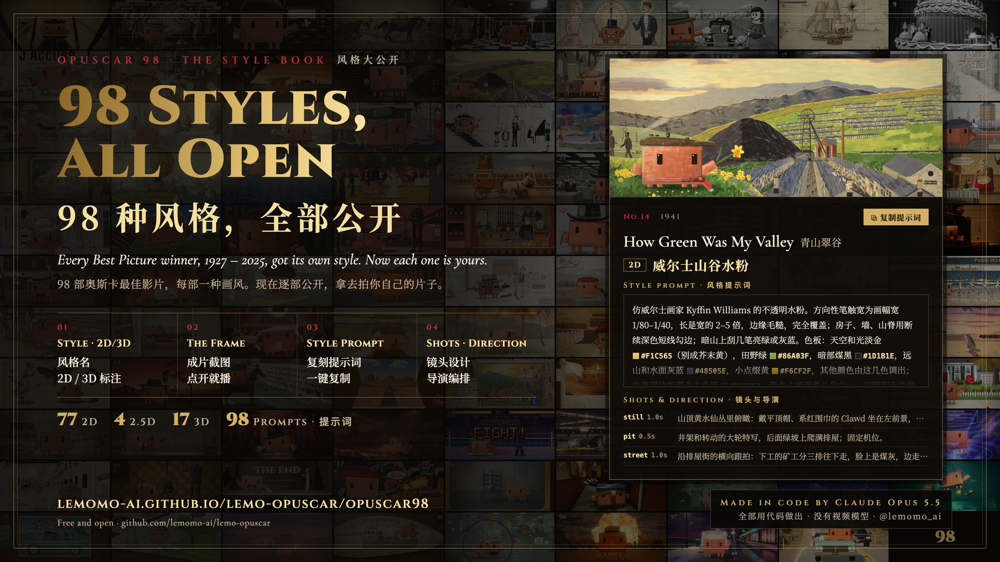
原帖
lemo-opuscar 已经1.5Kstart了， 今日大更新
短片 《Opuscar 98》 中所有98个奥斯卡最佳影片场景复刻的风格+提示词+导演执导大公开
可以在网站上一键复制提示词来复刻相应风格啦
用不到claude的朋友，可以把仓库直接扔给你的grok bot
他也可以直接本地skill
欢迎来玩： github.com/lemomo-ai/lemo-opuscar
（引用的前帖：《OPUSCAR 98》6 分半短片发布，2026-09-28。）
这次更新了什么
- 短片《OPUSCAR 98》（一个 Clawd 走过 1927–2025 年全部 98 部奥斯卡最佳影片，画面、音乐、剪辑均由 Claude Opus 5.5 写代码生成）里每部片的风格全部公开。
- 每部片包含：风格名与 2D / 2.5D / 3D 标注、截图、可复用的风格提示词（中英，一键复制）、镜头与导演编排。统计：2D 77 部、2.5D 4 部、3D 17 部。
- 官方影片页新增年代、2D/3D、文字筛选与中英切换；点截图会在角落小窗播放该片对应片段。
- 提示词在无关题材上做过盲测，并改写为与题材无关，可直接套用到自己的故事。
- 数据同时以 JSON 提供：opuscar98/styles.json。
- 用法不变：可装成 skill（推荐），其他 agent 可把
plugin/skills/lemo-opuscar/复制到自己的 skills 目录；作者也提到可以把仓库直接交给 grok bot 使用。
98 种风格全表
默片与有声（1927–1938）· Silents & Talkies

No.1 · 1927/28 《翼》 Wings — 3D 默片 3D 空战 · 正色片黑白 + 琥珀染色
three.js 三维 · 正色片黑白 · 默片染色 · 放映磨损和圆形光圈
用 three.js 搭的一战空战，按 1927 年正色片拷贝调色：天空发白、黑位很深、整体琥珀染色、片门抖动和划痕。《翼》最出名的是把摄影机绑在飞机上拍的空战，所以这里大部分机位都装在飞机上。
风格提示词（中文）
平滑着色的 3D 按默片正色片拷贝调色：高反差，红色发黑。天空近白，地面留清楚的中灰层次，深黑占画面 25%–35%，只在剪影里。染色：白位向琥珀 #FFCC80 混一半，天空是淡奶油琥珀，不要整片橙；黑位不变。只有故事围绕的那个主角留色，整个人都留，饱和度约七成（如 #D97757）；灯火和其他光源一律是灰的。叠 24 fps 片门抖动（±1 像素）、闪烁（±5%）、细颗粒（±4%）、一到三条细划痕、稀疏灰尘，片门圆角加柔和暗角，第一镜 1 秒圆形光圈打开。招牌镜头：机位绑在跟主角一起动的东西上，露出一截支架，轻微震动；再接跟拍和主观镜头。每 2–3 秒一切，穿过云、烟或强光白场转场。对标 William Wellman《翼》（1927）。避免：运动模糊、灰阶里有颜色。
Style prompt (EN)
Smooth-shaded 3D graded as a silent-era orthochromatic print: high contrast, reds go black. Sky near-white, ground in readable mid-greys, deep blacks (25-35% of frame) only in silhouettes. Tint: blend whites half-way toward amber #FFCC80, so the sky is pale cream-amber, never solid orange; blacks stay black. Only the hero the story centres on keeps colour, whole figure at ~70% saturation (e.g. #D97757); every lamp, fire or other light source stays grey. 24 fps gate weave (±1 px), flicker (±5%), fine grain (±4%), 1-3 thin scratches, sparse dust, rounded corners, vignette; open on a 1 s iris. Signature shot: a camera rigged to something moving with the subject, rig in frame; then chase and POV. Cut every 2-3 s; white out through cloud, smoke or glare. Reference: William Wellman, *Wings* (1927). Avoid: motion blur, colour in the greys.
镜头与导演（6 镜）
open0.9s：机头正前方对着座舱：Clawd 戴皮飞行帽、护目镜推在额头，夹在两根支柱中间；圆形光圈打开，镜头缓缓推近。dogfight0.6s：大全景：机群在云间盘旋，下面是格子田和白垩战壕，一架福克拖着黑烟；镜头缓缓推近。cockpit0.8s：机头机位带发动机震动：Clawd 回头看咬尾的福克，抬起一只手，双挺维克斯机枪开火闪光。enemy0.8s：从福克上翼看出去，敌机机枪开火，追着前方 Clawd 的 SPAD；机位固定在敌机上。dive1.1s：过 Clawd 肩头的俯冲镜头：前面是上翼和张线，弹坑和折线战壕迎面扑来。clouds0.8s：云团里的 SPAD 像幽灵一样朝镜头飞来，雾越来越浓，画面白到奶油色。
No.2 · 1928/29 《百老汇旋律》 The Broadway Melody — 2D 黑金银装饰艺术歌舞海报
装饰艺术海报 · 喷枪金属渐变 · A. M. Cassandre · Erté 服装
会动的黑金银装饰艺术歌舞海报：喷枪渐变、阶梯形台口、镀铬电容麦克风。1929 年的百老汇正是装饰艺术盛期，这部又是有声片降临的一部，所以让声波从麦克风里一圈圈放出来。
风格提示词（中文）
装饰艺术歌舞海报。黑漆底；金和银都用分带金属渐变做（每个面 3–5 条硬分界），喷枪光晕、放射线、阶梯形、流线型，场景外圈套一道层层退进的金线台口框，嵌一排灯泡。色板按用途：底 #0A0908，金 #D6B560，高光 #F3E2A2，银 #BFC4C9；皮肤用淡银奶油色；只有故事围绕的那个主角用一个饱和强调色（如 #D97757）。人物是 Erté 式修长造型，有五官表情，题材允许时加流苏、亮片或羽毛。细颗粒、闪光点、星星。正面对称，中间一束追光。动起来：灯泡流动，一排重复元素（舞者、浪头）向中心卷成波浪，主要声源或光源放射环纹；镜头慢推，踩音乐的拍子切，无乐每 2–3 秒一切。对标 A. M. Cassandre 的海报、Erté 的服装设计。避免：平涂黄色冒充金属、人物没脸、多余的颜色。
Style prompt (EN)
Art Deco revue poster. Black lacquer ground; gold and silver from banded metallic gradients (3-5 hard bands); airbrush glows, sunbursts, ziggurat steps, streamlined curves; a stepped proscenium frame of gold lines and bulbs. Palette: ground #0A0908, gold #D6B560, highlight #F3E2A2, silver #BFC4C9; skin pale silver-cream; one saturated accent (e.g. #D97757) only on the hero the story centres on. Elongated Erté-style figures with real faces; fringe, sequins or feathers where the subject allows. Fine grain, glints, stars. Frontal symmetry, a central spotlight. Motion: chasing bulbs, a row of repeated elements (dancers, waves, columns) rippling toward the centre, rings radiating from the main sound or light source; slow pushes, cut on the music's beat (without music, every 2-3 s). References: A. M. Cassandre's posters, Erté's costumes. Avoid: flat yellow for metal, faceless figures, extra hues.
镜头与导演（5 镜）
marquee0.8s：从白场里淡入：Astor 剧院的雨棚招牌（THE BROADWAY MELODY / ALL TALKING · ALL SINGING · ALL DANCING），灯泡流动；Clawd 戴硬草帽、拿手杖站在左边；镜头缓缓拉远。still1.0s：舞台全景：装饰艺术台口、台阶上的歌舞女郎，Clawd 在巨大的电容麦克风旁踢踏，麦克风开始一圈圈放出声波；镜头缓缓拉远。mic0.5s：镀铬弹簧环麦克风特写，声波放射、音符飞出；镜头推近。line0.5s：沿着踢腿队列横移：羽毛头饰、亮片短裙，腿一排排踢成波浪。close0.5s：Clawd 近景，踢踏中草帽一歪一歪，身后是麦克风环；轻推。
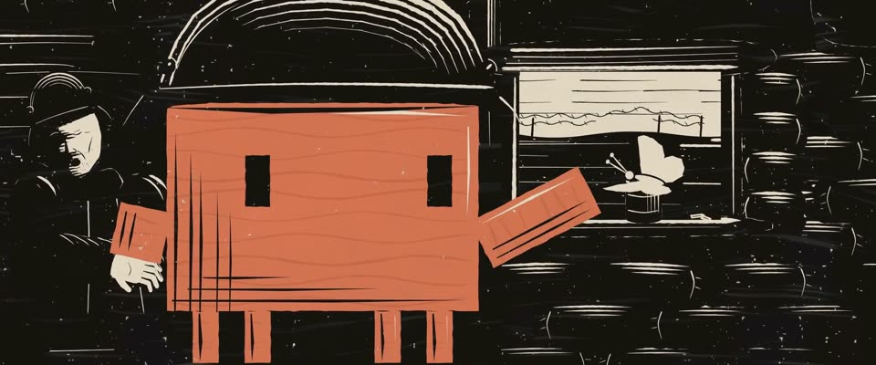
No.3 · 1929/30 《西线无战事》 All Quiet on the Western Front — 2D 珂勒惠支式反战木刻
木刻版画 · 凯绥·珂勒惠支 · 德国表现主义 · 双版套印
珂勒惠支式木刻：大块的黑、刀刻的白轮廓、粗糙木纹，Clawd 用单独一块橙色版套印。珂勒惠支 1921–22 年的反战版画，和这部片出自同一场战争、同一种悲痛。
风格提示词（中文）
仿凯绥·珂勒惠支《战争》组画（1921–22）的表现主义木刻。画面六到七成是实黑；形体之间用白色轮廓刀分开，刀宽为画幅宽的 1/300–1/150；人脸刻成白形，只留几笔黑五官；手要大。人物占满画面，被画框裁切。每刀都有尖的进刀收刀和碎木边，离光越近的刀越宽，刀痕成组排、节奏略不均。墨色 #17130F 印在 #E8DFCA 纸上；纹理只有木纹条和缺墨斑点（±5%）。只有故事围绕的那个主角套一块色版（如 #D97757），平铺在身体或衣服上，刀痕照样压在上面，黑仍占六成以上。光只从一个开口进来（窗、云缝）；灯只刻一小圈短刀痕。人物脚下的地面留不刻的黑。动作安静（呼吸、一个小手势）；慢摇、慢推。避免：灰雾灰调、排刀规整成条纹、血腥。
Style prompt (EN)
Expressionist woodcut after Käthe Kollwitz, *Krieg* (1921-22). 60-70% solid black; white contour cuts 1/300-1/150 of frame width separate forms; faces are white shapes with a few black features; hands large. Figures fill the frame, cropped by its edges. Each cut tapers in and out with chipped edges, is wider the nearer it sits to the light, in slightly uneven bundles. Ink #17130F on paper #E8DFCA; texture is only wood-grain streaks and under-inked speckle (±5%). One colour block (e.g. #D97757) only on the hero the story centres on, flat on its body or clothes, cuts over it; black stays 60%+. Light enters through one opening (window, cloud gap); lamps get a short ring of cuts. The ground under figures stays uncut black. Quiet motion (breathing, a small gesture); slow pans and push-ins. Avoid: grey fog or midtones, even striped hatching, gore.
镜头与导演（5 镜）
faces0.7s：沿战壕横摇，扫过刻出来的脸：一个双手捂脸，一个惊恐地看着，一个睡着了。poster0.4s：钢盔下一张直视镜头的脸（致敬 1930 年原海报）；慢推。clawd0.9s：中景：Clawd 戴德军钢盔站在射击台上，慢慢把手臂伸向射击孔，孔沿铁罐上停着一只白蝴蝶；镜头推近。butterfly0.7s：射击孔边白蝴蝶特写，Clawd 的橙色手臂从左边伸进来；推近。field0.6s：大全景：照明弹下的无人地带和白十字架墓地，幻影士兵的队列淡入、往远处走去；缓缓拉远。
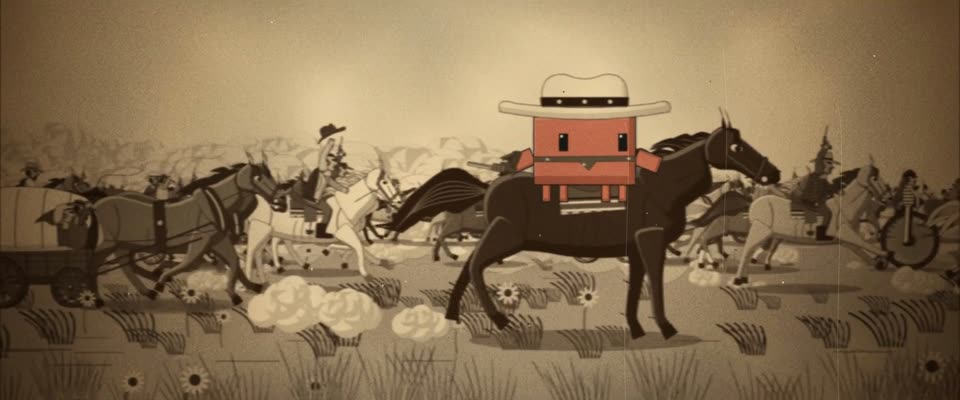
No.4 · 1930/31 《壮志千秋》 Cimarron — 2D 1889 棕褐蛋白印相全景
金调色蛋白印相 · 西部全景老照片 · 人物手工上色
1889 年的金调色蛋白印相全景：柔焦、轻微的横向拖影、奶油高光和暖褐暗部、银盐颗粒，只有 Clawd 手工上色。片子开场就是 1889 年俄克拉何马圈地狂奔，用那一年的照片质感来拍，这一章也保持单色。
风格提示词（中文）
会动的 1880 年代金调色蛋白照片。先画边缘柔和的平涂形，按亮度分：主体深（15%–30%），地面 50%–60%，天空约 90%；物面和草丛有看得见的排线（线宽约画幅宽 1/300）。再“印”：转灰度，轻柔焦（约画幅宽 1/800），三层横向错开的淡影随运镜拉长，乘奶油色 #F2DCB4，黑位抬成暖褐 #2E1C0F，显影不匀（±5%），暗角压到 #785634，每帧刷新颗粒（±4%），稀疏灰尘划痕。只给故事围绕的那个主角手工上色（如 #D97757），像透明染料，蒙版羽化 2–3 像素；灯光仍是棕褐。横向全景，中间一条带排满重复小元素：人物、动物、车辆，题材冷清就用篱笆、木桩、树；别让一整块大面占满画面。天空默认发白。运镜：从主角近景 4–5 秒缓出拉到全景。避免：硬墨线、主角以外的颜色、干净的数码天空、发灰的印相。
Style prompt (EN)
A moving 1880s gold-toned albumen photograph. Paint soft-edged flat shapes by brightness: main subjects dark (15-30%), ground 50-60%, sky about 90%; visible hatching and grass tufts (lines ~1/300 of frame width). Then print: grayscale, slight blur (~1/800 of frame width), a faint smear of three horizontal offset copies growing with camera speed, multiply cream #F2DCB4, lift blacks to umber #2E1C0F, blotchy development (±5%), vignette to #785634, per-frame grain (±4%), dust, scratches. Hand-tint only the hero the story centres on (e.g. #D97757) as transparent dye, mask feathered 2-3 px; lamps stay sepia. Wide panorama: the middle band packed with repeated small elements (figures, animals, vehicles; for a lone subject fences, posts, trees), no big plane dominating. Camera: one 4-5 s ease-out pull back from the hero to the panorama. Avoid: hard ink outlines, colour beyond the hero, a flat grey print.
镜头与导演（2 镜）
pull1.5s：从骑黑马冲在最前的 Clawd 近景开始，一路拉到全景：篷车、驿站马车、尘土里一大片骑手。close1.0s：切到 Clawd 骑马的近景：举起左轮朝天开枪，画面随着后坐力一震；轻推。
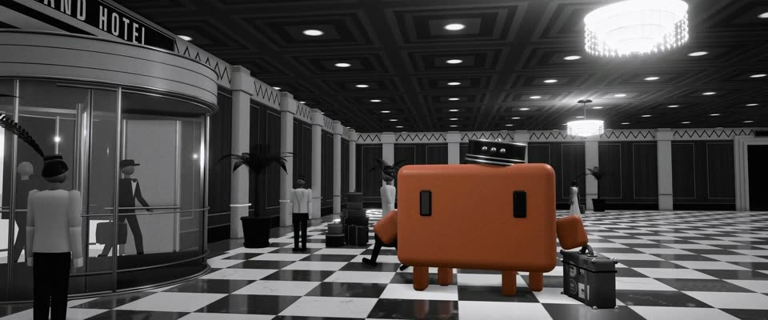
No.5 · 1931/32 《大饭店》 Grand Hotel — 3D 米高梅银色黑白 3D 大堂
three.js 三维 · 米高梅银色黑白 · 装饰艺术室内 · 俯拍同心构图
用 three.js 建的圆形大堂，按米高梅的银色黑白调色，Clawd 的橙是唯一的颜色。这部片最出名的是从顶上笔直往下拍、回廊一圈圈收进去的镜头，整个布景就按这一镜来建。
风格提示词（中文）
真 3D 场景，默认装饰艺术风大堂（大理石、镀铬、吊灯、亮面棋盘格地面）；室外保留真实场景，表面做出光泽（湿路面、静水），构图对称。环境光遮蔽加柔和辉光，调成 30 年代片厂银色黑白：约四成画面深黑，白位亮度约九成，不发灰。光从一个高处光源成束落下。只有故事围绕的那个主角留色（如 #D97757），至少占画面高度六分之一；暖灯渲染成白光，辉光只在灯旁。颗粒（±3%），灯旁光晕。招牌镜头：平视大全景，望进对称纵深，地面和天花同时入画，地面有倒影；再接 4–6 秒的侧向跟拍；俯拍同心圆、人像棋子只用一次。年代人物有头、帽、四肢，按路线走。对标美术指导 Cedric Gibbons、摄影师 William Daniels。避免：原地踏步、抽象图案铺满画面、偏色。
Style prompt (EN)
A real 3D set, by default an Art Deco interior (marble, chrome, chandelier, glossy checkerboard floor); outdoors keep the real setting with glossy surfaces (wet pavement, still water) and symmetrical framing. Ambient occlusion, soft bloom; 1930s studio silver: about 40% deep black, glossy whites near 90%, no washed-out greys. Light falls in shafts from one high source. All neutral grey except the hero the story centres on (e.g. #D97757), at least 1/6 of frame height; warm lamps render white, bloom only around them. Grain (±3%), halation. Signature shot: eye-height wide into a deep symmetrical set, floor and ceiling in frame, floor reflections; then 4-6 s tracks; one overhead on rings, figures as chess pieces. Period figures (heads, hats, limbs) walk routes. References: art director Cedric Gibbons, cinematographer William Daniels. Avoid: walking in place, frame-filling abstract patterns, colour casts.
镜头与导演（2 镜）
overhead1.1s：从天窗下笔直往下看：六层回廊一圈圈收向钥匙塔，橙色门童是棋盘格大理石上唯一的一个点，正走过地面；镜头慢慢推近。follow1.4s：贴着 Clawd 身高的侧面跟拍：它拎着皮箱往前走，大堂从身后滑过，前方旋转门在转；镜头边跟边往前、往里靠。
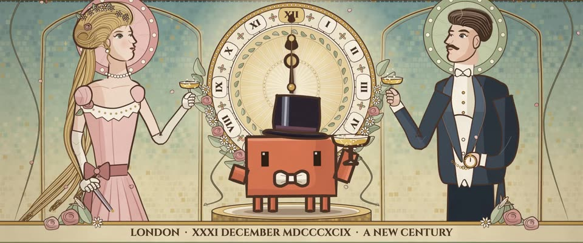
No.6 · 1932/33 《乱世春秋》 Cavalcade — 2D 慕夏新艺术装饰画
阿尔丰斯·慕夏 · 彩色石印 · 新艺术装饰纹样
慕夏式新艺术装饰画：膨胀的褐色轮廓线、粉彩平涂、马赛克底，中心人物身后一个光环。电影开场就是 1899 年跨年夜一家人举杯迎接新世纪，所以光环做成敲十二点的钟面。
风格提示词（中文）
慕夏式彩色石印。褐色 #4B3326 轮廓线，宽约画幅宽 1/250，背光侧（光默认从左上来）加粗到两倍，两端收尖；粉彩平涂，每块在背光侧叠一层深一档的硬边色。色板：奶油 #F5ECD6 作纸和天空，鼠尾草绿 #A9B490 作植物衣褶，淡金 #CFA55A 作光环装饰，玫瑰 #DBA49C 作皮肤和花；故事围绕的那个主角用一个更浓的强调色（如 #D97757）。横幅：人物和细环纹大光环居中三分之一，两侧拱格，后面铺灰青（鼠尾草绿掺灰）方块马赛克；鞭线藤蔓和花草；底部一条衬线大写铭文，用用户语言，字高约画面 1/25。留白不超过画面八分之一。杏仁眼、厚眼睑；头发或衣料三色成束。石版颗粒、纸斑、暗角。慢摆；下摇到光环再拉远。避免：干净细线、饱和色、空荡背景。
Style prompt (EN)
Alphonse Mucha colour lithograph. Brown contours #4B3326, about 1/250 of frame width, doubling on the shadow side (light from upper left), tapered ends; pastel flats, each with a hard-edged darker shadow tone. Palette: cream #F5ECD6 paper/sky, sage #A9B490 foliage/drapery, pale gold #CFA55A halo/ornament, rose #DBA49C skin/flowers; the hero the story centres on in one stronger accent (e.g. #D97757). Wide frame: figure and a big ring-filled halo in the middle third, arched panels either side, behind them a muted-teal (sage plus grey) square-tile mosaic; whiplash vines, local flowers; a bottom band of serif capitals in the user's language, 1/25 of frame height. No plain area over 1/8 of frame. Almond eyes, heavy lids; hair or cloth in three-tone strands. Litho grain, paper mottle, vignette. Slow sway; tilt down to the halo, pull back. Avoid: thin clean lines, saturated colour, empty backgrounds.
镜头与导演（3 镜）
clock1.1s：从 CAVALCADE 标题和奔马横饰带往下摇到钟面光环并推近；指针合到 XII，敲钟那一下光环一闪。toast0.8s：举杯中景：戴高礼帽、白领结的 Clawd 一跳，举起香槟碟，两侧的简和罗伯特也举杯；轻拉。still0.6s：拉远到整幅慕夏装饰画：三只杯子举着，玫瑰花瓣飘落，底部是 LONDON · XXXI DECEMBER MDCCCXCIX · A NEW CENTURY 铭文带。
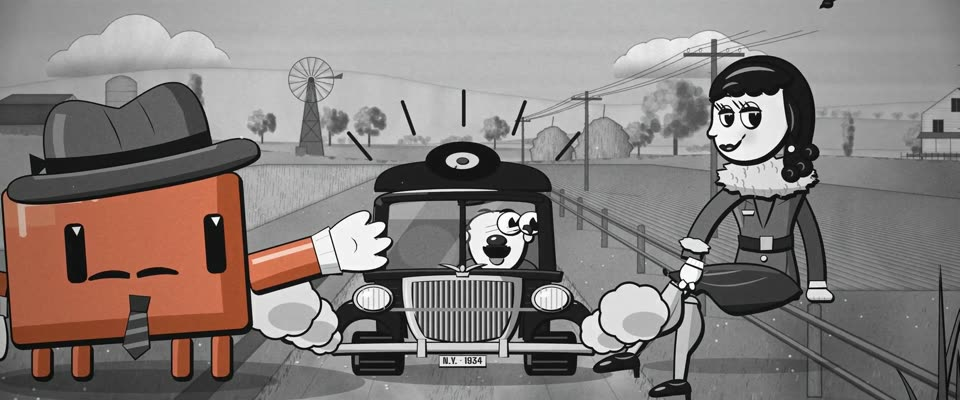
No.7 · 1934 《一夜风流》 It Happened One Night — 2D 30 年代黑白橡皮管卡通
弗莱舍橡皮管 · 赛璐璐上色 · 糊涂交响曲水彩背景 · 放映胶片磨损
1934 年的黑白橡皮管卡通：粗细变化的墨线、饼切眼、白手套，赛璐璐平涂叠在灰阶水彩背景上，带胶片颗粒。和电影同一年，公路喜剧的笑点也适合卡通的节奏。
风格提示词（中文）
30 年代初的黑白橡皮管卡通。角色：软管四肢、白手套、饼切眼、圆脑袋，三到四头身；墨线 #141414 粗细变化（画幅宽 1/400–1/150），背光一侧变粗（默认光从左上）；角色平涂只用纯黑、纯白，加至多一种浅灰作硬阴影，黑面一道高光。背景只用中间灰（明度 30%–80%），不用纯黑白：铅笔线不擦，灰色水彩罩染，边缘积水有颗粒沉淀。只有故事围绕的那个主角带颜色（如 #D97757）：整个身体，主角是人时只给关键道具。加 ±1 像素片门抖动、24 fps 颗粒（±4%）、闪烁、划痕、灰尘。动作都有预备、冲过头再回落：落地压扁、快动拉长、吃惊时弹眼，碰撞时镜头轻震。对标弗莱舍工作室的 Betty Boop 短片、迪士尼《糊涂交响曲》的背景。避免：光滑矢量线、角色发灰和背景糊在一起。
Style prompt (EN)
Early-1930s black-and-white rubber-hose cartoon. Characters: noodle limbs, white gloves, pie-cut eyes, round heads; thick-thin ink #141414 (1/400-1/150 of frame width) swelling away from the light (default upper left); fills pure black and white plus at most one light grey for the hard shadow, gloss on blacks. Backgrounds stay mid-grey (30-80%), never pure black/white: graphite lines left in, grey watercolour washes with pooled edges and granulation, paper grain. Only the hero the story centres on has colour (e.g. #D97757): its whole body, or its one key prop if the hero is human. ±1 px gate weave, grain (±4%), flicker, scratches, dust. Actions anticipate, overshoot, settle: squash on landing, stretch on fast moves, eyes pop when surprised, a camera jolt on hits. References: Fleischer's Betty Boop shorts; Disney's Silly Symphonies backgrounds. Avoid: smooth vector lines, grey characters merging with the background.
镜头与导演（3 镜）
thumb0.7s：Clawd 竖起的白手套大拇指和得意的脸，身后是空路，一辆车从坡顶开过来；慢推。two0.7s：双人镜头：Clawd 在路边竖拇指，艾莉坐在栅栏上把裙摆撩到小腿；轻拉。road1.1s：收尾全景：车在两人中间急刹，司机眼珠弹出来；Clawd 瞪大眼、张开双手，帽子跳起；急停那一下镜头一震。
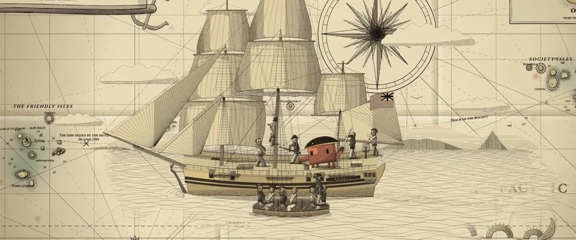
No.8 · 1935 《叛舰喋血记》 Mutiny on the Bounty — 2D 海军部海图铜版画
18 世纪海军部海图 · 铜版线刻 · 手工淡彩 · Robert Dodd 的版画
18 世纪英国海军部海图的铜版画：恒向线、罗盘玫瑰、水深数字、手工淡彩，邦蒂号是图上的一幅船舶插画。这部片讲的是一次航行，所以整段都留在海图上。
风格提示词（中文）
18 世纪末的铜版地图，默认是英国海军部海图（内陆题材换成测绘图）。明暗全靠刻刀细排线和交叉排线，线宽约画幅宽的 1/1200；线宽设下限，细小处变暗而不是消失。墨色 #1C1610 印在 #EFE3C4 直纹纸上，带淡霉斑和折痕。只上很薄的手工淡彩：沿水边的海蓝 #9EBCBC，陆地 #B8C08C；故事围绕的那个主角（如 #D97757）是唯一的浓色。32 向罗盘玫瑰拉出恒向线网、刻度边框、晕滃山形、装饰图名框、一个装饰物（如海怪）、衬线字。情节放进一幅不加边框的排线插画，排线向纸面渐隐；推到底时插画占画面高度 60%–75%。运镜：一个 5–6 秒的镜头从整张图滑进插画，四周留着地图；一条虚线路线自己画出来。避免：切出纸面、浓重水彩、僵硬的人物。
Style prompt (EN)
A late-18th-century copperplate map, default an Admiralty sea chart (inland: a survey map). Fine burin hatching and cross-hatching (lines ~1/1200 of frame width) give all tone; a minimum line width makes small detail darken, not vanish. Ink #1C1610 on laid paper #EFE3C4, light foxing, folds. Thin hand colour: water #9EBCBC along edges, land #B8C08C; the hero the story centres on (e.g. #D97757) is the one strong colour. Rhumb lines from 32-point roses, a graduated border, hachured hills, cartouche, one ornament (e.g. a sea monster), serif lettering. Put the action in an unboxed engraved vignette fading into the chart, filling 60-75% of frame height at the end of the move. Camera: one 5-6 s glide from the whole sheet into the vignette, chart still around it; a dotted route inks itself in. Avoid: cropping the paper, heavy washes, stiff figures.
镜头与导演（1 镜）
chart2.5s：一镜到底：从整张海图开始，邦蒂号沿虚线航迹前进，镜头滑进图上的船舶插画，四周仍是恒向线和罗盘玫瑰；甲板上 Clawd 举起弯刀、指着布莱让他下船，小艇落到船尾，驶向帝汶的航迹在图上一路画出来。
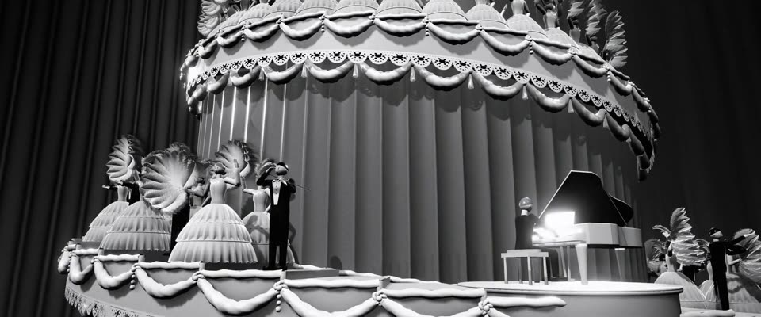
No.9 · 1936 《歌舞大王齐格飞》 The Great Ziegfeld — 3D 银色黑白 3D 螺旋婚礼蛋糕舞台
three.js 三维 · 米高梅银色黑白 · 1936 年歌舞大场面 · 鸵鸟羽毛与雪纺
用 three.js 建的旋转螺旋“婚礼蛋糕”舞台，米高梅银色黑白：缎面、雪纺和鸵鸟羽毛衬在深黑里，只有 Clawd 是颜色。《A Pretty Girl Is Like a Melody》那座 175 级的螺旋舞台是这部片的名场面。
风格提示词（中文）
真 3D 舞台大场面，调成 30 年代片厂银色黑白：把题材的世界搭成圆形分层转台上的歌舞布景，慢慢转（每秒约 3 度），挂满垂幔花环；题材里的人变成一排排穿戏服、有脸有手的合唱队。灰阶：戏服浅缎灰，布景中灰，褶皱大幕更深，剧场深黑；白色不到纯白。正面柔和主光，轮廓光更亮，把缎子和羽毛的边勾到近白。淡光柱，颗粒（±3%）。只有故事围绕的那个主角留色（如 #D97757），灯都渲染成白光。招牌镜头：贴低的中景沿层台看过去，人物占画面高度四分之一到三分之一，主角在前排。再接帷幕升起（3 秒）、10 秒吊臂上升，落到平视主角的中景。对标 Robert Z. Leonard《歌舞大王齐格飞》（1936）。避免：平均打光、没脸的锥形人、转得太快。
Style prompt (EN)
Real 3D stage spectacle in 1930s studio silver: the subject's world built as a revue set on a round tiered platform turning about 3° per second, draped and garlanded; its people become rows of costumed chorus figures with faces and arms. Costumes light satin grey, set mid-grey, pleated curtain backdrop darker, theatre deep black; whites below pure white. Soft front key; brighter rim lights edging satin and feathers near-white. Faint shafts, grain (±3%). All neutral grey except the hero the story centres on (e.g. #D97757); lamps render white. Signature shot: low medium along the tiers, figures 1/4-1/3 of frame height, the hero on the front tier. Then a 3 s curtain rise, a 10 s crane up to a level medium of the hero. Reference: Robert Z. Leonard, *The Great Ziegfeld* (1936). Avoid: flat lighting, faceless cones, fast spinning.
镜头与导演（3 镜）
curtain0.9s：正面低机位：雪纺帷幕从旋转的蛋糕舞台上飞起，一层层举扇的女郎露出来，顶上是小小的 Clawd；镜头往上仰。rise0.8s：沿螺旋吊臂上升，扫过羽毛扇、白色三角钢琴和小提琴手，停在顶层之下。top0.8s：几乎平视的中景：顶上的 Clawd 戴鸵鸟羽毛头饰，转身面对镜头，双臂甩成 V 字；慢推。
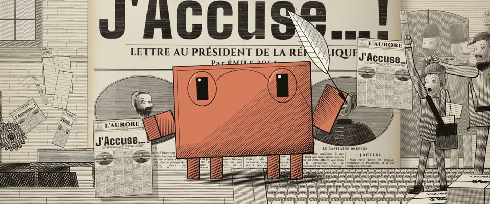
No.10 · 1937 《左拉传》 The Life of Emile Zola — 2D 报纸活字印刷 + 线刻插图
木活字大标题 · 新闻纸活字印刷 · 1890 年代线刻
报纸活字印刷加 1890 年代线刻插图：木活字大标题、密排铅字正文，泛黄新闻纸上的油墨外扩和缺墨，人物用排线画。这部片最有名的画面就是 1898 年 1 月 13 日《震旦报》的《我控诉》头版。
风格提示词（中文）
1890 年代的报纸印刷。文字先排成清晰墨版再“印”：约 1 像素模糊加噪声阈值切边，做出油墨外扩、字边毛糙、局部缺墨、淡淡的背面镜像透字。版面语法：报头、横贯全宽的木活字大标题（约画面高度 1/6）、3–6 栏小字正文（用用户的语言，字高约画面 1/80）夹着一幅大线刻插图。木活字一字一块，带木纹。所有画面都是线刻：线宽约画幅宽 1/1000、间距约 1/400，顺着形体走，交叉排线只用在暗部，背光一侧轮廓加粗，远处用淡墨。暖黑 #17130F 印在新闻纸 #E8E0CC 上；故事围绕的那个主角单独一块强调色版（如 #D97757），套印偏 1–2 像素。动起来：活字块砸下、回弹、留下印迹；一个反复的机械动作，报纸翻页。避免：干净的数码字体、平滑灰调、其他颜色。
Style prompt (EN)
1890s newspaper print. Set text as a sharp mask, then print: ~1 px blur and a noisy threshold for ink spread, ragged edges, under-inked patches, faint mirrored show-through. Page grammar: masthead, a wood-type headline across the width (~1/6 of frame height), 3-6 columns of small type in the user's language (~1/80 of frame height) flanking one large engraved picture. Wood-type letters are grained blocks. Everything pictured is a line engraving: hatching lines about 1/1000 of frame width, spaced 1/400, following the form, cross-hatching only in darks, heavier shadow-side contours, paler distance. Warm black #17130F on newsprint #E8E0CC; the hero the story centres on gets one accent plate (e.g. #D97757), offset 1-2 px. Motion: type blocks slam down, bounce and leave their print; one repeating mechanical motion, pages turning. Avoid: clean digital type, smooth grey shading, other colours.
镜头与导演（3 镜）
headline0.9s：《震旦报》头版特写（JEUDI 13 JANVIER 1898）：“J'Accuse…!”的木活字一个个砸下来，最后一个落下时整版一震；镜头推近。clawd0.8s：中景：扮左拉的 Clawd 站在头版前，从手里的报纸上抬起头，一跳，把鹅毛笔高高举起，右边报童在叫卖；轻拉。press0.8s：轮转印刷机在转，印刷工举起湿报纸，报纸一张张飞出来；镜头拉远并向右移。
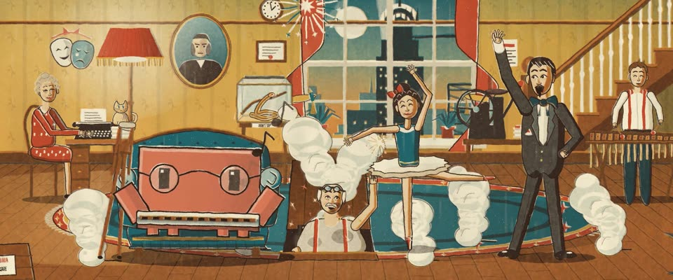
No.11 · 1938 《浮生若梦》 You Can't Take It with You — 2D WPA 丝网海报
30 年代 WPA 丝网印 · 分色渐变 · 六色不透明平涂油墨
30 年代 WPA 丝网海报：六色不透明平涂油墨、分色渐变、轻微套印错位，印在棉浆纸上。1936–39 年联邦艺术计划的海报就是这部片同年代的美国平面语言，也和第 10 部的报纸拉开距离。
风格提示词（中文）
1936–39 年 WPA 联邦艺术计划的丝网海报。六色不透明油墨从浅到深套印，后印的版要在不该盖住的浅色形（云、太阳、高光）处镂空：奶油 #F0E2C0 给光和云，赭 #E0A842、朱红 #C84A2A 给天空和暖色面，青 #22686E 给水和阴影，主角专用色（如 #D97757，只用在故事围绕的那个主角身上），最后印深棕描边 #322018。阴影是深一色叠印，不用灰。大面积用分色渐变：两色 2–3 级粗台阶，中间一级是两色叠印。每版套偏 1–3 像素，模版边缘游移，刮板拖痕、漏印，平涂上都有暖色棉浆纸纹（±5%）。人物占画面高度二分之一到三分之二：大块面、月牙形暗面、棕色描边、脸有表情。留一条粗体大写标题，用用户的语言。慢推，一版一版弹出来。避免：网点、平滑渐变、干净的矢量平涂。
Style prompt (EN)
A 1936-39 WPA (Federal Art Project) silkscreen poster. Six opaque inks printed light to dark, each later screen cut away around lighter shapes (clouds, sun): cream #F0E2C0 for light, ochre #E0A842 and vermilion #C84A2A for sky and warm planes, teal #22686E for water and shade, the hero's own ink (e.g. #D97757, only on the hero the story centres on), brown keyline #322018 last. Shadows: a darker ink overprinted, never grey. Big areas get split-fountain blends: two inks in 2-3 coarse steps, the middle one their overprint. Screens 1-3 px off register; wandering stencil edges, squeegee streaks, warm rag-paper grain (±5%) on every flat. Figures fill 1/2-2/3 of frame height: big planes, crescent shadows, expressive faces. A bold capital title band, user's language. Slow pushes; screens pop in one by one. Avoid: halftone dots, smooth gradients, clean vector flats.
镜头与导演（3 镜）
still0.8s：整个凡德霍夫家客厅，像一张海报：Clawd 扮爷爷，戴圆眼镜坐在青色扶手椅里吹口琴，埃西在窗前踮脚跳舞，科伦科夫高喊拍子，德皮纳从地下室活板门里探出头；轻拉。harmonica0.6s：Clawd 近景：圆眼镜、口琴，音符往上飘，德皮纳在画面边上；推近。fireworks1.1s：回到客厅，地下室的烟花炸开：火箭、星爆和烟柱填满屋子；镜头拉远。
彩色与战争（1939–1949）· Colour & War
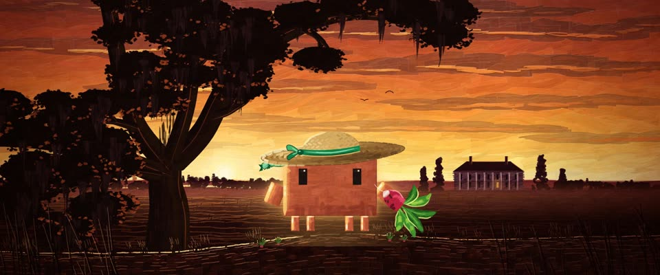
No.12 · 1939 《乱世佳人》 Gone with the Wind — 2D Technicolor 厚涂油画
厚涂油画 · 刮刀 · 1939 年 Technicolor 配色 · 史诗海报画
厚涂油画：刮刀色块、颜料堆起的棱，Technicolor 的热度——从金色烧到血红的天空、红土、黑色剪影。全片的色彩从《乱世佳人》开始降临，第一张满色画面就是夕阳下的塔拉。
风格提示词（中文）
1939 年 Technicolor 配色的厚涂油画。刮刀色块：天空用长条横向色带（长为画幅宽的 1/15–1/6，厚约 1/60），地面和人物用顺形体的短笔触，之间留出平静、薄涂的区域；颜料棱受左上方的光，越亮越厚，薄处露布纹。默认是落日天空，从酒红 #3A0912 经大红 #A8241A、橙 #F27A22 烧到金 #FFD878；地面红褐 #6E2214；剪影是带暖意的近黑；故事围绕的那个主角保持看得清的暖中间调（如 #D97757），不做成剪影。强逆光，金色轮廓光；近景加一道暖色侧光照亮半边脸和手。构图像史诗海报：大块深色剪影（树、房子、岩石、人物）压在低地平线上。灯火用油画火焰。运镜：全景慢推，低机位推近主角，最后吊臂升起看大景。避免：大小一样的碎块铺满画面、脏棕色、平滑渐变。
Style prompt (EN)
Impasto oil in a 1939 Technicolor palette. Palette-knife slabs: long horizontal sky bands (1/15-1/6 of frame width long, about 1/60 tall), shorter strokes following form on land and figures, calm thin areas between; ridges lit from upper left, paint thickest in highlights, canvas weave where thin. Default sunset sky: wine #3A0912, red #A8241A, orange #F27A22, gold #FFD878; ground red-brown #6E2214; warm near-black silhouettes. The hero the story centres on stays a readable warm mid-tone (e.g. #D97757), never a silhouette. Strong backlight, gold rims; in close shots a warm side light on half the face and hands. Epic-poster composition: big dark silhouettes (trees, buildings, rocks, figures) on a low horizon. Lamps as painted flames. Camera: slow push on the wide, low push-in on the hero, crane up to a vista. Avoid: tiled same-size strokes, muddy browns, smooth gradients.
镜头与导演（5 镜）
tara1.7s：塔拉剪影全景：大橡树、白房子和雪松黑压压地立在从金色烧向血红的天空下，Clawd 站在红土丘上拿着萝卜；慢推。oath1.0s：压低地平线推近，背后是燃烧的天空：戴绿缎带宽檐草帽的 Clawd 把萝卜高高举起，逆光一圈金边。close0.4s：Clawd 脸和草帽的近景，缎带尾巴在风里翻飞。fire1.5s：亚特兰大大火：马车冲过燃烧的仓库和木构架，Clawd 坐在瑞德旁边的驾座上，后面是普莉西和梅兰妮；镜头跟着横移，前景火舌掠过。depot2.1s：火车站一条升降长镜头：从站在伤兵中间的 Clawd 一路升高后退，一排排伤兵铺满红土直到地平线，场中一面破旗，Clawd 只剩一个橙色小点。
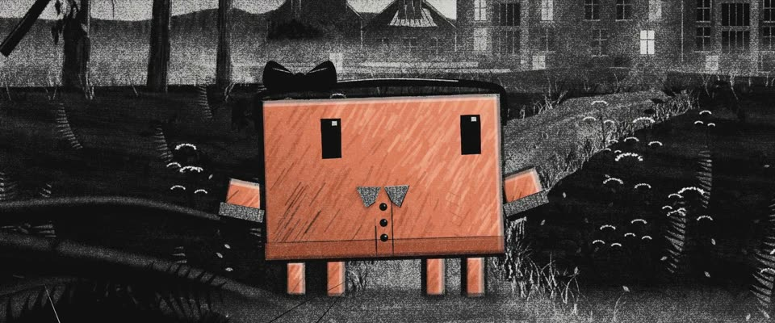
No.13 · 1940 《蝴蝶梦》 Rebecca — 2D 哥特炭笔画
藤炭笔 · 橡皮擦白与手指抹开 · William Kentridge · 哥特悬疑
粗纹纸上的炭笔画：天鹅绒般的黑、抹开的灰，月光和雾用橡皮擦出来。希区柯克的《蝴蝶梦》是一场黑白哥特梦，庄园先在雾里、后在火里，炭笔两样都画得出来。
风格提示词（中文）
有纹的纸上画炭笔。纸纹细（颗粒约画幅宽 1/600）：轻压只挂纹峰，重压填满纹谷。颗粒只在中间调；黑如天鹅绒，擦白是干净纸面。明暗：约六成画面暗到中灰，一成半深黑，在最近的前景和最大块面上，亮处少。炭色 #121111，纸色 #EEECE7。笔法：藤炭干笔断线，炭条侧锋顺形体宽扫（宽为画幅宽 1/60–1/30），排线，手指抹，橡皮擦出边光和光晕；雾是在铺好的灰调上横向擦出来的（如 William Kentridge 的动画素描）。只有故事围绕的那个主角用粉彩（如 #D97757），铺得较实、透点纸纹，炭笔勾边；火焰保持炭黑和纸白。月光从上方来，两三层雾带不同速横漂。运镜：主观镜头慢推，前景向两边分开。避免：数码噪点、光滑的数码光晕、发灰的黑、空亮的天空。
Style prompt (EN)
Charcoal on toothed paper. Fine tooth (grain ~1/600 of frame width): light pressure catches only the peaks, heavy pressure fills the valleys. Grain only in midtones; velvet blacks, clean-paper lifts. Values: ~60% dark-to-mid grey, 15% deep black in the nearest foreground and largest masses, lights small. Charcoal #121111 on paper #EEECE7. Marks: broken vine lines, side-of-the-stick sweeps (1/60-1/30 of frame width) following form, hatching, finger smudges, eraser lifts for edges and glows; mist is horizontal streaks erased out of a toned area (as in William Kentridge's animated drawings). Only the hero the story centres on is in pastel (e.g. #D97757), laid fairly solid, tooth peeking through, outlined in charcoal; flames stay charcoal-and-paper. Moonlight from above; 2-3 fog bands drift at different speeds. Camera: slow subjective push, foreground parting. Avoid: digital noise, smooth digital glows, grey blacks, empty bright skies.
镜头与导演（4 镜）
drive0.9s：沿着荒草蔓生的月下车道主观推进，树林分开，雾里露出曼德利，几扇本不该亮的窗亮着灯。close0.6s：Clawd 近景，扮第二任德温特夫人：天鹅绒发箍、开衫翻领，身后是曼德利；慢推。house0.5s：月光下的曼德利，镜头推近，火从一扇扇窗里烧起来。danvers0.5s：丹弗斯太太一动不动站在燃烧的窗口，双手交叠，冷脸被平光照着；镜头往她脸上推。
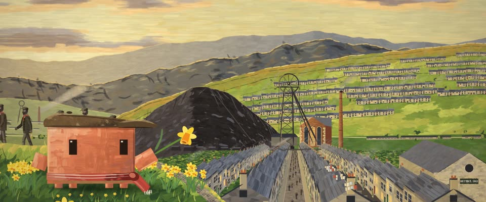
No.14 · 1941 《青山翠谷》 How Green Was My Valley — 2D 威尔士山谷水粉
不透明水粉 · Kyffin Williams 刮刀风景 · 1941 原海报配色
用 1941 年原海报金黄加绿配色的不透明水粉：扎实的色块、煤黑的渣山、Kyffin Williams 式厚重的深色山体和断续描边。原定的木刻和第 3 部重复，改成水粉；画的是矿工唱着歌走下山谷回家。
风格提示词（中文）
仿威尔士画家 Kyffin Williams 的不透明水粉。方向性笔触宽为画幅宽 1/80–1/40，长是宽的 2–5 倍，边缘毛糙，完全覆盖；房子、墙、山脊用断续深色短线勾边；暗山上刮几笔亮绿或灰蓝。色板：天空和光淡金 #F1C565（别成芥末黄），田野绿 #86A03F，暗部煤黑 #1D1B1E，远山和水面灰蓝 #48505E，小点缀黄 #F6CF2F，其他颜色由这几色调出；故事围绕的那个主角用 #D97757，至少占画面高八分之一。田野和天空偏亮（约六成），山和房子偏暗。暖色调色不超过一成，暗角，颗粒。默认傍晚低角度侧光，田野受光，山脊有轮廓光。从高处真透视取景，一条路把视线引下去；小房子（或墙、石块）顺山坡一级级排开。动起来：烟或云循环飘动，横向跟拍。避免：水彩透明感、矢量平涂、发暗发脏。
Style prompt (EN)
Opaque gouache after Welsh painter Kyffin Williams. Directional strokes 1/80-1/40 of frame width, 2-5 times as long, ragged, fully covering; broken dark dashes outline buildings, walls and ridges; dark hills flecked with lighter green or slate knife marks. Palette: sky and light pale gold #F1C565 (not mustard), fields green #86A03F, darks coal #1D1B1E, far hills and water slate #48505E, small accents yellow #F6CF2F, other colours mixed from these; the hero the story centres on #D97757, at least 1/8 of frame height. Fields and sky light (~60%), hills and buildings dark. Warm grade under 10%, vignette, grain. Default low late-afternoon side light: fields lit, ridges rim-lit. From high ground in true perspective, a path leading the eye down; small repeated buildings (or walls, rocks) stepping along slopes. Motion: looping smoke or cloud, a lateral track. Avoid: watercolour transparency, vector fills, mud.
镜头与导演（3 镜）
still1.0s：山顶黄水仙丛里俯瞰：戴平顶帽、系红围巾的 Clawd 坐在左前景，手拿一枝黄水仙，排屋街一路通到谷底的井架和煤渣山；慢拉。pit0.5s：井架和转动的大轮特写，后面绿坡上爬满排屋；固定机位。street1.0s：沿排屋街的横向跟拍：下工的矿工分三排往下走，脸上是煤灰，边走边唱；Clawd 走在前排，房子从身后滑过。
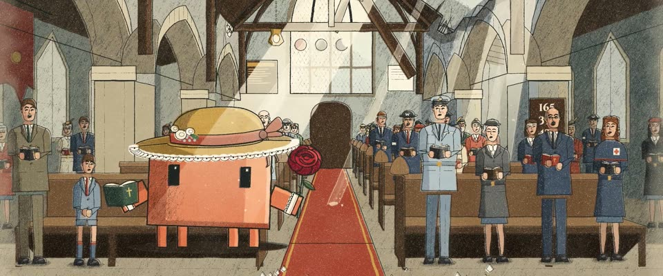
No.15 · 1942 《忠勇之家》 Mrs. Miniver — 2D 英国战时石印海报
石印 + 蜡笔阴影版 · Frank Newbould、Abram Games 二战海报 · 英国信息部海报配色
二战英国本土战线的石印海报：砖红、深绿、奶油、灰蓝的有限套色，阴影是石版蜡笔颗粒。配影片结尾：被炸穿屋顶的乡村教堂里全村唱诗，喷火式战机从破洞上方飞过。
风格提示词（中文）
做成 1942 年英国战时的石印海报。造型简化有力，三版套印，略错位 1–3 像素：色版承载所有平涂；冷灰蓝蜡笔版压暗每一处阴影，带短而斜的石纹颗粒（不用网点）；墨绿黑轮廓版给每个形描一圈约画幅宽 1/500 的线，人物和云也要描。配色按用途：奶油 #EBDFC2 是纸色和亮部，灰蓝 #8497A6 是天空和阴影，砖红 #A23F2D 和深绿 #34503F 只作点缀，合计不超过画面四分之一；棕色和肤色由奶油加砖红调出；轮廓色 #1E2422。场景可以排满。天空用喷枪渐变，只有纸纹每秒 12 帧跳动。浅色光带顺着光源方向斜落，照到之处阴影版消失。人物正面站立，像海报里的人。镜头慢移带视差、上摇。对标 Frank Newbould、Abram Games。避免：网点阴影、干净的矢量边、大片饱和色。
Style prompt (EN)
A 1942 British wartime stone-lithograph poster. Simple, strong shapes from three plates, 1-3 px off register: a colour plate with all flat fills; a grey-blue crayon plate darkening every shadow with short slanted stone grain; a green-black key line about 1/500 of frame width around every shape, figures and clouds included. Palette by role: cream #EBDFC2 paper and highlights, grey-blue #8497A6 sky and shadow, brick red #A23F2D and deep green #34503F as accents, at most a quarter of the frame; browns and skin mixed from cream and brick; key #1E2422. Scenes may be full. Airbrushed skies; only the paper grain boils at 12 fps. Pale light bands, angled from the source, cancel the shadow plate. Figures stand frontally. Camera: slow drifts, a tilt up. References: Frank Newbould, Abram Games. Avoid: dot screens, clean vector edges, big saturated fields.
镜头与导演（3 镜）
still0.8s：全景，顺着被炸的教堂中殿看过去：村民站在长椅间唱诗，阳光成柱照下；Clawd 戴花边草帽坐在第一排，拿着赞美诗集和红玫瑰在唱。镜头微微后拉。close0.6s：Clawd 和玫瑰的近景：引擎声传来，它停下不唱，抬头看向屋顶。镜头轻推。roof1.1s：从教堂里垂直仰拍屋顶的破洞：断裂的椽子框住天空，喷火式战机排成 V 字飞过。镜头慢推并略微旋转。
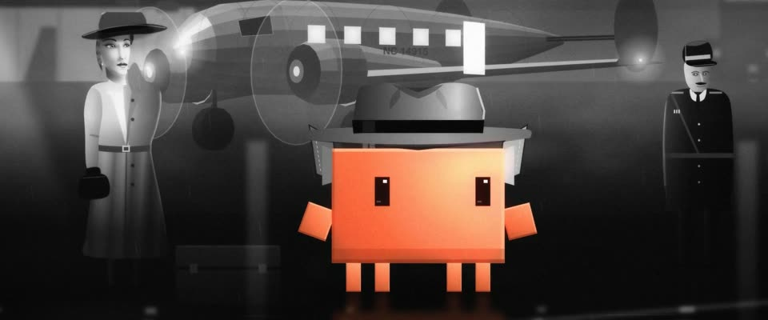
No.16 · 1943 《卡萨布兰卡》 Casablanca — 2D 好莱坞片厂柔光黑白
喷枪精修剧照人像 · Arthur Edeson 片厂布光 · 柔光镜与银盐颗粒
影片本身的样子：Arthur Edeson 的片厂黑白，画成精修剧照：带眼神光的柔焦特写、百叶窗投影、烟雾里的光柱。扮里克的 Clawd 是唯一的颜色。
风格提示词（中文）
40 年代好莱坞片厂黑白，画成精修剧照。形体是边缘干净的喷枪明暗块。人脸用短光位：主光照亮离镜头远的那半边脸，靠近镜头的脸颊落在暗部，留一块伦勃朗三角光；每只眼两个眼神光。条状影子借手边的东西（百叶窗、栏杆、树枝），斜落在物面上；光柱只在烟雾飘过处显形。明暗：三到四成画面是深黑，白色面积小而发光；外景天空中暗灰。调色：轻柔光溢出、S 曲线、细颗粒（±3%）、柔暗角、轻微闪烁；雾只在局部。只有故事围绕的那个主角的身体或衣服保留颜色（如 #D97757），皮肤和灯光都是灰阶。镜头：长运镜，推向一张脸，再拉远退进雾里。对标摄影师 Arthur Edeson（《卡萨布兰卡》，Michael Curtiz，1942）。避免：平光、整片灰雾、僵硬的胸像。
Style prompt (EN)
1940s Hollywood studio black-and-white, painted like a retouched glamour still. Forms: smooth airbrushed tone blocks. Faces: short key (light on the face's far side from camera; the near cheek in shadow, holding a Rembrandt triangle of light), two catchlights per eye. Slatted shadows from anything at hand (blinds, railings, branches) fall diagonally across surfaces; light shafts show only in smoke or fog. Values: 30-40% of the frame deep black, whites small and glowing; outdoor skies mid-dark. Grade: diffusion glow, an S-curve, fine grain (±3%), soft vignette, faint flicker; fog stays local. Only the hero the story centres on keeps colour, on its body or costume (e.g. #D97757); skin and lamps stay grey. Camera: a long glide, a push to a face, a pull-back into fog. References: cinematographer Arthur Edeson (*Casablanca*, Michael Curtiz, 1942). Avoid: flat lighting, grey haze, stiff busts.
镜头与导演（2 镜）
cafe2.5s：一条运镜穿过里克的咖啡馆：越过吊扇和烟雾滑到弹琴的萨姆和靠在琴上的伊尔莎，推向她泪光渐起的柔焦脸，再横移过整个房间，落到桌边系着领结的 Clawd，它举起香槟杯。airport2.5s：硬切到雾中机场：Clawd 戴软呢帽、竖着风衣领的近景，它回头一瞥；镜头长长地拉远，露出伊尔莎、雷诺上尉和雾里螺旋桨转动的 Electra 客机。
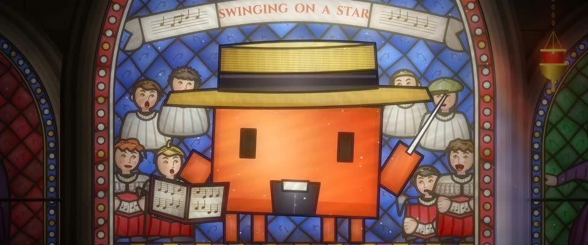
No.17 · 1944 《与我同行》 Going My Way — 2D 逆光哥特彩色玻璃窗
铅条拼色玻璃 + 灰调描绘 · 沙特尔蓝菱形格 · Harry Clarke 宝石色
逆光的哥特彩色玻璃：铅条拼起的色玻璃、灰调描出的人脸、沙特尔蓝和宝石红边框，彩光洒在教堂地上。奥马利神父和唱诗班嵌在窗里，头顶是金色星章。
风格提示词（中文）
逆光的哥特彩窗，占画面高度八到九成、宽度约六成，两边露出相邻发光的窗。每个形状是一块切好的玻璃：每块明度浮动约 8%，有流纹气泡和褐色内描边，外压黑铅条（宽约画幅宽 1/250）。天空和空地切成菱形格（每格约画幅宽 1/30）；边框是带圆珠的宝石红。主要人物至少占窗高一半，用尖细的深褐线描脸和衣褶。配色按用途：背景钴蓝 #1B3F9E，边框宝石红 #B3121F，高光金 #E3A526，铅条 #16161A；皮肤淡琥珀；景物用深绿、青绿。只有故事围绕的那个主角是橙色玻璃（如 #D97757）。亮玻璃光晕吃进铅条；彩光落在地面和窗台上。镜头：下摇、横摇，落到光斑上。对标沙特尔大教堂、Harry Clarke。避免：平涂、随意切割、窗四周大片暗墙。
Style prompt (EN)
A backlit Gothic stained-glass window filling 80-90% of frame height and ~60% of width, neighbours glowing at edges. Every shape is cut glass: lightness varied ±8% per piece, streaks, seed bubbles, a brown edge mat, black lead (about 1/250 of frame width). Sky and empty ground: diamond quarries (about 1/30 of frame width); the border is ruby with beads. The main figure is at least half the window's height, in dark-brown grisaille line. Palette by role: background cobalt #1B3F9E, border ruby #B3121F, highlights gold #E3A526, lead #16161A; skin pale amber; scenery deep greens. Only the hero the story centres on is orange glass (e.g. #D97757). Bright glass blooms into the leads; coloured light spills onto floor and sill. Camera: tilt down, pan, settle on the pooled light. References: Chartres Cathedral; Harry Clarke. Avoid: flat fills, random cuts, dark empty wall.
镜头与导演（3 镜）
star1.3s：从金色八角星章和「SWINGING ON A STAR」飘带开始，沿尖拱窗往下摇，落到扮奥马利神父的 Clawd，它在玻璃里指挥男孩唱诗班。choir0.6s：玻璃唱诗班的中景：穿红袍白衣的男孩们在唱，镜头向右横摇，扫过 Clawd 举指挥棒的手。nave0.6s：切到教堂中殿：彩窗的颜色洒在长椅之间的大理石过道上，祭坛蜡烛亮着；镜头往地面下摇。
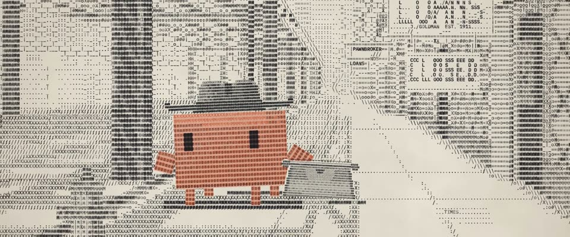
No.18 · 1945 《失去的周末》 The Lost Weekend — 2D 打字机字符画
叠打的打字机字符画 · Paul Smith、Flora Stacey · John F. Seitz 硬光黑白
画面是打出来的：等宽字符落在 pica 网格上，灰阶靠字符疏密和叠打，色带墨色不匀。唐抱着打字机去当铺，于是整条街由打字机打出；Clawd 用橙色色带打。
风格提示词（中文）
所有画面都用打字机字符打出来：等宽粗体字逐个敲，落在固定网格上，格宽约画幅宽 1/150、格高是格宽两倍。85%–95% 的格子都要打字，只有最亮的光留纸白。灰阶靠字键分级（浅 . : -，中 = + o，深 X # M），暗部约占三成，用 M# 这样的叠打。形体靠边界清楚的字块和剪影读出。每种材质重复自己的字键（如竖向结构 I H，砖缝 _|，水 ~）。招牌或说明要打得能读。色带墨色不匀：半边缺墨，几个键总是偏高或偏低。纸 #EBE6DA，墨 #1D1C21；只有故事围绕的那个主角用红橙色带 #D4704F 打，至少占画面高度三分之一，影子仍是黑的。硬侧光投出边缘清楚的密集长影。画面在第一秒内打完，然后停住。对标 Paul Smith 的打字机画。避免：稀疏空白、看不出形的横向字条。
Style prompt (EN)
Type every image: one bold monospaced glyph per keystroke, fixed grid, cells 1/150 of frame width wide, twice as tall. Strike 85-95% of cells; bare paper only for highlights. Grey from a key ladder (light . : -, mid = + o, dark X # M); darks (about 30%) are overstrikes like M#. Shapes read as crisp-edged fields, clear silhouettes. Each material repeats its own keys (e.g. I H verticals, _| courses, ~ water). Signs stay legible. Uneven ribbon: half-inked strikes, a few keys always high or low. Paper #EBE6DA, ink #1D1C21; only the hero the story centres on, at least 1/3 of frame height, is struck in red-orange #D4704F, its shadow black. Hard sidelight casts long, crisp, dense shadows. The picture types itself within the first second, then holds. Reference: Paul Smith's typewriter art. Avoid: sparse frames, shapeless streaks.
镜头与导演（3 镜）
still1.3s：第三大道高架铁下的一点透视全景：街景一行行打到纸上，戴软呢帽的 Clawd 提着打字机往前走；镜头微微后拉。close0.6s：Clawd 近景：字符打出的帽子、眼睛和身边灰色的打字机，背后是钢梁；镜头慢推。pawn0.6s：J. GOLDMAN 的 LOANS 当铺招牌特写，字母由字符拼成，下面挂着 CLOSED 牌；镜头慢推。
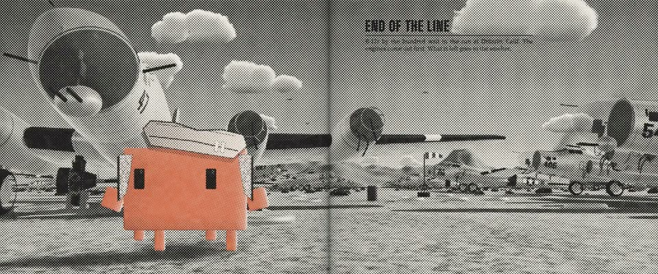
No.19 · 1946 《黄金时代》 The Best Years of Our Lives — 2.5D 画报新闻摄影半调跨页
45° 粗网点半调 · Gregg Toland 深焦 · 1946 年画报跨页版式 · 专色橙版
1946 年画报的新闻摄影跨页：铜版纸上的粗黑网点、中缝折痕、叠印的图片说明。深焦里拆光的 B-17 排到地平线；Clawd 单独印在专色橙版上，是唯一的颜色。
风格提示词（中文）
每一帧当成 1946 年画报的新闻摄影跨页。先把场景按照片渲染成灰调（3D 或手绘都行）：低角度太阳、长影子、深焦，近处和地平线一样清楚。照片满版跨过两页，竖向中缝折痕从中间穿过，带一点阴影。再印成 45° 黑色网点，间距约画幅宽 1/250，米白铜版纸 #ECE6D8，墨 #1A1A1A，略有扩墨。从第一镜起，在安静的区域叠印一小块黑色标题和图说。只有故事围绕的那个主角走专色橙版（如 #D97757），换一个网角，错版 2–3 像素，黑版只留在它最深的暗部；主角至少占画面高度四分之一。镜头：走进全景，推进一个细节，再拉远，照片缩成一本摊开的杂志。对标摄影师 Gregg Toland、《生活》杂志战后摄影专题。避免：中缝切过主角，网点粗到照片碎掉。
Style prompt (EN)
Each frame is a 1946 picture-magazine photo spread. Render the scene as a grey photo (3D or painted): low sun, long shadows, deep focus (near and far both sharp). The photo bleeds across both pages, crossed by a soft vertical gutter crease. Print as a 45° black halftone, dot pitch about 1/250 of frame width, ink #1A1A1A on off-white coated stock #ECE6D8. A short black headline and caption sit in a quiet area. Only the hero the story centres on, at least 1/4 of frame height, prints on its own spot-orange plate (e.g. #D97757) at another angle, 2-3 px off, black only in its deepest shadows. Camera: walk in, push to a detail, pull back to reveal an open magazine. References: cinematographer Gregg Toland; *Life* post-war photo essays. Avoid: the gutter cutting the hero, coarse dots that break the photo.
镜头与导演（3 镜）
still0.9s：低机位深焦全景，飞机坟场：戴船形帽、竖着羊毛领的 Clawd 走到一架拆光的 B-17 机翼下，停步，抬头看玻璃机头；镜头右移并推近。nose0.8s：轰炸员的玻璃机头舱里往外看，一排排轰炸机伸向远山，Clawd 在画面左边缘；镜头慢推。spread0.8s：拉远：照片缩进一本摊开的杂志，标题 GRAVEYARD OF THE FORTRESSES，放在深色桌面上。
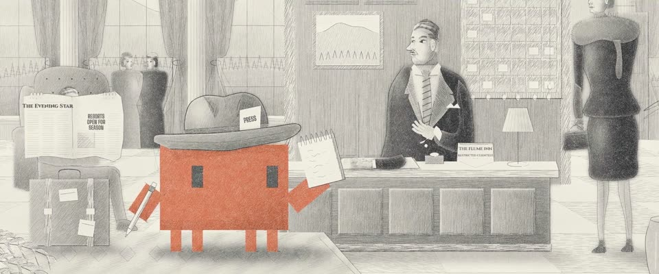
No.20 · 1947 《君子协定》 Gentleman's Agreement — 2D 40 年代杂志铅笔插画
石墨排线与擦抹 · Al Parker、Robert Fawcett · 彩色铅笔主体
40 年代杂志插画式的石墨铅笔：先打构图线，再一遍遍平行排线，擦抹暗部、橡皮提亮。画面围绕酒店前台一次客气的拒绝逐步画出，只有 Clawd 是彩色铅笔。
风格提示词（中文）
用石墨铅笔画成 40 年代杂志插画，画得完整、有控制。画面在前 1–1.5 秒内画成，然后停住：先淡淡的透视线和头部椭圆，再画两头轻中间重、转角出头的轮廓（宽约画幅宽 1/600），然后一到四遍近乎平行的排线（遍数越多越暗），间距约画幅宽 1/300，顺着形体走，再擦抹出平滑的过渡，用橡皮提亮。完成的画面几乎铺满：环境和背景都画充分，以中灰为主，深色约占一成半，只有最外一圈约十分之一淡成没画完的边角。纸 #F2EEE5 带轻齿纹，铅色 #2C2B2E。只有故事围绕的那个主角的衣服用彩铅（如 #D97757），皮肤仍是铅笔灰。戏在脸上。镜头：缓缓拉远，再切特写。对标插画家 Al Parker、Robert Fawcett。避免：交叉网格、潦草速写感、大片空白纸面。
Style prompt (EN)
Graphite pencil like a 1940s magazine illustration, finished and controlled. The drawing builds in the first 1-1.5 s, then holds: faint perspective rays and head ovals, pressure-tapered contours (about 1/600 of frame width) overshooting at corners, then 1-4 near-parallel hatching passes (more for darker), about 1/300 of frame width apart, following the form, then rubbed tone and eraser lifts. The finished frame is toned nearly edge to edge: setting fully drawn in mid-greys, about 15% dark accents, only the outer tenth fading to loose margins. Paper #F2EEE5 with a light tooth; lead #2C2B2E. Only the hero the story centres on wears coloured pencil (e.g. #D97757) on its clothing; skin stays graphite. Faces carry the drama. Camera: a slow ease out, then cuts to close-ups. References: illustrators Al Parker and Robert Fawcett. Avoid: cross-hatch grids, scribbly sketching, a near-empty page.
镜头与导演（3 镜）
still1.1s：酒店大堂全景，画面当场被画出来，从构图线到排线：戴着插 PRESS 卡软呢帽的 Clawd 把采访本举到前台；镜头微微后拉。clerk0.8s：从前台经理推到他的特写：微微欠身、微笑，眼睛却不笑，身后钥匙架上每把钥匙都还挂着。lady0.7s：固定机位中景：电梯旁披狐皮围脖的女士，眼睛回头瞟向 Clawd。
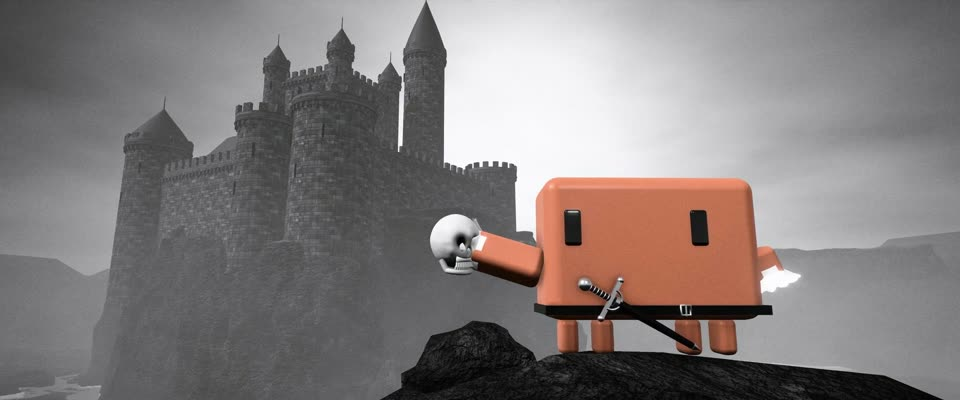
No.21 · 1948 《王子复仇记》 Hamlet — 3D 黑白 3D 雾中城堡
three.js 3D + 体积雾 · Desmond Dickinson 深焦黑白 · Roger Furse 光秃的罗马式布景
实时 3D 的艾尔西诺，高反差深焦黑白：体积雾、湿石头、碎成蕾丝白沫的海浪、银盐颗粒。照奥利维耶片中的城堡、雾中城垛和礁石来拍；Clawd 是唯一的颜色。
风格提示词（中文）
真 3D 场景，40 年代末的深焦黑白。建筑是裸露的砌体，逐块砌出，带倒角和错缝（场景本有这类建筑时才用罗马式半圆拱）；湿的表面发黑发亮。阴天柔光，没有硬投影：深色实体衬着银灰天空。高度雾贴着画面下三分之一，成片里远景是 60%–70% 灰，中景清晰；云后亮天透出淡淡光柱。有水时：多层涌浪、蕾丝般的白沫、礁石上的水雾。后期：环境光遮蔽、轻辉光、高反差银色调色（有真黑，白不过曝），颗粒 ±3%，轻微闪烁。只有故事围绕的那个主角保留颜色（如 #D97757），所有光源都是灰的。镜头：慢慢漂近，沿高处横移，低机位仰拍主角。对标 Laurence Olivier《哈姆雷特》（1948）。避免：晴天硬影子、雾糊成一片白、贴图平铺。
Style prompt (EN)
A real 3D scene in late-1940s deep-focus black-and-white. Built forms: bare masonry, block by block, bevelled, staggered (Romanesque arches only where the setting has them); wet surfaces dark and glossy. Soft overcast light, no hard shadows: dark masses against a silver sky. Low fog fills the lower third; the far background ends at 60-70% grey, the midground sharp; a bright patch behind cloud throws faint shafts. Water, if any: layered swells, lace foam, misty spray. Post: ambient occlusion, gentle bloom, high-contrast silver grade (true blacks, unclipped whites), grain (±3%), faint flicker. Only the hero the story centres on keeps its colour (e.g. #D97757); every light source stays grey. Camera: slow drift in, a track along a high edge, a low angle on the hero. Reference: Laurence Olivier, *Hamlet* (1948). Avoid: hard sunlit shadows, white-out fog, tiled textures.
镜头与导演（3 镜）
wide0.7s：从海上看的全景：海岬上的艾尔西诺，脚下浪花拍岸，Clawd 是右边礁石顶上的一个小身影；镜头缓缓漂近。battlements0.8s：浓雾里的城墙步道：披甲的鬼魂从雾中显形、招手，Clawd 在近处看着它；镜头轻推。still1.1s：低机位仰拍海边礁石：戴蕾丝袖口、挂短剑的 Clawd 在雾中城堡前举起约里克的骷髅；镜头慢推。
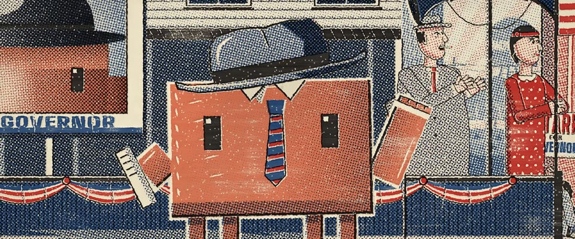
No.22 · 1949 《国王班底》 All the King's Men — 2D 南方竞选木活字海报
木活字凸版印刷 · Hatch Show Print · 麻胶版画人物 · 半调网点肖像
南方竞选海报的木活字凸版：红、蓝、黑三色油墨印在米黄纸上，实地有木纹，供墨不匀，版间错位，肖像走半调网点。这是斯塔克的竞选集会，Clawd 用第四版橙墨印。
风格提示词（中文）
每帧都是木活字和刻版印的凸版海报。米黄纸 #EEE3C7 上印三色：蓝 #20488C 管天空、水和大块暗部，红 #C82C28 管暖色面和条纹，黑 #1E1B1E 管轮廓和字；只有故事围绕的那个主角多加一块专色（如 #D97757）。每色一版，错位 2–4 像素；实地挖空下层，只有网点处叠印。实地有木纹、缺墨针孔，边缘挤墨。中间调走粗网点（约画幅宽 1/200），各版网角不同，不超过画面三分之一。人物像麻胶版画：粗黑轮廓、刻刀白线、月牙阴影。画面约七成是图；一两行粗木活字短句写在图里的横幅和招牌上，带错位投影，字高约画面十分之一，用用户语言。镜头：小推，横移，重拍上特写一震（无音乐每 2 秒）。对标 Hatch Show Print。避免：碎灰调代替大块实地、套色精准得像电脑。
Style prompt (EN)
A letterpress poster from wood type and cuts. Three inks on cream stock #EEE3C7: blue #20488C (sky, water, shadow masses), red #C82C28 (warm surfaces, stripes), black #1E1B1E (outlines, type); only the hero the story centres on gets a spot ink (e.g. #D97757). Each ink 2-4 px off register; solids knock out the inks beneath, halftones overprint. Wood grain, pinholed starved patches, squeezed edges. Mid tones: coarse dots (about 1/200 of frame width), varied angles, on at most a third of the frame. Figures as linocuts: heavy outlines, gouged white lines, crescent shadows. Picture fills about 70%; short wood-type lines (about 1/10 of frame height, user's language) with offset shadows sit on banners and signs. Camera: small pushes, a lateral track, a bump on each strong beat (or every 2 s). Reference: Hatch Show Print. Avoid: busy grey mid-tones, perfect registration.
镜头与导演（3 镜）
rally0.9s：小镇广场挂满彩旗的讲台全景：扮斯塔克的 Clawd 站在自己的巨幅半调肖像前，拳头举到一半，台下人群举着 STARK FOR GOVERNOR 牌子欢呼；镜头小幅推进。crowd0.7s：切进人群：牌子上下挥动，拳头和喊叫的嘴，EVERY MAN A KING；镜头向右横移。close0.9s：Clawd 近景，软呢帽往后推、领带拉松：拳头一下举到顶，再挥一次；镜头在出拳那一下跟着一震。
宽银幕（1950–1959）· Widescreen
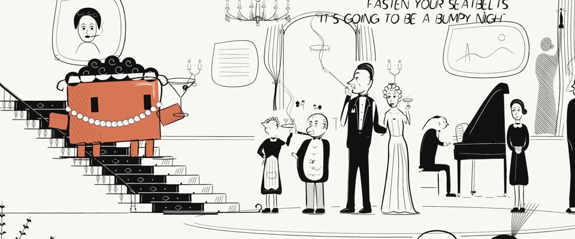
No.23 · 1950 《彗星美人》 All About Eve — 2D 赫希菲尔德一笔画漫画
一笔墨线漫画 · Al Hirschfeld 剧场漫画 · 手写台词
艾尔·赫希菲尔德的百老汇漫画：粗细变化的流畅墨线、黑块对白、大量留白，每人只抓一个夸张特征。这部片讲剧场，派对就画成报纸剧场版漫画；Clawd 是唯一的颜色。
风格提示词（中文）
画成 Al Hirschfeld 式的漫画，白纸黑墨。线条有弹性、长而连贯，能一笔画完的轮廓就一笔：两端约画幅宽 1/800，转弯处加粗到 1/250。深色衣服、头发和大件物体用实心黑块；灰调只用稀疏的平行排线。环境用细线画完整：建筑、家具、道具连同细节都画，物与物之间留白；约六成纸面留白，但绝不是空纸。每个人物靠姿态和比例夸张一个特征（长脖子、大头），五官具体。纸 #FBFAF6，墨 #131012；只有故事围绕的那个主角的身体或主要衣服用一种颜色平涂（如 #D97757），代替黑块。线条在第一秒内一笔笔写完，然后停住；留白处可有一句手写短句。镜头：拉远，横摇扫过场景，小推。避免：四肢僵直、火柴人、空荡荡的环境。
Style prompt (EN)
An Al Hirschfeld-style caricature. Lines are elastic, long and continuous, one stroke per contour: about 1/800 of frame width at the ends, swelling to 1/250 on curves. Dark clothing, hair and big objects go solid black; grey only as sparse parallel hatching. The setting is fully drawn in thin line, architecture, furniture and props in detail, white kept between objects: about 60% paper white, never an empty page. Push one trait per figure (a long neck, a big head). Paper #FBFAF6, ink #131012; only the hero the story centres on has its body or main garment filled flat with one colour (e.g. #D97757) instead of black. Lines write on within the first second, then hold; a short hand-lettered line may sit in the white. Camera: ease back, pan across, push in. Avoid: stiff limbs, stick figures, a bare setting.
镜头与导演（3 镜）
wide1.1s：玛戈家派对的全景一笔笔画出来：先是楼梯，再是宾客和钢琴；留白处手写出 "FASTEN YOUR SEATBELTS, IT'S GOING TO BE A BUMPY NIGHT"，扮玛戈的 Clawd 站在楼梯上；镜头微微拉远。party0.8s：向右横摇扫过宾客：伯蒂、马克斯、艾迪森、卡斯韦尔小姐、钢琴师，停在角落里的伊芙。close0.7s：楼梯上 Clawd 的近景：黑色卷发、珍珠项链，举起马提尼；镜头轻推。
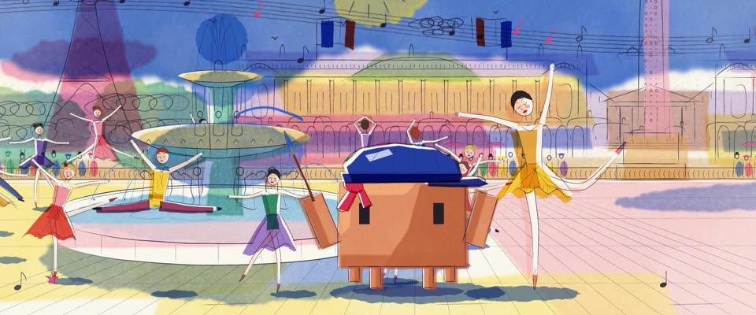
No.24 · 1951 《一个美国人在巴黎》 An American in Paris — 2D 杜飞水彩芭蕾
松动墨线 + 错开的色块 · 拉乌尔·杜飞 · 明奈利的芭蕾布景 · 冷压水彩纸
拉乌尔·杜飞的水彩：快速的蓝黑墨线，底下是钴蓝、柠檬黄、玫瑰红的透明色块，线和色永远对不齐。影片结尾的芭蕾布景就是照杜飞画的，协和广场和舞者都用他的画法。
风格提示词（中文）
用拉乌尔·杜飞的水彩画法：先上色、后画线，两者永远对不齐。透明色块铺满大部分画面，带湿边、积色边和颗粒，比物体大一到四成，朝同一方向滑开约画幅宽 1/30：钴蓝 #2258CE 管天空和水，柠檬黄 #FCE02E 管光和地面，玫瑰红 #EC3A7C 管暖色面。重叠可混出紫或绿，绝不脏成棕，主角的色块别压在蓝上。再用蓝黑墨 #1E1E3A 快速细线把整个场景画满（线宽约画幅宽 1/700），有提按和甩尾：建筑、窗、人物、小配景；直边单独一笔、角上出头；树冠和云画成一串小圈。留白两到三成，皮肤是纸白。故事围绕的那个主角有自己的一块色（如 #D97757）。人物轻快有弹性。镜头：小推，踩拍子切（没有音乐约每 2 秒）。避免：颜色叠脏、线描死色块、线条稀疏。
Style prompt (EN)
Paint in Raoul Dufy's watercolour manner: colour first, line second, never aligned. Transparent washes (wet edges, pooled rims, granulation) cover most of the frame, 10-40% oversized, slid one way by about 1/30 of frame width: cobalt #2258CE for sky and water, lemon #FCE02E for light and ground, rose #EC3A7C for warm planes. Overlaps mix violet or green, never brown; keep the hero's wash off blue. Then draw the whole scene densely in quick, thin blue-black ink (about 1/700 of frame width) with flicked ends: buildings, windows, figures, extras; straight edges overshoot corners; trees and clouds as looped strings. Ink #1E1E3A; bare paper 20-30%, skin included. The hero the story centres on gets its own wash (e.g. #D97757). Figures bounce. Camera: small pushes, cuts on the beat (or every 2 s). Avoid: muddy colour, lines tracing the colour, sparse line.
镜头与导演（3 镜）
still1.0s：协和广场全景：舞者绕着喷泉旋转，后面是方尖碑和埃菲尔铁塔；扮杰瑞的 Clawd 戴钴蓝帽、拿画笔，在黄裙丽丝身边跳；镜头小幅推进。close0.8s：Clawd 跳在半空的近景，画笔甩出一条颜料带，丽丝的手臂伸进画面；镜头慢推。street0.8s：切到插满三色旗的巴黎街道，楼面是粉、黄、蓝，Clawd 在街心行人之间蹦跳；镜头慢推。
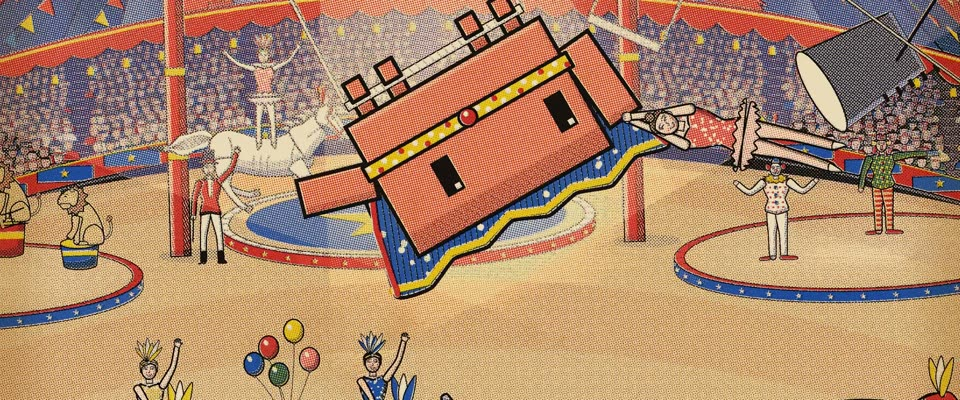
No.25 · 1952 《戏王之王》 The Greatest Show on Earth — 2D Strobridge 马戏团彩色石印
四色彩色石印 · Strobridge 马戏团海报 · 平涂油墨 + 粗黑轮廓
Strobridge 马戏团彩色石印：铬黄、朱红、钴蓝平涂，粗黑轮廓，带网点、错版和石版颗粒。德米尔的大帐篷画成三圈海报，Clawd 扮塞巴斯蒂安做空中接人。
风格提示词（中文）
19 世纪末马戏团彩色石印，仿 Strobridge 石印公司。平涂油墨加粗黑轮廓（约画幅宽 1/300）；阴影是月牙形加深，加排线；光从左上来。四块石版：铬黄 #F4C416、朱红 #D62C24、钴蓝 #1E4EA0、黑 #181210，印在暖奶油纸 #EBD9B4 上；叠印和浅网只能得到橙、绿、棕、土黄、浅蓝、灰。实地平印，只有天空、皮肤、地面这类渐变处挂网（网点约画幅宽 1/250），各版网角不同，错位 1–3 像素，带石版颗粒。故事围绕的那个主角用黄实地叠朱红实地，得到平的橙（如 #D97757）。构图用夸张透视：放射线汇向主要动作，几件事同时发生；有人群时画成许多可辨的小人，只有一个人物也成立。镜头：上摇，横移，在动作中切到高潮。避免：四色以外的颜色、只有圆点的人群、挂网挂成粉色的主角。
Style prompt (EN)
A circus chromolithograph after the Strobridge Lithographing Co. (c. 1890). Flat ink, heavy black outlines (about 1/300 of frame width), crescent shadows, light from upper left. Four stones: chrome yellow #F4C416, vermilion #D62C24, cobalt #1E4EA0, key black #181210 on warm cream paper #EBD9B4; overprints and tints give only orange, green, brown, tan, pale blue, grey. Solids print flat; screens (dots about 1/250 of frame width) only on gradients (sky, skin, ground), each stone at its own angle, 1-3 px off register, stone grain. The hero the story centres on is solid yellow under solid vermilion, a flat orange (e.g. #D97757). Exaggerated perspective, radial lines converging on the action, several actions at once; any crowd is tiny individual figures, though a lone figure works. Camera: tilt up, lateral dolly, cut on action. Avoid: off-palette colours, dot-only crowds, a screened, pinkish hero.
镜头与导演（3 镜）
tent0.8s：大帐篷全景：三个表演圈、碗形看台、跑马道上的大象；沿帐篷往上摇，落到倒挂在最高秋千上的 Clawd。elephants0.6s：横移跟拍大象游行：一头卷着一头的尾巴，背上坐着亮片舞女，前景是围栏和前排观众的后脑勺。trapeze1.0s：动作中切到接人：Clawd 披亮片斗篷、膝弯倒挂，一只手抓住粉衣女飞人，另一只手向观众甩开，秋千把它们荡向右边；镜头跟着微推并略微倾斜。
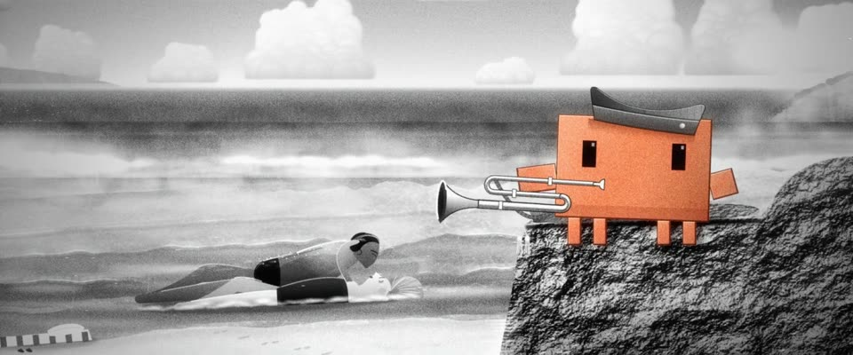
No.26 · 1953 《乱世忠魂》 From Here to Eternity — 2D 高调海滩黑白银幕
1953 年高调黑白摄影 · Burnett Guffey · 银盐颗粒与光晕
1953 年的高调黑白：硬朗阳光、压暗的天空、泛白的浪沫、映着天的湿沙，银盐颗粒和光晕。拍哈洛纳海湾浪里那一吻；坐在熔岩上吹军号的 Clawd 是唯一的颜色。
风格提示词（中文）
50 年代初高调的黑白外景摄影，用 2D 画出照片感：不描线、不平涂，只用柔和渐变加细腻纹理（沙粒、岩石麻点、布纹）。明暗：约七成画面亮于中灰；天空浅中灰，只比亮云暗一档；深黑很少。默认正午硬朗的太阳，影子短而清楚；其他光线下仍保持浅天空和明亮结构。水、浪沫或雾在最亮处冲白，留住蕾丝细节；湿的表面映着天空。按印片收尾：柔和 S 曲线、略软的镜头、高光晕、每帧刷新的细颗粒（±4%）、轻暗角、轻微闪烁。只有故事围绕的那个主角整个人保留颜色（如 #D97757），明暗也有照片感。镜头：从天空下摇，平视紧框，再慢慢拉远。对标摄影师 Burnett Guffey（《乱世忠魂》）。避免：低调暗沉、死白一片、卡通平涂。
Style prompt (EN)
Early-1950s high-key black-and-white photography, painted in 2D to read as a photo: no outlines or flat fills, only soft gradients plus fine texture (sand, rock pitting, cloth). Values: about 70% of the frame above mid-grey; sky light-mid grey, one step below the bright clouds; deep blacks small. Default: hard midday sun, short crisp shadows; under other light keep the pale sky and bright values. Water, foam and mist blow out at the peaks, keeping lace detail; wet surfaces mirror the sky. Print finish: gentle S-curve, slightly soft lens, halation, fresh fine grain (±4%), light vignette, flicker. Only the hero the story centres on keeps colour, whole figure (e.g. #D97757), shaded photographically. Camera: tilt down from the sky, tight level frame, slow pull-back. Reference: cinematographer Burnett Guffey (*From Here to Eternity*). Avoid: low-key frames, white blanks, cartoon fills.
镜头与导演（3 镜）
sky0.5s：开在哈洛纳海湾上空，积云间飞过一队飞机；镜头往下摇到海面。wave1.1s：平视紧框浪里的恋人：浪头冲上来盖过他们，又退成蕾丝般的白沫，两人一直在吻；镜头慢推并向右漂移。still0.9s：海湾全景：戴船形帽的 Clawd 坐在熔岩石台上，举起军号朝恋人吹响；镜头微微拉远。
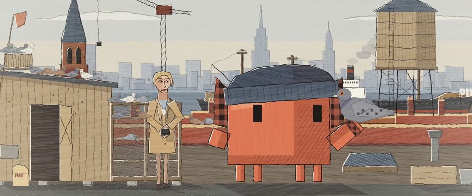
No.27 · 1954 《码头风云》 On the Waterfront — 2D 本·沙恩社会现实主义
颤抖的转印墨线 · 平涂蛋彩色块 · 本·沙恩 · 50 年代美国社会现实主义
本·沙恩的社会现实主义：颤抖的转印墨线，下面是错开的平涂蛋彩色块，大手长脸的工人，颜色克制在灰蓝、砖红、赭黄。沙恩画的就是码头工人和工会，正是这部片的世界。
风格提示词（中文）
仿本·沙恩的社会写实蛋彩画。墨线（宽约画幅宽 1/500）会颤：细抖叠着慢摆，一个轮廓分两三笔、不闭合，偶有转印鬼线（旁边多一道偏移的淡线）。颜色是平涂蛋彩块，比墨线偏 2–4 像素，边缘毛糙，每块约三分之一面积带干笔拖痕，拖痕一笔宽（约画幅宽 1/100），不随色块放大；明暗只用同色深一档的硬边平色。配色按用途：灰蓝 #768492 管天空和冷色区，砖红 #9E4834、赭黄 #C89852 管房屋、土地和衣服，墨 #1F1A1A，底板暖白 #F0E9DA；皮肤浅赭；其他颜色由这几色加深或加灰。故事围绕的那个主角的主要衣服用唯一的暖色（如 #D97757）。人物头大手大、长脸重下巴，衣服下垂。镜头：短推，上摇，收在近景。避免：平滑渐变、干净闭合的轮廓、鲜亮讨喜的颜色。
Style prompt (EN)
Ben Shahn's social-realist tempera. Ink lines (about 1/500 of frame width) jitter and wander, break each outline into two or three strokes, sometimes doubled by a fainter offset ghost (a blotted line). Flat tempera blocks sit 2-4 px off the line, rough-edged, dry-brush streaks (one brush wide, about 1/100 of frame width) over a third of each block; model form with a darker flat of the same hue. Palette by role: slate #768492 sky and cool areas, brick #9E4834 and ochre #C89852 ground, buildings, clothes, ink #1F1A1A, warm board #F0E9DA; skin pale ochre; other colours: these darkened or greyed. The hero the story centres on wears the one warm accent on its main garment (e.g. #D97757). Big heads and hands, long faces, heavy jaws, heavy clothes. Camera: short pushes, tilt up, close-up. Avoid: smooth gradients, clean closed outlines, cheerful colour.
镜头与导演（3 镜）
hands0.8s：PIER B 门口清晨派工的中景：码头工人挤在门前，一双双手举起来抢铜工牌，Clawd 不在画面里；镜头轻推。still1.0s：屋顶鸽舍全景：戴针织帽、立着格子领的 Clawd 举手托着一只鸽子，旁边是伊迪，身后是水塔和曼哈顿天际线，鸽群飞起；镜头慢推并略微上摇。close0.8s：Clawd 和手上灰鸽的近景，肩后是货轮、屋顶和天际线；镜头轻推。
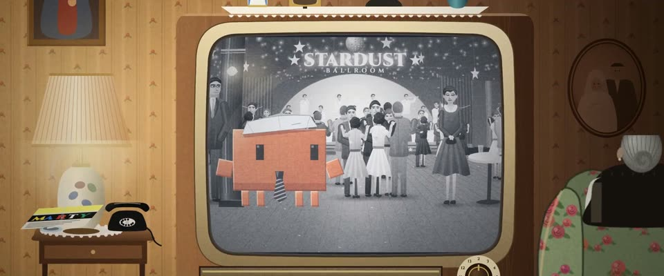
No.28 · 1955 《君子好逑》 Marty — 2D 50 年代电视显像管录像
kinescope 黑白录像 · 圆角显像管与扫描线 · 暖色 50 年代客厅插画
1955 年的电视录像，在布朗克斯暖色客厅的电视里播：扫描线、荧光晕、圆角凸屏、雪花，只有 Clawd 有颜色。原作是直播电视剧，所以当电视拍。
风格提示词（中文）
把场景做成 50 年代木壳电视里播放的 kinescope 录像。屏幕里：黑白，冷色荧光调（白位约 #DCE6EA），画面发软（半分辨率再放大），有光晕、重影、撕裂带、缓慢滚动的暗带、少量雪花、抬起的黑位、闪烁和颗粒；只有故事围绕的那个主角保留颜色（如 #D97757），同样带这些瑕疵。显像管：圆角、四边外鼓，约 330 条扫描线，玻璃反光。屏幕外是暖色扁平插画风的客厅（赭黄墙纸、木家具、台灯），台灯打暖光，屏幕在附近墙面投出明显的冷蓝光。招牌镜头：电视占画面约六成，先停约 2 秒，再用 4–5 秒推进玻璃，直到节目铺满画面、扫描线还在，然后用演播室式稳定中景拍戏。对标导演 Delbert Mann 的 Philco 电视剧场直播剧。避免：雪花盖住画面、客厅沉闷平光。
Style prompt (EN)
A 1950s kinescope playing on a wood-cabinet television. Inside the screen: black-and-white with a cool phosphor tint (#DCE6EA whites), soft (half resolution, scaled up), halation, ghosting, tearing bands, a rolling hum bar, light snow, lifted blacks, flicker, grain; only the story's hero keeps its colour (e.g. #D97757), under the same artefacts. Tube: rounded corners, sides bowing outward, about 330 scanlines, glass reflections. Outside, a warm flat-illustrated living room (ochre wallpaper, wood, a table lamp), lit warm by the lamp; the screen casts a clear cold-blue glow on nearby walls. Signature shot: hold about 2 s with the TV filling 60% of the frame, then push through the glass (4-5 s) until the broadcast fills the frame, scanlines visible, then steady TV-studio mid shots. Reference: director Delbert Mann's live Philco Television Playhouse dramas. Avoid: heavy snow, a dull, evenly lit room.
镜头与导演（3 镜）
tv0.8s：妈妈的客厅：左边是台灯和转盘电话，右边是她的翼背椅，电视里在播星尘舞厅；镜头推进屏幕玻璃。two0.9s：跨过舞池的双人镜头，扫描线仍在：戴屠夫纸帽、系条纹领带的 Clawd 从柱子边走向克拉拉；镜头向右跟移。ask0.8s：邀舞的中景：Clawd 伸出手，克拉拉抬眼看它，笑了；镜头轻推并向右漂移。
No.29 · 1956 《环游地球八十天》 Around the World in 80 Days — 2D 50 年代 UPA 现代主义卡通
UPA 有限动画 · Saul Bass 片尾动画 · 1956 原海报配色 · 蜡笔颗粒印刷
50 年代平面几何卡通：色块和墨线错位套印、墨线断续、奶油纸上的蜡笔颗粒。本片 6 分钟的片尾动画就出自 Saul Bass，正是这种现代主义画法。
风格提示词（中文）
50 年代 UPA 现代主义卡通。墨线 #221C19 约画面宽的 1/400，有粗细、偶尔断开；色块相对墨线统一朝一个方向错开约 1/300。物体由重叠的平面剪片拼成：一块受光面，加一块同色深约一成半的平色暗面。明亮通透：浅水绿天空和奶油纸 #F2E9D3 占大半画面，芥末黄 #E3A92B、青绿 #2B8C86、橙红 #D4452B 只作点缀；天空、草绿、灰蓝由这些色兑纸色得到。其他时段只改天空颜色。全画面轻蜡笔颗粒（亮度 ±5%），少量纸白斑点。海报构图：一个大图形（建筑、日轮或山峰），旁边是带轮廓的棱角人物。光束画成浅色平涂楔形。机位之间每一两秒硬切，段内慢视差。对标 UPA《Gerald McBoing-Boing》（1950）、Saul Bass《环游地球八十天》片尾（1956）。避免：渐变、套色太准、饱和色铺满画面。
Style prompt (EN)
1950s UPA modernist cartoon. Uneven ink lines #221C19 about 1/400 of frame width, sometimes broken; colour blocks sit about 1/300 of frame width off them, all one way. Objects are overlapping flat cut-out facets: a lit face and a shadow face one flat step (about 15%) darker. Pale aqua sky and cream paper #F2E9D3 cover most of the frame; mustard #E3A92B, teal #2B8C86, orange-red #D4452B are accents; sky, greens and slate blues are these mixed toward paper. Other times of day change only the sky colour. Crayon grain ±5% brightness everywhere, few flecks. Poster layout: one big graphic shape (a building or sun disc), angular outlined figures beside it. Light beams: flat pale wedges. Hard cuts every 1–2 s; slow parallax drift. After UPA, *Gerald McBoing-Boing* (1950); Saul Bass, *Around the World in 80 Days* titles (1956). Avoid: gradients, perfect registration, saturated colour everywhere.
镜头与导演（3 镜）
globe0.9s：地图插入镜头，定机位：青绿底上的地球仪转动，红色航线依次跑过伦敦、苏伊士、孟买、横滨、旧金山；右边一只小气球里坐着 Clawd。balloon0.8s：全景：芥末黄配蓝色棋盘带的热气球飘过分面的阿尔卑斯和瑞士小镇，戴高礼帽的 Clawd 站在吊篮边；缓慢横移。close0.8s：Clawd 扮的福格近景：高礼帽、收起的雨伞、举着香槟杯，旁边路路通探身用冰桶从雪峰尖上舀雪；轻微推近。
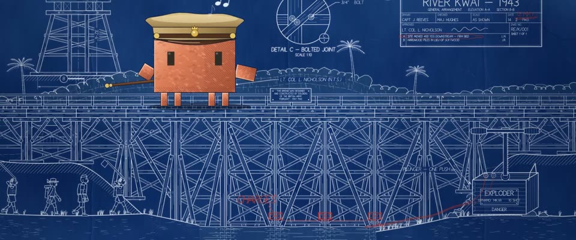
No.30 · 1957 《桂河大桥》 The Bridge on the River Kwai — 2D 氰版工程蓝图
氰版晒图 · 木栈桥总布置图 · 红铅笔修改 · 水粉上色的主角
钉在绘图桌上的总布置图：普鲁士蓝底上的白线、折痕、水渍和红铅笔修改。电影讲一个执意把桥造好的上校，所以把桥画成他的工程图。
风格提示词（中文）
青晒工程蓝图。图纸铺满画面（胡桃木绘图桌只在拉远时露出）：斑驳的普鲁士蓝纸 #143874，曝光不匀，边缘过曝发绿，有折痕和淡水渍。白线 #ECF4FF 锐利但是印出来的：轮廓约画面宽的 1/600，剖面线和尺寸线减半，曝光弱处断续，带几像素青色微晕。用制图语法把主体画得密：立面、剖面、详图圈、尺寸链、虚线、单线工程字、标题栏。批注和动作用红铅笔 #D63426，写用户的语言。唯一的主角是图上唯一手绘上色的东西，比图纸比例放大（至少占画面高五分之一），不透明水粉，一种暖色分几个深浅（比如橙 #D97757），其余没有暖色。镜头：推近时各层视差，再切详图。避免：霓虹发光、干净的数码蓝、空荡的图纸。
Style prompt (EN)
Cyanotype engineering blueprint. The sheet fills the frame (the walnut drafting table shows only on a pull-back): mottled Prussian-blue paper #143874, uneven exposure, a greenish over-exposed margin, creases, faint water stains. White lines #ECF4FF, sharp but printed: outlines about 1/600 of frame width, hatching and dimensions half that, broken where exposure was weak, a slight cyan bloom. Draw the subject densely in drafting grammar: elevations, sections, detail circles, dimension chains, hidden lines, single-stroke lettering, a title block. Notes and actions in red pencil #D63426, in the user's language. The one hero subject is the only hand-painted element, drawn above scale (at least 1/5 of frame height), opaque gouache in one warm hue (e.g. orange #D97757); nothing else is warm. Camera: layered parallax push-in; cut to detail views. Avoid: neon glow, clean digital blue, sparse sheets.
镜头与导演（3 镜）
still1.0s：桥立面的中全景：Clawd（尼科尔森上校）站在桥面上吹口哨，音符往上飘，左下战俘列队行进，右边是引爆器，火车从最右边开上来；缓慢推近。detonator0.5s：引爆器箱特写（PLUNGER – ONE PUSH）：T 形手柄按下，红铅笔引线通向炸药；轻微推近。bridge1.0s：回到桥立面：炸药炸开，红铅笔乱线画成的火球裹在排线画的烟团里，桥跨和火车车厢落进河里；缓慢拉远。
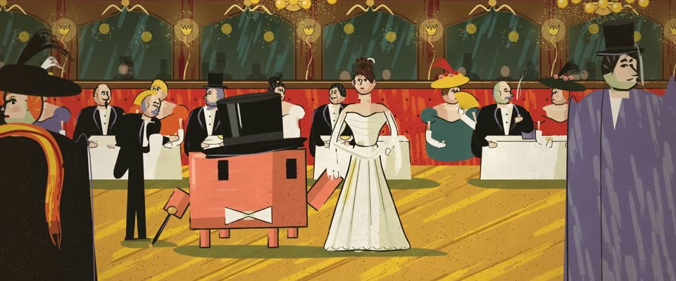
No.31 · 1958 《金粉世界》 Gigi — 2D 罗特列克美好年代石印
彩色石印海报 · 图卢兹-罗特列克 · 牙刷喷墨点（crachis） · Cecil Beaton 服装
图卢兹-罗特列克式彩色石印：大块平涂、飞白轮廓、用喷溅墨点代替网点、讽刺漫画式面孔。琪琪的高光时刻是走进马克西姆餐厅、全巴黎回头盯着她，正是罗特列克画过的巴黎。
风格提示词（中文）
罗特列克式美好年代彩色石印。大块平涂色版，边缘略手抖；人物和主要形体用饱蘸的笔刷勾轮廓，起笔钝、中段鼓、收尾分叉飞白，粗约画面宽的 1/250。牙刷弹的墨点只在背光面、投影和光晕处：1920×1080 下点径一到三像素，稀疏，合计不到画面一成半，颜色取底色深一档。大面用成组的同向干笔条纹。色板：黄 #F1C232、橙红 #E0602C、橄榄绿 #6E7036、黑 #1D1A16，底是带石版颗粒的奶油纸 #EFE3C3；另加灰暗的瓶绿和淡紫，肤色是橙红兑纸色。人物是夸张的讽刺侧脸，画出五官；前景放一个被画框裁掉的大人物。光平而匀，阴影也是平涂色版。镜头：浅视差，慢慢横摇过场景，落到中景。避免：慕夏式光环、平滑渐变、规整网点、满屏黑点。
Style prompt (EN)
Belle Époque colour lithograph after Toulouse-Lautrec. Flat colour plates with wobbly edges; figures and main shapes outlined in a loaded brush (blunt start, swelling middle, split dry tail), about 1/250 of frame width. Crachis only on shadow sides, cast shadows and glows: 1–3 px dots at 1920×1080, sparse, under 15% of the frame, a darker step of the colour beneath. Large surfaces get grouped dry-brush streaks. Palette: yellow #F1C232, orange-red #E0602C, olive #6E7036, black #1D1A16 on cream stone-grained paper #EFE3C3, plus a muted bottle teal and greyed mauve; flesh is orange-red thinned with paper. Caricatured profiles with drawn faces; one large figure cropped by the frame edge in front. Flat, even light; shadows are flat plates. Camera: shallow parallax, a slow pan settling on a medium shot. Avoid: Mucha halos, smooth gradients, regular halftone, all-over speckle.
镜头与导演（3 镜）
maxims0.8s：马克西姆餐厅全景：戴高礼帽、白领结的 Clawd（加斯东）挽着琪琪走进来，两侧是被裁掉的前景剪影；最近的几桌客人开始回头；缓慢推近并向右漂移。faces0.7s：沿红丝绒卡座横摇：一张张讽刺漫画式的面孔转过来瞪着看，长柄眼镜举起，扇子停住。gigi1.0s：两人继续往里走的中景；琪琪的目光转向镜头，眨了一下眼，和原海报一样；轻微右移。
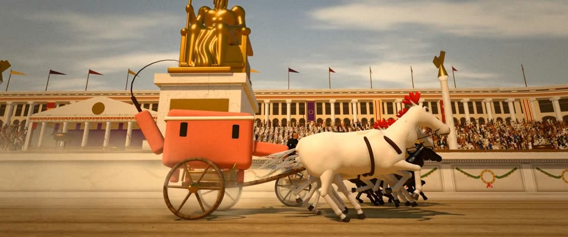
No.32 · 1959 《宾虚》 Ben-Hur — 3D 3D 大竞技场战车赛 · 65mm 史诗
程序生成 3D（three.js） · MGM Camera 65 宽银幕 · 特艺七彩印片调色 · 第二摄制组动作调度
程序生成的 3D 大竞技场，宽银幕史诗光感：沙漠烈日、沙尘、大理石和金色，特艺七彩调色加 65mm 颗粒。战车赛是全片最有名的段落，就直接拍比赛，头顶是海报上的金色巨神。
风格提示词（中文）
1959 年 65mm 宽银幕史诗，用 3D 搭。默认是硬朗的高太阳（约 50°），影子短而利，天空钴蓝、到地平线渐成沙白；太阳低时影子仍硬但拉长，天空转琥珀色。大理石、镀金、红花岗岩和沙色石头，做出线脚和槽柱，不能是光秃方盒。暖色尘雾约两成混进中景颜色。调色像 Technicolor 拷贝：暖、饱和、略高反差，不过曝不加辉光；细颗粒（±3%）、轻微片门晃动。核心是规模：背景布满宏伟建筑、雕像和重复元素，绝不空。唯一的主角（比如橙 #D97757）是画面里最饱和的东西；重复动作（步伐、轮、桨）节奏随速度。招牌镜头：全画幅等效 35 到 50mm，低机位贴着运动的主角跟拍；其次是大全景、正俯、近景、仰拍。避免：干净的 CG 光、空荡粗糙的布景、过曝。
Style prompt (EN)
1959 65mm widescreen epic built in 3D. Default: hard high sun (about 50°), short crisp shadows, cobalt sky fading to sandy white; under a low sun shadows stay hard but long, the sky turns amber. Marble, gilt, red granite and sandstone, with mouldings and fluted columns, never bare boxes. Warm sunlit haze mixes about 20% into mid-distance colours. Technicolor-print grade: warm, saturated, slightly contrasty, no clipping or bloom; fine grain (±3%), slight gate weave. Scale is the point: monumental architecture, statues and repeated elements fill the background, never empty. The one hero subject (e.g. orange #D97757) is the most saturated thing in frame; any repeated motion (stride, wheel, oar) keeps time with speed. Signature shot: low tracking beside the moving hero, 35–50 mm full-frame; then wide, top-down, close-up, low angle. Avoid: clean CG light, empty or primitive sets, overexposure.
镜头与导演（6 镜）
start0.9s：起跑白线大全景：九辆四马战车并排，Clawd 的白马队在其中，身后看台坐满；车队冲出，镜头慢慢收紧。turn0.8s：东弯高位俯拍：战车绕过镀金转弯柱甩出去，身后扬起弧形尘土。track1.1s：贴着 Clawd 的战车并行跟拍：白马全速奔跑、车辐飞转、尘土飞扬；镜头随车前移。wheel0.6s：两车之间的低机位：梅萨拉的锯齿刀毂咬住 Clawd 的车轮，火花四溅；镜头跟车一起走。close0.8s：Clawd 在战车上挥鞭的近景，旁边是梅萨拉的黑马；缓慢推近。still0.8s：海报构图：低角度侧拍，Clawd 的白马队在中央隔墙的金色坐像巨神下追平，身后是看台和总督看台；镜头慢慢放宽。
摇摆年代（1960–1969）· The Swinging Sixties
No.33 · 1960 《桃色公寓》 The Apartment — 2D Saul Bass 线条片头 · 黑白
Saul Bass 片头设计 · 一点透视办公大厅 · 黑白胶片颗粒 · 唯一的暖色
Saul Bass 式的白线在黑底上滑入，搭出电影最有名的一点透视无尽办公大厅，再填上灰调。本片片头就是 Bass 做的；全画面唯一的暖色是 Clawd 和钥匙牌。
风格提示词（中文）
把 Saul Bass 片头的线条做成布景，黑白加一个暖色。镜头从全黑开始：细白线（约画面宽的 1/800）滑入、向纵深长成网格；两三秒内灰面填满，灯一排排亮起。之后完成态停约三秒：中到浅灰，从 #140F0D 到 #F4F1E8 均匀分四五级平涂，每个形体有约画面宽 1/600 的深色轮廓。严格一点透视，灭点居中；一样的东西重复排向纵深（有人群时是桌子和人，单人时是柱子、路灯、窗格）。人物是两色平涂。唯一的暖色是橙红 #E2472A，只给唯一的主角和一件道具；所有光都是白的。轻颗粒、柔暗角。镜头：急推到主角，硬切到正上方俯视，网格变成图案。避免：草稿感的线、渐变、颜色渗入、透视歪、没填色的暗线框。
Style prompt (EN)
Saul Bass title lines turned into a set. A shot opens on black: thin white lines (about 1/800 of frame width) slide in and grow into a grid; by 2–3 s grey planes fill in and lights switch on row by row. Then hold the finished frame 3 s: mid-to-light grey, flat fills in 4–5 even steps from #140F0D to #F4F1E8, every shape outlined in dark line about 1/600 of frame width. Strict one-point perspective, centred vanishing point; identical elements repeat into depth (desks and people, or posts, lamps, windows). Figures: flat two-tone shapes. The only warm colour is orange-red #E2472A, for the one hero subject and one prop; all light stays white. Camera: a fast push to the hero, a hard cut to top-down, the grid becoming pattern. Avoid: sketchy lines, gradients, colour leaks, skewed perspective, unfilled wireframe.
镜头与导演（2 镜）
push1.9s：一镜到底：白线从全黑里搭出无尽的办公大厅，灰调和天花灯一排排亮起；坐在前排桌沿的 Clawd（巴克斯特）在第 2 拍举起公寓钥匙，镜头急推过去。high0.6s：硬切到正上方俯视：桌子排成一张网格，Clawd 仰面躺在自己桌上，手里是钥匙和牌子；缓慢推近。
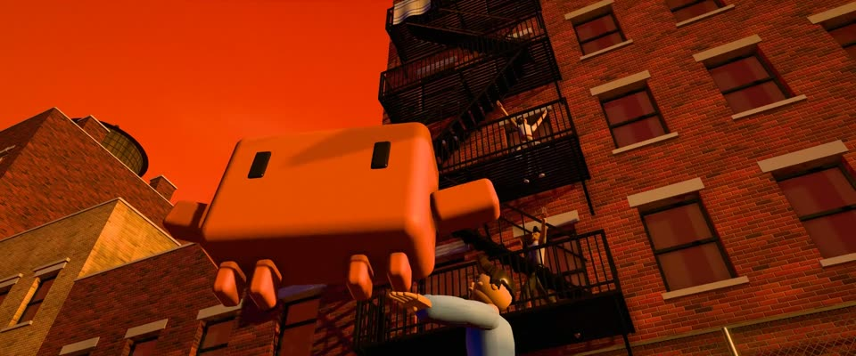
No.34 · 1961 《西区故事》 West Side Story — 3D 特艺七彩 3D 舞台
程序生成 3D（three.js） · 特艺七彩晚霞调色 · Boris Leven 布景 · 1961 海报：红天、黑消防梯
红橙特艺七彩晚霞下的上西区 3D 街区，饱和、舞台化：红砖、之字形消防梯、屋顶水塔、能摆姿势的舞者人偶。重演电影的俯拍开场、Jets 打响指和海报上那一跃。
风格提示词（中文）
Technicolor 3D 舞台布景，像 60 年代棚拍歌舞片。几何简化，每个面都细节密集（窗洞窗台、檐口、栏杆、梯子、绳线）；表面是有质感的砖、灰泥或岩石，不能素面。剧场布光：低角度暖阳斜扫表面拉出长影；冷补光约为主光四分之一。手绘天空以橙红 #E0481E 为主，云带镶金边，只在最上沿带一点紫；远处融进暖雾。唯一的主角用饱和橙 #D97757，至少占画面高六分之一，背后衬深色砖墙或加一圈黑边，不能化进天空。人物是木偶式假人。暖而饱和的调色，细颗粒（±3%）。招牌镜头：衬着橙色天空的低角度仰拍；其次一个连续镜头从高处降进布景、再贴地推进。避免：写实脏旧、紫粉天空、素面墙、动作跳变。
Style prompt (EN)
Technicolor 3D stage set, like a 1960s studio musical. Simplified geometry, dense detail on every built surface (openings with sills, ledges, railings, ladders, strung lines); textured brick, plaster or rock, never plain. Theatrical light: a low warm sun rakes surfaces with long shadows; cool fill a quarter of the key. Painted sky of red-orange #E0481E, gold-edged cloud bands, violet only at the top edge; warm haze in the distance. The one hero subject in saturated orange #D97757, at least 1/6 of frame height, set against dark brick or given a black rim so it never melts into the sky. Puppet-like mannequin figures. Warm, saturated grade, fine grain (±3%). Signature shot: a low angle against the orange sky; then one continuous descent into the set and a ground-level push. Avoid: photoreal grime, violet-pink skies, plain walls, poses that pop.
镜头与导演（4 镜）
aerial1.3s：正上方俯拍西区街区网格（屋顶、水塔、操场球场），一路下降、抬头落进街道。street1.7s：球场边低机位，Jets 帮在涂鸦墙前排成楔形打响指，Clawd 在前；一条连续的推镜绕过去推到 Clawd 近景，它的响指卡在鼓点上。leap1.2s：消防梯下仰拍：Clawd 下蹲、起跳，一条抛物线压在红天上，旁边是舞者的大跳；镜头随弧线抬起。escape0.8s：消防梯平台近景：Clawd 划亮火柴，镜头推近直到火苗停在画面正中，随后被吹灭。
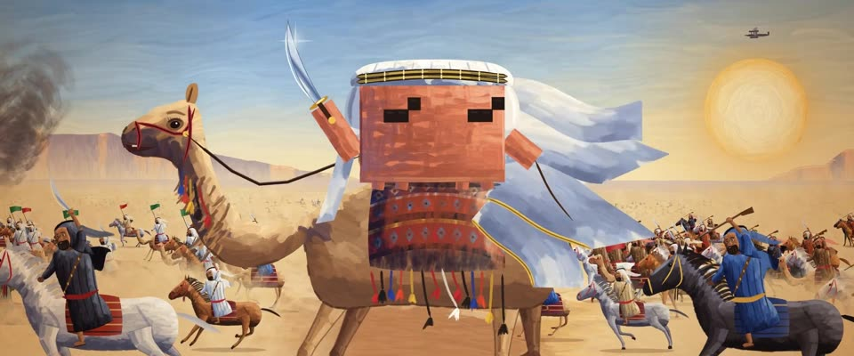
No.35 · 1962 《阿拉伯的劳伦斯》 Lawrence of Arabia — 2D Terpning 史诗海报水粉
水粉加油彩海报画 · Howard Terpning 1962 海报 · Freddie Young 70mm 沙漠光
看得见笔触方向的史诗海报水粉，冷暖对比强烈：琥珀色沙漠对钴蓝天空。《阿拉伯的劳伦斯》原海报就是 Howard Terpning 用这种画法画的。
风格提示词（中文）
60 年代手绘史诗电影海报，水粉打底、油彩提亮。先把形体画扎实再上色：铺不透明中间调底色，再用顺形体走的笔触（大面宽约画面宽的 1/80 到 1/50，脸和手用小笔），边缘柔和衔接；每个形体分亮、中、暗三级；干笔只用在尘土、布料和远处人物上；最后在受光边缘压锐利的暖奶油色高光。冷暖对比：钴蓝天空 #1F4D97 过渡到浅蓝 #A9C3D6，低垂的太阳周围转暖；地面 #EEC27A（任何地形），皮肤、泥土和衣服用赭红 #B56A33，远处阴影用紫 #6C6394。主角居中最大，一个斜向动作，布料飘起；身后可以有更小更松的人物退远。轻画板颗粒、暖暗角、雾气。运动：起伏、缓推到仰角近景、甩镜出画。避免：又碎又匀的刮擦线、平涂数码色、只有冷色。
Style prompt (EN)
1960s hand-painted epic film poster, gouache with oil highlights. Draw forms solidly, then paint: an opaque mid-tone base, directional strokes following each form (1/80–1/50 of frame width on large areas, smaller on faces and hands), soft-blended edges; model every form in three values; dry-brush only on dust, cloth and distant figures; sharp warm-cream highlights last on lit edges. Warm–cool contrast: cobalt sky #1F4D97 to pale blue #A9C3D6, warming to cream near a low sun; ground #EEC27A (any terrain); ochre-red #B56A33 for skin, earth and costume; violet #6C6394 for distant shadows. The hero centred and largest, a diagonal gesture, cloth streaming; smaller, looser figures may recede behind. Light board grain (±3%), warm vignette, haze. Motion: bounce, slow push to a low close-up, a whip pan out. Avoid: scratchy uniform hatching, flat digital fills, cold-only colour.
镜头与导演（3 镜）
sun0.7s：空旷沙漠的黎明大远景：一轮巨大的太阳在画面正中透过热浪升起，和上一部吹灭的火柴做匹配剪辑；缓慢推近。charge1.0s：跟拍车上的海报构图：Clawd（劳伦斯）骑骆驼混在冲锋的骑兵里奔来，弯刀先放低，卡拍举起、刀尖一闪；颠簸晃动，缓慢推近。whip0.8s：低角度推向高举的弯刀，然后向右甩镜头出画，接下一部。
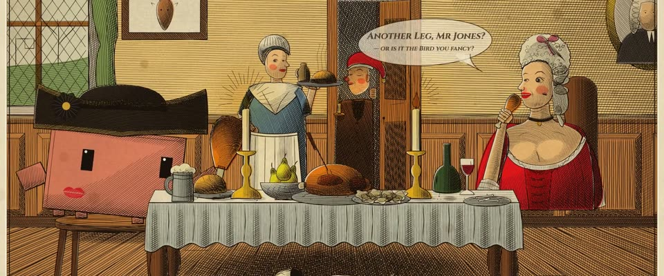
No.36 · 1963 《汤姆·琼斯》 Tom Jones — 2D 手工上色讽刺铜版画
霍加斯铜版线刻 · 罗兰森/吉尔雷式手工上色 · 讽刺画对白气泡
乔治王时代的讽刺版画：霍加斯式粗细变化的刻线和有方向的排线，上面刷罗兰森式鲜艳的手工淡彩，稍稍出线，再加一个对白气泡。电影本身就在模仿霍加斯笔下的 18 世纪英国。
风格提示词（中文）
乔治王时代讽刺版画：先刻铜版，印完再手工上色。墨只有棕黑色的线：雕刀轮廓约画面宽的 1/400，起伏鼓胀，背光一侧更粗；排线顺形体走、铺满每个面（线距约画面宽的 1/250），只在暗部交叉，平面用直尺排线。颜色几乎铺满整幅，清透但饱满：水色溢出墨线几像素，用酒红 #B3262E、黄铜 #D8A93A、肉色 #F0C4A4、石板蓝 #6D8AA6，大面用暖赭和棕褐。浅棕褐帘纹纸，淡霉点，版框印痕，刻线边框。按 William Hogarth 的方式布置：大鼻子的漫画人物，主体身边是旁观者或搞笑的道具、动物；一个手写斜体对话气泡，用用户的语言。镜头：全幅停两秒，急推，横滑到另一处细节，再给近景。避免：机械均匀的排线、大片空白纸、颜色严丝合缝填在线里、颜色发脏。
Style prompt (EN)
Georgian satirical print: a copperplate engraving, hand-coloured. Brown-black line only: swelling burin outlines about 1/400 of frame width, heavier on the shadow side; hatching follows each form and covers every surface (spacing about 1/250 of frame width), cross-hatched in the darks, ruled on flat areas. Colour covers nearly the whole picture, clear but strong: washes spilling a few pixels off the line in claret #B3262E, brass #D8A93A, flesh #F0C4A4, slate blue #6D8AA6, warm ochre and umber on large surfaces. Sepia laid paper, foxing, plate mark, engraved border. Stage it like William Hogarth: big-nosed caricatures, bystanders or comic props and animals around the subject; one slanted handwritten speech balloon in the user's language. Camera: hold the full plate 2 s, whip in, glide to another detail, close-up. Avoid: even mechanical hatching, blank paper, colour exactly inside lines, muddy colour.
镜头与导演（2 镜）
two1.3s：从左边甩进隔着满桌菜的双人镜头，Clawd（汤姆）大口啃鸡腿；镜头横滑过桌面落到沃特斯夫人，她冒出对白气泡（Another Leg, Mr Jones?）并眨了一下眼。clawd1.2s：Clawd 近景：眼睛变成心形，陶醉地一晃，又啃一小口，然后摘下三角帽扣向镜头，画面变黑；缓慢推近。
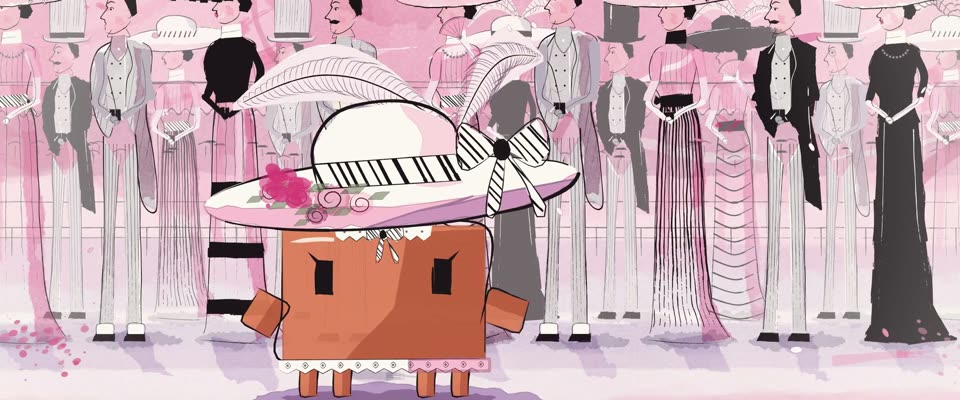
No.37 · 1964 《窈窕淑女》 My Fair Lady — 2D Bob Peak 时装插画
快速墨线 · 粉色与品红水彩 · Bob Peak 1964 海报 · Cecil Beaton 阿斯科特服装
快速、带飞白的墨线，配粉色和品红水彩晕染、甩点，四周化进白纸。1964 年原海报就是 Bob Peak 的墨线加粉彩；场景是 Cecil Beaton 设计的黑白阿斯科特。
风格提示词（中文）
仿 Bob Peak 的 60 年代时装插画。墨线很快：转弯处变粗、直线处变细，后段飞白，收笔一甩；粗细在画面宽的 1/600 到 1/250 之间，小弯处变细。深色衣服、帽子和条纹用实心墨块；脸留白纸 #FBF7F1。水彩是松散柔边的色池，干后边缘积色更深：粉 #EE84B2 做主色，品红 #CE3076 做热点，加玫瑰粉 #F4B2CC 和一点梅紫 #80285C；次要人物和阴影用暖灰；带方向的甩点。场景只用几根线和这几种水彩带过。横排人物是核心：修长侧身，九到十个头高，横向重复（主角加暖灰人物或重影），黑白图案压在粉色上；水彩盖住画面六到八成。镜头：沿人物慢横移；转场借图形遮罩。避免：轮廓粗细一样、平涂数码色、多边形硬边色块、空白页上孤零零一个人。
Style prompt (EN)
1960s fashion illustration after Bob Peak. Fast ink line, thicker in turns, dry-brush tail, a flick off; 1/600–1/250 of frame width, thinning on tight curves. Solid black for dark clothing, hats and stripes; faces bare paper #FBF7F1. Loose, soft-edged watercolour pools, darker at drying edges: pink #EE84B2 as the main field, magenta #CE3076 for hot spots, rose #F4B2CC, a touch of plum #80285C; warm grey for secondary figures and shading; directional splatter. Settings are a few lines in these washes, not literal colour. The frieze is essential: slender profile figures 9–10 heads tall repeated across the frame (the hero plus grey-wash figures or echoes), black-and-white pattern over pink; washes cover 60–80% of the frame. Camera: slow drift along the figures; graphic-mask transitions. Avoid: even-width outlines, flat digital fills, polygon-edged washes, a lone figure on an empty page.
镜头与导演（3 镜）
reveal0.8s：从黑里，阿斯科特大帽的帽檐抬起，露出 Clawd（伊莉莎）的近景；它把目光转向镜头，微微屈膝行礼，画面轻轻往后收。wide0.6s：阿斯科特全景：Clawd 站在两排穿 Beaton 黑白服装、僵立的贵族前面；缓慢横移，它抬起下巴。crowd1.1s：沿僵立的人群横摇，所有人同时举起望远镜，最后画面收进两个望远镜圆圈。
No.38 · 1965 《音乐之声》 The Sound of Music — 3D 绘本感 3D 阿尔卑斯航拍
程序生成 3D 地形（three.js） · 托德宽银幕色彩 · Ted McCord 直升机开场 · 宫崎骏的草原
绘本感的 3D 程序阿尔卑斯：饱和的翠绿、钴蓝、雪白，雕塑感的山脊，棉花团积云，风吹过草地的草浪。重演开场的直升机航拍，最后落到山顶转圈的玛丽亚。
风格提示词（中文）
绘本感的 3D 风景，60 年代宽银幕的饱和色，形体圆润光滑有雕塑感，不写实也不做低多边形。默认光：太阳高挂、略在镜头身后，大地满色：翠绿草地 #3FA33A、钴蓝天空 #2F6FD0、干净的白雪白云。风化山脊圆润，雪线顺坡，岩层暖灰赭，有云影。空气透视只加在最远的山脊，约两成半淡紫。积云是受光的白色棉花团。前景是齐膝密草和野花，随阵风弯伏。太阳低时只拉长影子、让云边变暖；其他场景也用这些颜色。一个连续镜头：前两秒高空飞越，再两秒降到草坡，之后贴草低机位环绕主体（每秒约 20°，主体约占画面高四分之一）。对标摄影师 Ted McCord（《音乐之声》，1965）和宫崎骏的草地。避免：泛紫、针尖山峰、写实灰岩、不动的草。
Style prompt (EN)
Storybook 3D landscape in saturated 1960s widescreen colour: smooth sculpted forms, not low-poly or photoreal. Default light: bright sun high, a little behind the camera: emerald grass #3FA33A, cobalt sky #2F6FD0, clean white snow and clouds. Rounded ridges, snow lines following slope, grey-ochre rock bands, cloud shadows. Haze only on the farthest ridges, about 25% lilac. Cumulus are lit white cotton puffs. Knee-high grass and wildflowers fill the foreground, bending in gusts. A lower sun lengthens shadows and warms only cloud edges; other settings keep these colours. Camera: one continuous move: 0–2 s high flight, 2–4 s descent, then a low orbit through the grass around the subject (about 20° per second, subject about 1/4 of frame height). References: cinematographer Ted McCord (*The Sound of Music*, 1965); Miyazaki's meadows. Avoid: violet wash, needle peaks, grey photoreal rock, static grass.
镜头与导演（3 镜）
far0.7s：画面从上一部的两个望远镜圆圈里打开到全屏：高空航拍，穿过棉花团积云掠过雪峰。approach0.8s：下降逼近山顶草坡：Clawd 小小地在画面正中，已经甩着毯包和琴盒转起来，远处是森林和田地拼块；镜头朝它降下去。meadow1.0s：贴着草的低机位，镜头环绕转了一整圈的 Clawd，毯包和琴盒甩开，身后是雪峰和积云；最后它双臂高举。
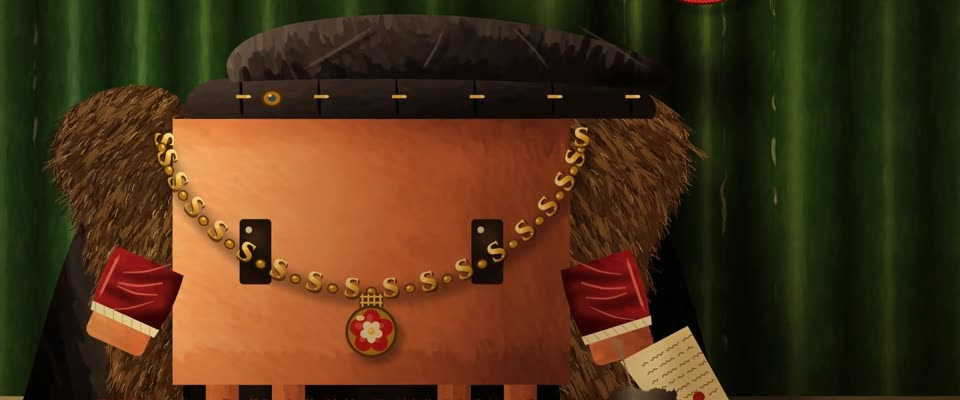
No.39 · 1966 《日月精忠》 A Man for All Seasons — 2D 霍尔拜因都铎肖像油画
古典油画罩染 · 霍尔拜因《托马斯·莫尔爵士像》（1527） · 烛光都铎室内
古典大师油画肖像：平滑罩染塑形、一根根画出的毛领、天鹅绒高光、逐环刻画的金链，再加旧光油和龟裂纹。霍尔拜因 1527 年亲手画过托马斯·莫尔，这里用的就是他的构图。
风格提示词（中文）
仿小汉斯·霍尔拜因的北方文艺复兴油画肖像。一层层画：带色底、顺明暗的笔触、柔和罩染、最后细笔；成品光滑，背景和布料隐约见笔触。每种材质各有画法：毛皮一根根画，天鹅绒褶子亮脊锐利，金属每件两个高光点，呢料和皮革画出柔和绒面。任何主体都画成穿自己衣服的正式半身像；它的场景从窗口露出，或由手里一件东西交代。色板：深绿帘幕 #1F4A26，黑 #141113、天鹅绒红 #6E0C15、金 #B0801E、毛皮棕 #3E2818；皮肤暖色、体积完整。柔光从左上来。招牌镜头：衬着绿帘的半身像；其次是材质特写，再慢慢拉远到暖色光池照亮的暗房间。收尾叠暖色光油和轻龟裂。避免：平涂、数码硬边、均匀亮光、没有体积的脸。
Style prompt (EN)
Oil portrait after Hans Holbein the Younger. Paint in layers: a toned underlayer, directional strokes following light and shadow, soft glazes, fine detail last; smooth finish, brushwork faint in background and fabric. Render each material: fur hair by hair, velvet folds with sharp light ridges, metal with two highlights per piece, wool and leather with soft nap. Any subject becomes a formal half-length sitter in its own clothes; its setting shows through a window or in an object it holds. Palette: deep green curtain #1F4A26, black #141113, velvet red #6E0C15, gold #B0801E, fur brown #3E2818; warm, fully modelled skin. Soft light from upper left. Signature shot: the portrait against the curtain; then material close-ups, a slow pull back into a dark room lit by warm pools. Warm varnish, light craquelure. Avoid: flat fills, hard digital edges, even light, unmodelled faces.
镜头与导演（2 镜）
close0.9s：脸和 SS 金链、都铎玫瑰吊坠的大特写：Clawd（莫尔）先看向一侧，再把目光转向镜头，眨一下眼；缓慢推近。pull1.6s：霍尔拜因肖像构图（都铎扁帽、毛领、红天鹅绒袖子、绿色锦缎帘幕、手里的信）：庄重地点一下头，目光落到信上，然后缓慢拉远，露出烛光下的都铎房间；烛火将熄，画面暗下去。
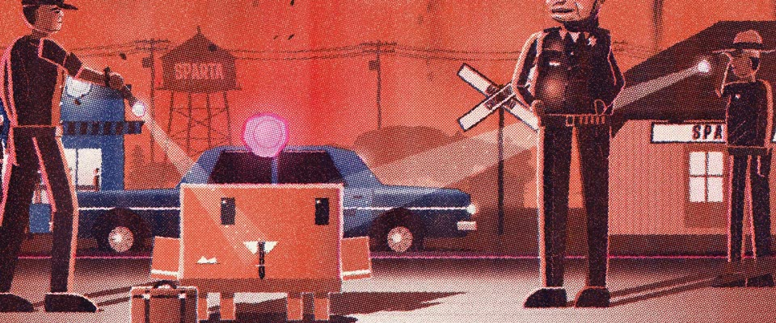
No.40 · 1967 《炎热的夜晚》 In the Heat of the Night — 2D 三色 Risograph 夜景
Risograph 叠印 · 1967 海报橙红 · Haskell Wexler 夜景 · 剪影式调度
三色 Risograph 印刷：深蓝、海报橙红、荧光粉，带网点、颗粒和套色错位；光是用「少上墨」印出来的。呼应 1967 年海报的橙红热浪底和黑色剪影。
风格提示词（中文）
三色专色 Risograph 印刷：橙红 #EC5032 是主场（约占画面六成，带竖向流淌痕），深蓝 #162C76 给剪影和阴影，荧光粉 #FF48B0 只给轮廓光和光晕，印在暖白纸 #F7F2E7 上。每色是各自网角的半调，点径约画面宽的 1/300，版间错位二到四像素；有墨粒、针孔，逐帧轻微抖动。蓝剪影底下挖掉橙色，印成纯蓝；只有最暗处两色叠成近黑。光就是没有墨：光束、灯和被照亮的地面露出纸白，外圈一道粉。人物是带粉色边缘光的蓝剪影，肤色用三到六成橙色网点加一级蓝暗部。时间偏冷时仍保留红场，只让蓝色升到天空顶部。镜头：手持跟在提着光源的人身后，一个反打近景，一次缓推。避免：蓝色占满画面、平滑渐变、第四种墨、套印太准。
Style prompt (EN)
Three-ink Risograph: orange-red #EC5032 as the dominant field (about 60%, with drip streaks), deep blue #162C76 for silhouettes and shadows, fluorescent pink #FF48B0 only for rims and halos, on warm paper #F7F2E7. Each ink is halftoned at its own angle, dots 1/300 of frame width, plates misregistered 2–4 px; grain, pinholes, slight boil. Knock orange out under blue silhouettes so they print pure blue; only the darkest accents overprint to near-black. Light is the absence of ink: beams, lamps and lit ground show bare paper, ringed in pink. Figures: blue silhouettes, pink rims; skin is 30–60% orange with a blue shadow step. At cooler times keep the red field; blue rises only into the top of the sky. Camera: handheld behind someone carrying a light, a reverse close-up, a push. Avoid: blue-dominated frames, smooth gradients, a fourth ink, clean registration.
镜头与导演（3 镜）
pov0.8s：黑暗中的手持手电主观镜头：副警长的光束扫过车站站台，找到手提箱旁的 Clawd（蒂布斯）；它抬头睁大眼，其他几束手电随即亮起。sheriff0.5s：反打警长吉莱斯皮近景：大檐帽、飞行员墨镜，嚼着口香糖，然后停住；缓慢推近。standoff1.2s：对峙中全景：Clawd 站在副警长和警长之间，几束手电光交叉打在它身上，身后是蓝色警车和斯巴达镇水塔；它挺直身子、端平肩膀，镜头推近。
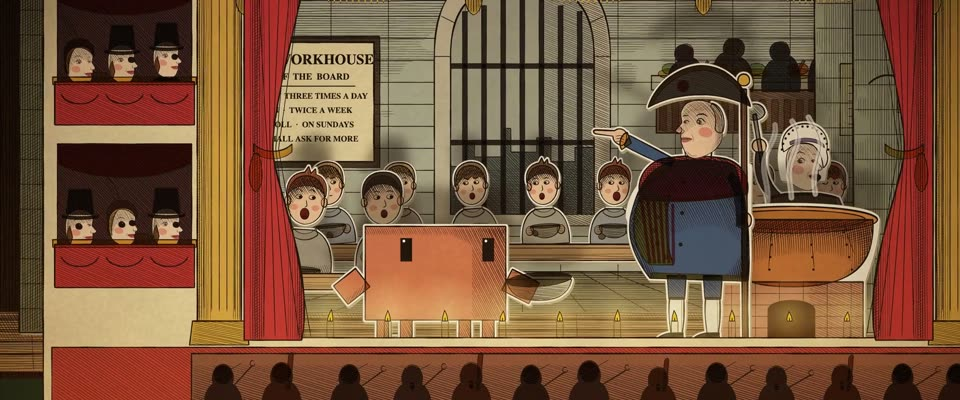
No.41 · 1968 《雾都孤儿》 Oliver! — 2.5D 维多利亚玩具纸剧场
Pollock's 玩具剧场 · 手工上色石印纸偶 · 剪卡与脚灯投影 · Cruikshank 漫画人物
维多利亚玩具纸剧场：手工上色的石印卡纸人物留着剪刀白边，景片分层插在滑杆上，镀金台口下的烛光脚灯把影子投上景片。《雾都孤儿》是歌舞片，正好搬上维多利亚家庭小舞台。
风格提示词（中文）
维多利亚玩具纸剧场（Pollock's 式）。一切都是印出来的卡纸：黑色石印轮廓约画面宽的 1/400，每张剪纸一侧有稀疏蜡笔排线；手工上色是沉稳旧色：深红 #C8262C 和暗金 #E0AB36 用在台口和帷幔（金色不能是亮黄），蓝 #2F5A9A 给服装；布景、天空、水和肤色用发灰的棕、灰和奶油卡纸 #F4ECD6。每个人物和景片留一圈剪刀白边（约画面宽的 1/200）。景片是平行的 2.5D 层，层间视差，层内无透视。烛光脚灯把剪纸影子放大约一倍半投到后面景片上，柔边，随烛火闪动。镀金台口、红帷幔和画出来的包厢观众框住舞台，台口宽占画面八到九成。镜头：慢推、横移，近景微震；结尾拉远露出暗房间。避免：鲜艳矢量色、真 3D 纵深、柔和摄影光、没有剪边的人物。
Style prompt (EN)
Victorian toy paper theatre (Pollock's), all printed card: black lithographic outlines about 1/400 of frame width, sparse crayon hatching on one side of each piece; muted antique hand colouring: deep red #C8262C and dull gold #E0AB36 on proscenium and curtains (never bright yellow), blue #2F5A9A for costumes; scenery, sky, water and skin in greyed browns, greys and cream card #F4ECD6. Every cut-out keeps a white scissor margin (1/200 of frame width). Flats are parallel 2.5D layers in parallax, flat within each plane. Candle footlights throw each cut-out's shadow onto the scenery behind, about 1.5× enlarged, soft, flickering. Gilt proscenium, red drapes and painted audience boxes frame a stage opening 80–90% of frame width. Camera: slow push, lateral tracking, shaky close-ups; a final pull-back shows the dark room. Avoid: bright vector colour, true 3D depth, soft studio light, figures without margins.
镜头与导演（3 镜）
table0.5s：全景：暗房间里红木桌上的玩具剧场，「Theatre Royal」台口，桌上一张人物剪纸，旁边伸进来一只操偶的手；缓慢推近。stage0.9s：沿舞台横移，济贫院饭堂：Clawd（奥利弗）从一排孩子里走出来，举起空碗（Please, sir…），冒着热气的粥锅旁，班布尔的眉头皱起来；镜头随它向右跟。close1.1s：Clawd 和班布尔的近景：班布尔一声大吼，Clawd 缩了一下、发抖，碗还是举着；吼声那一下镜头轻震。
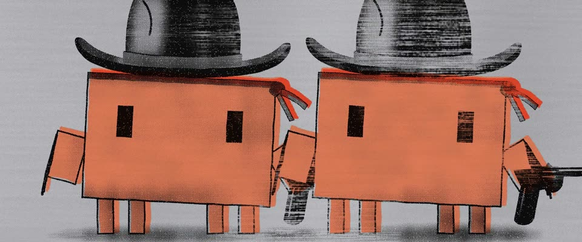
No.42 · 1969 《午夜牛郎》 Midnight Cowboy — 2D 沃霍尔照片丝网 · Double Elvis
照片丝网印 · 沃霍尔《Double Elvis》（1963） · 银漆底 · 错位色块
沃霍尔的照片丝网：黑色网点照片层印得不匀，错位地压在松散的平涂色块上，底是银色，画面重复两次、三次。片里就有沃霍尔工厂式的派对，而他画的猫王正是牛仔。
风格提示词（中文）
安迪·沃霍尔式照片丝网印。两块版：一块是 45° 的高反差黑色半调照片，网点约画面宽的 1/200，几乎没有中间调；下面是手刷平涂色块，相对照片错开约画面宽的 1/100，边缘歪扭：出租车黄 #F3BE14、肤粉 #F2A197、奶油 #EFE6CF、红 #E2462B，底是带柔和光泽的刷涂银漆 #BABCC0。唯一的主角用最强的那块颜色。刮板压力不匀：有的地方网点糊成墨团，有的地方拖成横向干笔条纹和针孔，底下隐约有画布纹。重复就是构图：同一个人物或物体全身，在空银底上并排印两次、再印三次，略有重叠。场景只以褪成银色的印样出现在重复里。镜头：手持晃动、推近、正面平面定格。对标沃霍尔《Double Elvis》（1963）。避免：干净均匀的网点、套色完全对齐、处处一样清晰。
Style prompt (EN)
Andy Warhol photo-silkscreen. Two plates: a high-contrast black halftone photograph at 45°, dots about 1/200 of frame width, few mid-tones; and hand-painted flat colour blocks underneath, offset about 1/100 of frame width with wobbly edges: taxi yellow #F3BE14, skin pink #F2A197, cream #EFE6CF, red #E2462B, on brushed silver paint #BABCC0 with a soft sheen. The one hero subject takes the strongest block colour. Uneven squeegee pressure: dots flood into blotches in places, drag into dry horizontal streaks and pinholes elsewhere, over faint canvas weave. Repetition is the composition: the same figure or object, full-length, printed side by side two then three times, slightly overlapping, on empty silver. Settings appear only as drained-to-silver prints in the repeat. Camera: handheld shake, a push in, flat frontal tableaux. Reference: Andy Warhol, *Double Elvis* (1963). Avoid: clean even halftone, perfect registration, uniform crispness.
镜头与导演（3 镜）
street1.1s：第六大道的人行横道：黄色出租车急刹冲进来，Clawd（乔·巴克）往后一跳、瞪着眼，拉索拍了一下车头；手持晃动，缓慢推近。taxi0.6s：拉索的近景：叼着烟冲出租车大吼、手指着司机（I'm walkin' here!）；推近。warhol0.8s：街景褪成银色，印成沃霍尔的 Double：两个戴斯泰森帽、手持左轮的 Clawd 叠在一起，再变成三个；正面平视的定格画面。
新好莱坞（1970–1979）· New Hollywood
No.43 · 1970 《巴顿将军》 Patton — 2D 二战战争债券石印海报
石印海报 · 1942–45 美军征兵与战争债券海报 · 45° 网点、套色错位
仿 1940 年代美军战争债券海报的石印画法：分级平涂的褶皱、深色轮廓、网点阴影、泛黄的纸。对应《巴顿将军》开场：小小的将军站在一面占满舞台的巨幅国旗前训话。
风格提示词（中文）
1940 年代美国战争债券石印海报。平涂油墨：红 #C2342C、海军蓝 #213261、橄榄绿 #5F5C31、卡其 #B7975E，印在米白 #E6D5B3 的纸上，有纤维、霉点和磨边。每个形体三档：留纸、平涂、油墨加网点，压成硬边色阶。棕黑轮廓线约画面宽的 1/500，最后压上；阴影是粗的 45° 网点带（点径约画面宽的 1/150），带蜡笔颗粒；色版错开约画面宽的 1/600。默认像舞台：对称正面，小主体站在占满大半画面的巨大图形前（旗帜、徽章、放射光芒），灯光是硬边浅色块或留纸；户外也一样，光落成地上的硬边浅斑。文字可有可无，用用户的语言。镜头慢推，配一次干脆的拉出。对标 1942–45 年美国战争债券海报。避免：喷枪渐变、套色完全对齐、网点细到像一片灰。
Style prompt (EN)
1940s US war-bond lithograph poster. Flat inks: red #C2342C, navy #213261, olive #5F5C31, khaki #B7975E, on fibrous, foxed cream #E6D5B3 paper. Three values per form (bare paper, flat ink, ink plus halftone), posterised in hard steps. Brown-black key line about 1/500 of frame width, printed last; shadows as coarse 45° halftone bands (dots about 1/150 of frame width) with crayon grain; colour plates offset about 1/600 of frame width. Default: a symmetrical frontal stage, a small subject before a huge graphic shape filling most of the frame (flag, emblem, sunburst), lights as hard pale shapes or bare paper; outdoors too, light falling as a hard pale pool. Lettering optional, in the user's language. Camera: slow push-ins, one crisp pull-back. Reference: US war-bond posters, 1942–45. Avoid: airbrushed gradients, perfect registration, halftone so fine it reads grey.
镜头与导演（3 镜）
reveal1.0s：红白条纹铺满画面（接上一部沃霍尔网格的图形匹配），随即一个拉镜头，Clawd 从画面下方走上来，站到巨幅国旗前。close0.9s：中近景，镜头带轻微抖动慢推：Clawd 在四星钢盔下啪地敬礼，停住，放下，马鞭拍进手心，用力一点头。wide0.5s：全景：镜头拉出，越过国旗看到整个空剧场：红幕、镀金台口、脚灯，Clawd 在舞台中央缩成一个小点。
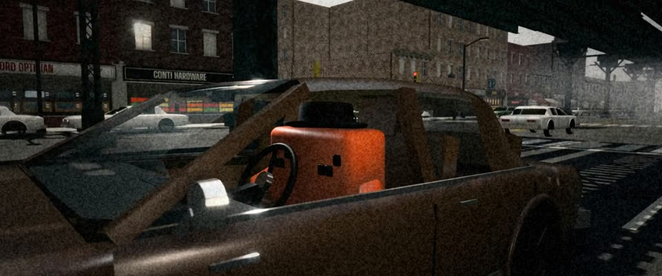
No.44 · 1971 《法国贩毒网》 The French Connection — 3D 高架铁下追车 · 16mm 颗粒 3D
three.js 3D 街景 · 16mm 纪录片颗粒 · 暗部偏青的冷灰印片调色
整条布鲁克林高架铁下的大街用 3D 建出来，再调成粗颗粒 16mm：冷灰、暗部偏青、高反差、片门抖动。这部片最有名的就是高架铁下的追车，3D 才拍得出那种速度。
风格提示词（中文）
70 年代初粗粝的纪实感，放在细致的 3D 世界里，按增感冲洗的 16mm 收尾。调色：低饱和、高反差；中性冷灰 #7A7C7A、带青的暗部 #1E2A2C，砖、木头、车辆保持暖棕 #6E4A34，至少占四分之一画面，绝不整体泛蓝；唯一的主角（比如橙 #D97757）保持饱和。默认阴天，天空亮到近白，任何时段都一样；阳光穿过头顶格栅（轨道、桥、栈桥）落成硬边条纹。颗粒成团，约画面宽的 1/700，亮度 ±8%；片门晃动、闪烁、灰尘，亮处偶有淡重影。杂物多且符合地点。手持机位跟着动作走：18 到 25mm 低机位向前冲，重复物体频闪掠过；回看主体的跟拍机位；墙角广角。对标 William Friedkin《法国贩毒网》（1971）和摄影师 Owen Roizman。避免：干净的 CG 反光、整体泛蓝、空荡的方块场景、颗粒糊成一片。
Style prompt (EN)
Gritty early-1970s documentary look in a detailed 3D world, finished as pushed 16mm. Grade: low saturation, high contrast; neutral-cold greys #7A7C7A, cyan shadows #1E2A2C, warm-brown mid-tones #6E4A34 in brick, wood, vehicles (at least a quarter of the frame), never an overall blue; the one hero (e.g. #D97757) stays saturated. Default overcast, sky near-white, at any time of day; sun through any overhead grid (track, bridge, pier) falls in hard stripes. Grain clumps about 1/700 of frame width, ±8% brightness; gate weave, flicker, dust, occasional faint ghosts of bright lights. Dense clutter fitting the place. Handheld cameras ride the action: a low 18–25 mm lens rushing forward as repeated objects strobe past, a rig looking back at the subject, a corner wide. References: William Friedkin, *The French Connection* (1971); cinematographer Owen Roizman. Avoid: clean CG shine, blue tint, empty places, mushy grain.
镜头与导演（3 镜）
wide0.8s：路口全景：列车从头顶驶过，棕色庞蒂亚克甩尾冲上大街，后轮冒烟；镜头视角慢慢放宽。bumper0.8s：片中有名的保险杠机位：超低机位带着运动模糊往前冲，高架铁的柱子一根根闪过。window0.9s：中景，从车外透过摇下的车窗看 Clawd 扮的道尔：猪肉派帽、咬牙握着方向盘，身后高架铁和店面滑过，带车载抖动。
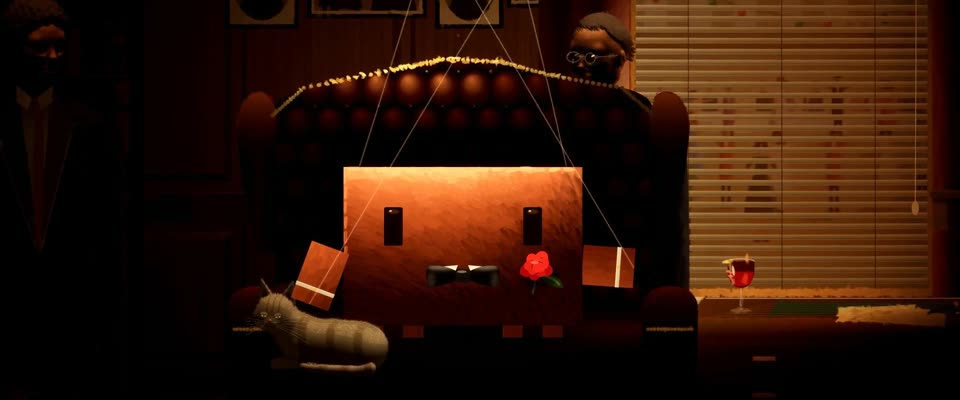
No.45 · 1972 《教父》 The Godfather — 2D 伦勃朗顶光明暗油画
明暗油画 · 戈登·威利斯的顶光 · 伦勃朗、卡拉瓦乔式罩染
深琥珀和赭褐的油画，只有顶光落下的地方是暖的：暗部是透明的薄罩染，受光边缘是厚涂。重现戈登·威利斯在“I believe in America”那间书房里的顶光。
风格提示词（中文）
伦勃朗、卡拉瓦乔式明暗油画，只有一盏顶光。约七成画面是看得出形体的暖暗部，大多是赭褐 #24150B，近黑 #070403 只在最深的角落。琥珀 #8F5D2A 中间调约两成；朝上的面亮到 #E2B673。主角整个站在光池里，受光部分至少占画面高的四分之一；眉骨把眼睛压进阴影。一处饱和的红 #9C1A1A。暗部薄而平滑地罩染，亮部是带亮笔脊的厚涂，笔触约画面宽的 1/100；过渡柔和，不用刮擦线条。琥珀光油，重暗角，细画布纹（±3%）。背景可有一处暖色亮口（窗、门洞、发亮的天边）；画内的小灯只是一小团光，不算第二个主光。镜头慢拉、慢推。对标 Francis Ford Coppola《教父》（1972），摄影师 Gordon Willis。避免：提亮暗部、平光、人脸跳出来、暗到看不清。
Style prompt (EN)
Chiaroscuro oil painting after Rembrandt and Caravaggio, one overhead light. About 70% of the frame is readable warm dark, mostly umber #24150B, near-black #070403 only in the deepest corners. Amber #8F5D2A mid-tones about 20%; top planes reach #E2B673. The hero stands in the light pool, lit area at least 1/4 of frame height; brows shade the eyes. One red accent #9C1A1A. Darks thin smooth glazes; lights thick impasto, ridged strokes about 1/100 of frame width; modelling soft, never scratchy. Amber varnish, heavy vignette, canvas grain (±3%). A warm bright opening (window, doorway, horizon) may glow behind; a small lamp in frame is a small glow, not a second key. Camera: slow pull-backs and pushes. Reference: Francis Ford Coppola, *The Godfather* (1972), cinematographer Gordon Willis. Avoid: lifting the darks, flat light, faces popping out, frames too dark to read.
镜头与导演（4 镜）
opening1.7s：从暗处博纳塞拉的灰发开始，镜头缓缓拉出，露出坐在翼背椅里的教父和他膝前的猫。close1.0s：近景：顶光下的 Clawd 缓缓抚摸灰色虎斑猫，领结和红玫瑰吃到光；镜头慢推。window0.8s：推向百叶窗：窗外阳光下的婚礼，虚而过曝，左边是黑根的剪影。hand1.5s：书房全景，镜头略推：提线木偶的手从画面顶上降下来，提线在 Clawd 身上慢慢绷紧。
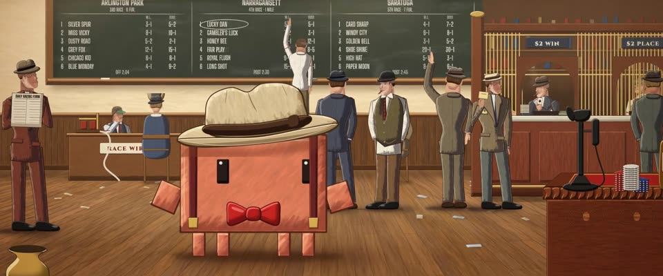
No.46 · 1973 《骗中骗》 The Sting — 2D 《星期六晚邮报》插画
《星期六晚邮报》封面插画 · Leyendecker 式块面塑形 · Jaroslav Gebr 的章节卡
Leyendecker、Rockwell 一路的杂志插画：块面受光、平行笔触、利落的深色轮廓。片中章节卡就仿《星期六晚邮报》封面，1936 年的下注厅也照这个画。
风格提示词（中文）
30 年代《星期六晚邮报》封面插画。写实人物，比例准确、表情生动，用块面塑造（受光、背光、下方暖色反光），块面里填顺着形体、长短不一的笔触，宽约画面宽的 1/150，柔和衔接，不成条纹。深色轮廓在背光一侧加粗，画面宽的 1/800 到 1/300。暖色主光从左上来。配色：灰泥 #E2C492、橡木 #764626、石板 #28322C、黄铜 #E2B046、墨 #341E18；橡木和墨色暗部约占三分之一画面；天空灰泥偏石板，水是浅石板，皮肤灰泥加黄铜。轻颗粒画板（±3%）加暖暗角。默认一点透视，时代细节，薄雾，故事有就加次要人物。每个人物只画一遍，整体移动（呼吸、摇摆、沿路径滑行）。镜头：一次长而平滑的推进。对标 J. C. Leyendecker、Norman Rockwell。避免：僵硬剪纸人物、粗细一样的轮廓、发脏的颜色。
Style prompt (EN)
1930s Saturday Evening Post cover illustration. Realist figures, correct proportions, expressive faces, built from blocky planes (lit, shadow, warm bounce from below) filled with blended strokes about 1/150 of frame width, varied in length, following the form, never stripes. Dark contour thicker on the shadow side, 1/800–1/300 of frame width. Warm key from upper left. Palette: plaster #E2C492, oak #764626, slate #28322C, brass #E2B046, ink #341E18; oak and ink darks about a third of the frame; sky plaster cooled with slate, water light slate, skin plaster plus brass. Grainy board (±3%), warm vignette. Default one-point perspective, period detail, haze, secondary figures if the story has any. Each figure is drawn once and moves whole (breathing, sway, sliding along a path). Camera: one long, smooth push in. References: J. C. Leyendecker, Norman Rockwell. Avoid: stiff cut-out figures, even outlines, muddy colour.
镜头与导演（1 镜）
push2.5s：一镜到底：从下注厅全景（赔率黑板、下注窗口、窗口里的冈多夫）一路推到扮胡克的 Clawd，它把手指贴到鼻侧打暗号，再冲镜头压一下帽檐。
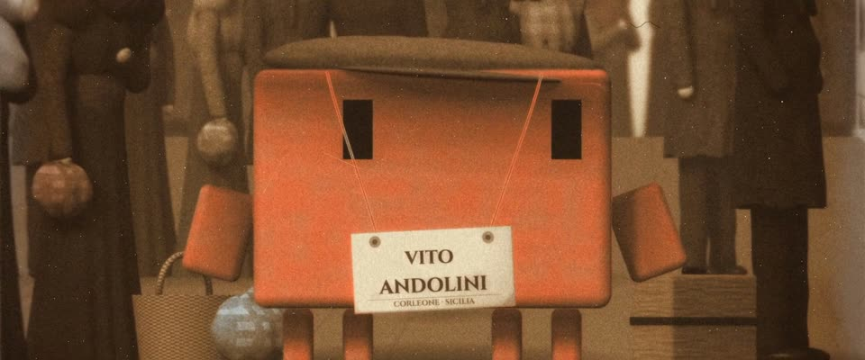
No.47 · 1974 《教父2》 The Godfather Part II — 2.5D 手工上色棕褐老照片
调色银盐照片 · Lewis Hine 的埃利斯岛照片 · 手工刷色 · 光线步进的 3D 人物
世纪之交的调色银盐照片，手工刷色：棕褐调、柔焦、银盐颗粒、霉斑、裂角，局部淡淡的红、蓝、铜绿。画的是 1901 年少年维托抵达埃利斯岛，像 Lewis Hine 的照片。
风格提示词（中文）
1900 年前后手工上色的棕褐银盐照片。先做受光的立体形体，柔光从左上来，再“印”出来：柔焦带轻微光晕，颗粒在中间调最重（±5%）；棕褐调从 #281A12 经 #987048 到 #EEE0C2 完整铺开，至少五分之一画面落到最深一端，任何光线下都一样。人物比例真实（头约七分之一身高），明暗柔和。透明颜料松松地刷，溢出边缘：唯一的主角最重（比如橙红 #D97757，不透明度六到八成），一两件道具轻点；颜色进暗部就被吞掉。做旧要轻：暗角、边缘银化（靠边暗部泛灰蓝金属光）、几个小霉点、细划痕，最多一个裂角。构图正面、纪实，人物静立面对镜头。镜头缓慢横摇扫过人脸。对标 Lewis Hine、Augustus Sherman 的埃利斯岛照片。避免：积木人物、数码填色、低反差雾灰、大片霉斑。
Style prompt (EN)
A hand-coloured toned silver print from about 1900. Build lit 3D forms, soft key from upper left, then 'print' them: soft focus, light halation, grain heaviest in mid-tones (±5%), full sepia range #281A12, #987048, #EEE0C2; at least a fifth of the frame reaches the dark end, in any light. Figures: real proportions (head 1/7 of body), soft shading. Transparent dyes brushed loosely past edges: the one hero subject strongly (e.g. orange-red #D97757 at 60–80% opacity), a faint touch on one or two props; dyes die in shadow. Light ageing: vignette, silvered edges (grey-blue sheen in border darks), small foxing spots, fine scratches, at most one cracked corner. Frontal, documentary: figures stand still facing the lens. Camera: slow pan across faces. References: Lewis Hine; Augustus Sherman (Ellis Island). Avoid: toy figures, digital fill colour, low-contrast fog, big mould blotches.
镜头与导演（3 镜）
crowd0.8s：横摇扫过甲板上仰头的移民群像，画面随船身起伏。liberty0.7s：Clawd 的主观视角：自由女神从港口的雾里显出来，带一点铜绿色；镜头慢推。close0.9s：近景：戴粗花呢鸭舌帽的少年维托（Clawd），胸前挂着“VITO ANDOLINI”名牌；它低头看名牌，又抬头踮脚；镜头略微拉开。
No.48 · 1975 《飞越疯人院》 One Flew Over the Cuckoo's Nest — 2D 霍珀式美国写实油画
爱德华·霍珀式写实 · 硬边斜射窗光 · 平整油彩块面加拖笔
仿爱德华·霍珀的安静写实：大块平整的淡绿墙面、低角度晨光投下的硬边平行四边形、彼此隔开的人。正合《飞越疯人院》的病房：日光灯下的秩序，被一次出逃打破。
风格提示词（中文）
爱德华·霍珀式美国写实绘画。大块克制、偏浅的平面色：机构绿 #9EB8A0 和 #5E7C66、灰绿地面 #7E8876、奶油 #ECE6D2，看得见画布纹（±3%），每块拖几笔长笔触，宽约画面宽的 1/80，亮或暗百分之五到十。低角度阳光从一侧射来，在墙和地上投下硬边暖色平行四边形 #FCE6AC，压着窗框或栏杆的清晰影子，室内户外都一样。天空浅奶油绿，皮肤是提暖的奶油色，衣服用压暗的绿。人物由三四块边缘柔和的明暗色块叠成，不勾轮廓，比例写实；几个人时分开站。大部分时间静止，然后一件不到一秒的突发：甩镜或一阵强光。招牌镜头：一点透视的静止室内，地上有光块。对标霍珀《Office in a Small City》（1953）。避免：粗轮廓、矢量人物、深而饱和的墙、模糊光斑。
Style prompt (EN)
Edward Hopper-style American realist painting. Large flat planes of restrained, pale colour: institutional greens #9EB8A0 and #5E7C66, grey-green floor #7E8876, cream #ECE6D2, on visible canvas (±3%), with a few long dragged strokes about 1/80 of frame width, 5–10% off the base. Low side sun throws hard-edged parallelograms of warm light #FCE6AC on walls and ground, crossed by crisp shadows of frames or railings, indoors or out. Sky pale cream-green; skin warmed cream; clothes darkened greens. Figures painted from 3–4 overlapping soft-edged value shapes, no outline, real proportions; several people stand apart. Stillness, then one sudden event under a second: a whip pan, a burst of light. Signature shot: a still one-point interior, light on the floor. References: Edward Hopper, *Office in a Small City* (1953). Avoid: heavy outlines, vector figures, dark saturated walls, fuzzy light patches.
镜头与导演（1 镜）
throw2.5s：日间活动室里的一镜到底：Clawd 把大理石水疗台举过头顶扔出去，镜头跟着甩到后窗，玻璃炸开、晨光涌进来，再穿过光甩回 Clawd，它举起双臂欢呼。
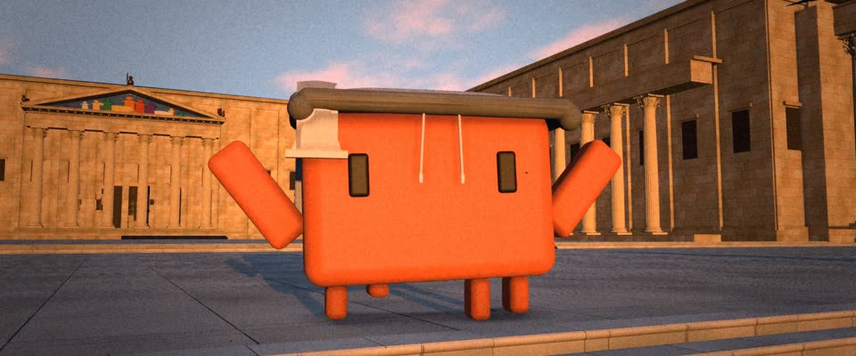
No.49 · 1976 《洛奇》 Rocky — 3D 费城台阶日出 3D · 35mm 调色
three.js 3D 城市 · 70 年代 35mm 胶片调色 · 斯坦尼康跟拍与环绕升镜
清晨的费城整个做成 3D，从肉库到博物馆 72 级台阶，调成 70 年代 35mm：冷蓝天、低低的金色太阳、长影子、薄雾、细颗粒。跑上台阶和顶上的环绕升镜是这部片的记忆点。
风格提示词（中文）
70 年代 35mm 写实，放在细致的 3D 世界里，默认日出（日落同理）。太阳离地平线五到十度，暖橙 #F0A060，从侧面或前侧方照亮主角，让受光的身体和拉过地面的长影看得清；不要完全逆光。天空冷蓝 #7FA3CF，云底染粉 #E6B2AE；雾朝太阳一侧发金、背光一侧发蓝紫。调色：细颗粒（±3%），暗部偏冷、高光偏暖，不过曝；只有太阳入画时才有光晕和鬼影。镜头：低机位斯坦尼康从背后跟着主角爬上一段坡或台阶，到最高处接一个连续环绕，边转边升边退，六到八秒，转到受光的脸，直到整个地方在下面铺开。对标 John G. Avildsen《洛奇》（1976）、斯坦尼康操作者 Garrett Brown。避免：正午平光、没细节的剪影、高潮时机位不动、塑料感反光。
Style prompt (EN)
1970s 35mm realism in a detailed 3D world, sunrise by default (sunset the same). Sun 5–10° up, warm orange #F0A060, lighting the hero from the side or three-quarter front so the lit body and long ground shadows read; no full backlight. Cool blue sky #7FA3CF, pink cloud undersides #E6B2AE; haze golden toward the sun, blue-violet away. Grade: fine grain (±3%), cool shadows, warm highlights, nothing clipped; flare and ghosts only with the sun in frame. Camera: a low Steadicam following the hero from behind up an ascent, then at the top one continuous orbit that circles, rises and pulls back over 6–8 s, showing the lit face, until the place spreads out below. References: John G. Avildsen, *Rocky* (1976); Steadicam operator Garrett Brown. Avoid: flat noon light, detail-less silhouettes, a static climax, plastic CG shine.
镜头与导演（5 镜）
meat0.4s：肉库中景，定机位：戴灰色兜帽的 Clawd 对着挂着的牛肉出拳，白瓷砖、裸灯泡。meat_close0.4s：更近一些，定机位：拳头打在牛肉上，牛肉晃荡。street0.6s：黎明前的意大利市场，定机位：Clawd 迎着镜头慢跑，经过油桶火、果蔬摊和还亮着的路灯。run1.5s：低机位斯坦尼康从背后追着 Clawd 跑上 72 级台阶，前方是博物馆的立柱。orbit2.1s：到顶，Clawd 双臂举成 V 字一跳；镜头绕着它转、上升、后退，直到整条大道和城市在日出里铺开。
No.50 · 1977 《安妮·霍尔》 Annie Hall — 2D 《纽约客》单格漫画 · 墨线淡彩
《纽约客》单格漫画 · 钢笔墨线 · 淡水彩 · 手写图说
《纽约客》单格漫画：灵动的钢笔墨线、几块克制的淡彩、大量白纸，画下面一行手写图说。伍迪·艾伦的喜剧和这本杂志是一个调子，龙虾那场戏正好是一格笑话漫画。
风格提示词（中文）
《纽约客》单格漫画，满版出血，不画格框。蘸水笔墨线直线处细到约画面宽的 1/1000，转弯处粗到约 1/300，收笔一甩；方盒子几笔分开画，角上交叉出头。淡水彩带积色边，铺在大部分物体上，溢出墨线不超过画面宽的 1/150：灰 #9698A0、海蓝 #78A0BE、沙色 #E2CCA0、铁锈 #C45C32，底是冷压纸 #FBF8F1，四边化成白。人物夸张、有表情、画出五官，周围有日常道具，留白但不空荡。画面下方一行手写说明，用用户的语言，字高约画面高的 1/30，逐字写出：一句冷面幽默。画面不动，活物微微颤动。镜头：轻微漂移和推近；画面可一分为二，左右并排两幅。对标 James Thurber、William Steig、桑贝。避免：浓重饱和的颜色、粗细一样的矢量线、白纸中间漂着一个小格子。
Style prompt (EN)
New Yorker single-panel cartoon, full-bleed, no border. Nib-pen lines about 1/1000 of frame width on straights, swelling to 1/300 in turns, flicking off at the ends; box corners overlap. Pale watercolour washes with pooled edges over most objects, slipping past the lines by at most 1/150 of frame width: grey #9698A0, sea blue #78A0BE, sand #E2CCA0, rust #C45C32, on cold-press paper #FBF8F1 fading to white at the edges. Exaggerated, expressive figures with drawn faces among everyday props. One hand-lettered caption line under the action, in the user's language, about 1/30 of frame height, appearing letter by letter: a deadpan remark. The drawing holds still; living things wobble. Camera: small drifts and pushes; the frame may split into two side-by-side drawings. References: James Thurber, William Steig, Jean-Jacques Sempé. Avoid: saturated colour, uniform vector lines, a small framed panel floating in white.
镜头与导演（3 镜）
lobster0.6s：冰箱后缝的大特写：一只龙虾慢慢探出头；镜头缓慢漂移。still1.5s：厨房全景：扮安妮的 Clawd 边笑边给抱着汤锅的艾尔维拍闪光照；龙虾爬到脚边，它一跳，落地笑开，下方一笔笔写出“TALK TO HIM. YOU SPEAK SHELLFISH.”；镜头略微拉开，带一点手持晃动。split0.4s：复活节饭桌分屏：左边安静的霍尔家，Clawd 坐在其中；右边吵闹的辛格家。
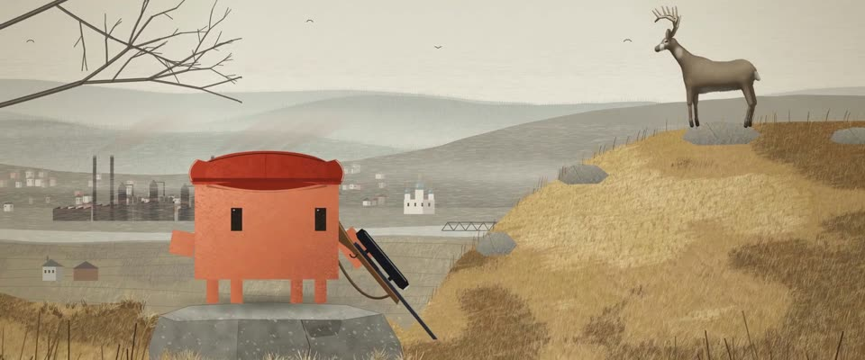
No.51 · 1978 《猎鹿人》 The Deer Hunter — 2D 安德鲁·怀斯蛋彩
石膏底蛋彩 · 安德鲁·怀斯 · 细密交叉短笔
仿安德鲁·怀斯的蛋彩：干燥细密的交叉短笔，低饱和的草黄、赭褐、灰绿，草叶一根根画出来，天空苍白。怀斯是宾州画家，“一枪”猎鹿就在宾州钢铁小镇上方的山里。
风格提示词（中文）
安德鲁·怀斯式石膏底板蛋彩画。干、哑光、极细：颜色全靠密密的交叉短笔叠出来，每笔长约画面宽的 1/400，细如发丝。低饱和配色：苍白阴天 #D9D5C6、草黄 #CDB27A、赭褐 #6A5234、灰绿远山 #8E938C、铁锈色 #8A4E32；水、石、衣服和皮肤都从这几色调出。强调色只给唯一的主角（比如一顶红帽）；画里的光源只是一个淡淡的小点，不带光晕。地面（默认枯草，其他地面同理）先铺大块深浅，再叠细笔、暗色草团，最后是被风梳过的单根草叶；岩石和房屋用短笔顺着各面排。空间空旷孤独，主体小而偏离中心。默认阴天软光，其他时段也保持苍白、不要暖光。镜头缓慢漂移、安静推近；圆形遮罩可作剪切点。避免：湿水彩晕染、饱和色、厚重发亮的笔触。
Style prompt (EN)
Egg tempera on gesso panel after Andrew Wyeth. Dry, matte, very fine: colour built from dense cross-hatched strokes, each about 1/400 of frame width long, hairline thin. Muted palette: pale overcast sky #D9D5C6, straw grass #CDB27A, umber #6A5234, misty grey-green hills #8E938C, rust #8A4E32; water, stone, clothes and skin mixed from these. One accent colour, only on the one hero subject (e.g. a red cap); any light source is a small pale dot, no halo. Ground (dry grass by default, other ground alike): big light and dark patches, fine strokes, dark tufts, then single wind-combed blades; rocks, buildings hatched along their planes. Empty, lonely space; the subject small, off-centre. Soft overcast light; at other times of day stay pale, no warm glow. Camera: slow drift, quiet push; a circular iris may mark a cut. Avoid: wet watercolour blooms, saturated colour, thick shiny strokes.
镜头与导演（4 镜）
town0.6s：河谷雾里的钢铁小镇全景：高炉、冒烟的烟囱、洋葱顶教堂；镜头缓慢横移。scope0.7s：瞄准镜视角：黑色圆形遮罩和十字线里，山脊上的雄鹿；画面随猎人的手微微晃动。deer0.3s：雄鹿头部和眼睛的特写；镜头慢推。still0.8s：Clawd 扮麦克站在花岗岩上，放下猎枪，闭眼呼出一口气，再抬头望向雄鹿；镜头拉开到整条山脊。
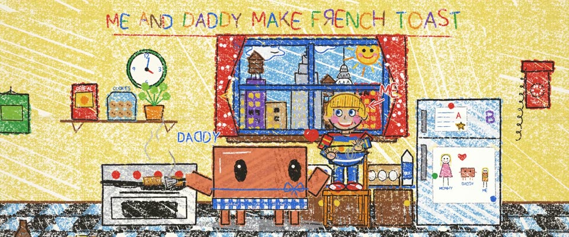
No.52 · 1979 《克莱默夫妇》 Kramer vs. Kramer — 2D 儿童蜡笔画
纹理纸上的蜡笔 · 6–8 岁儿童画的画法 · 手写标签
孩子用蜡笔画的厨房：歪扭的线、用力涂进纸纹又涂出边界的颜色、标签和箭头、带笑脸的太阳。这是比利眼里他和爸爸做法式吐司的样子。
风格提示词（中文）
认真的六到八岁孩子在白纸上画的蜡笔画。蜡笔只蹭到纸纹凸起；轻涂露出四到六成纸白，用力处填满；叠色时下层透出。轮廓用黑色或深棕蜡笔，蜡质、发抖，粗约画面宽的 1/300。填色是来回涂抹，每笔长约画面宽的 1/40、宽约 1/250，一排排涂、冲出轮廓，每块各有方向，间距和角度不均匀，不能排成规整的网。基础色：红 #E0382C、橙 #F28A1E、黄 #F7D23A、绿 #3AA345、蓝 #2E6BD8。儿童画惯例：地面线、压扁的透视、带箭头的标注、笑脸太阳、写反一个字母（中文写反一个偏旁）、图案一格格涂。文字用用户的语言、发抖的蜡笔笔画写，不用字体。镜头：先晃动近景，再平稳扫过全画。避免：大人式的工整画法、没细节的乱涂、均匀点状或网状肌理、平滑渐变。
Style prompt (EN)
A careful 6–8-year-old's wax-crayon drawing on white paper. Crayon catches the paper grain's peaks; light pressure leaves 40–60% paper showing, heavy pressure fills it; overlaps show through. Outlines in black or dark-brown crayon, waxy, wobbling, about 1/300 of frame width. Fills are back-and-forth scribbles, strokes about 1/40 of frame width long and 1/250 wide, rows overshooting the outlines, each area in its own direction, spacing and angle uneven, never a regular mesh. Primary box: red #E0382C, orange #F28A1E, yellow #F7D23A, green #3AA345, blue #2E6BD8. Child conventions: a ground line, flattened perspective, arrowed labels, a smiling sun, one mirrored letter (in Chinese, a reversed stroke), patterns coloured cell by cell. Text in the user's language, in wobbly crayon strokes, not a typeface. Camera: shaky close-ups, then a calm drift. Avoid: neat adult rendering, random scrawl, uniform stipple or mesh, smooth gradients.
镜头与导演（3 镜）
toast0.7s：第一次做的平底锅大特写：焦吐司、黑色蜡笔烟、蛋壳；手持抖动，慢慢拉开。toast20.4s：匹配剪辑到片尾的同一口锅，干干净净：一片金黄的吐司从锅里翻起来。still1.4s：标题“ME AND DADDY MAKE FRENCH TOAST”下父子并肩：Clawd 用锅铲接住吐司，比利笑开，冒出一颗红心，Clawd 得意地小跳一下；镜头往上漂到窗外的蜡笔天际线。
大片年代（1980–1989）· The Blockbuster Era
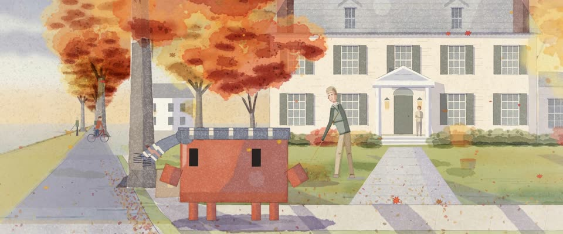
No.53 · 1980 《普通人》 Ordinary People — 2D 秋日透明水彩
透明水彩叠色 · Winslow Homer 与 John Singer Sargent · HB 铅笔底稿
层层叠色的透明水彩：湿画法的天空和湖面、水渍边线、回流花、留白的纸当高光，秋天的金和锈红配上冷灰蓝。对上影片开场那个安静又带点忧伤的 Lake Forest 秋天。
风格提示词（中文）
透明水彩，在冷压纸上一层层罩色。先把形状画清楚，再罩两三层，每层更小更深，干后边缘积成深一点的水渍线；每帧两三处回流花，约画面宽的 1/10，只在大块湿画里，不落在人物上；颗粒轻沉进纸纹（±4%）。纸是最亮的白，浅色物体和高光留纸。天空和水面湿画，涟漪干笔。分工：秋金 #ECAA34、猩红 #E46030、锈色 #B8743C 给树叶和点缀，对着冷灰蓝的雾 #C2C6D2 和紫灰阴影 #8A8496；天空任何时段都浅而冷；地面浅绿赭。树冠：先铺淡色，叠扇贝边叶团，点深色，甩散叶；树少时暖色给灌木、屋顶、衣服。光从一侧来。镜头缓慢横摇、轻推，落叶从镜头前飘过。对标 Winslow Homer 的水彩。避免：水粉式覆盖、喷枪模糊、矢量硬边、脏色、饱和晚霞。
Style prompt (EN)
Transparent watercolour in layered glazes on cold-press paper. Draw shapes crisply first, then two or three glazes, each smaller and darker, drying to a tide-mark edge; two or three blooms, about 1/10 of frame width, inside large washes, never on figures; light granulation (±4%). Paper is the brightest white; light objects and highlights left as paper. Sky and water wet-in-wet, ripples dry-brush. Roles: autumn gold #ECAA34, scarlet #E46030, rust #B8743C for foliage and accents, against grey-blue mist #C2C6D2 and violet-grey shadows #8A8496; sky pale and cool at any time of day; ground pale green-ochre. Foliage: pale wash, scallop-edged clusters, dark dots, flicked leaves; with few trees, warm colours go to scrub, roofs, clothes. Light from one side. Camera: slow pan, gentle push, leaves drifting past the lens. Reference: Winslow Homer's watercolours. Avoid: opaque gouache, airbrushed blur, vector edges, muddy colour, saturated sunsets.
镜头与导演（3 镜）
lake0.8s：黎明的密歇根湖空镜：灰蓝湖面上留白的太阳光路，镜头慢慢右摇到秋天的崖岸。still1.0s：枫树下的街道：扮康拉德的 Clawd 围着长条纹围巾、背着书包，在人行道上停下，回头看那栋白色殖民地式房子（卡尔文在院里耙叶），又垂下眼睛转开；镜头缓慢右移并略微拉开。porch0.7s：门廊上的贝丝抱着双臂，神情冷淡；镜头慢慢推近她。
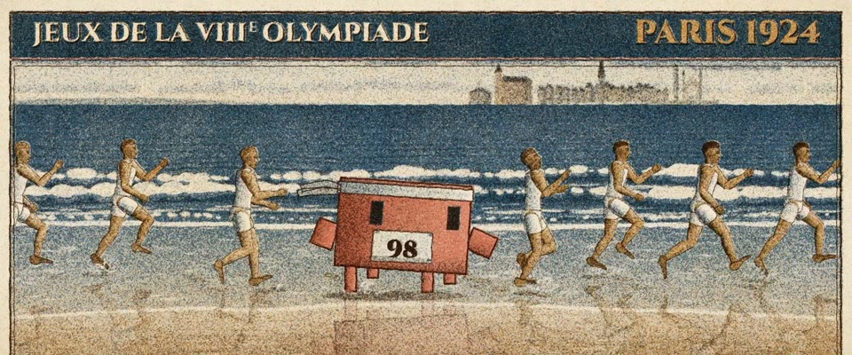
No.54 · 1981 《烈火战车》 Chariots of Fire — 2D 1924 巴黎奥运石印海报
四版石印 · Jean Droit 的 1924 奥运海报 · 古典解剖人体
仿 Jean Droit 1924 巴黎奥运海报的四色石印：古典人体、有限油墨、成团的石版颗粒、参差套色。《烈火战车》讲的是 1924 年奥运，海滩长跑像那张海报活了过来。
风格提示词（中文）
20 年代石版印刷海报，四色：海蓝 #245A8C、赭黄 #D49640、深棕 #40271B、暖红 #E47E62，印在泛旧的奶油纸 #F1E7D1 上，每色错位约画面宽的 1/700。所有色调都由油墨颗粒组成，不平涂：颗粒约画面宽的 1/1000，聚成软团，浅色区覆盖两到四成，中间调五到八成，实色几乎满版、留针孔；空白纸上不能有零散孤点。分工：蓝给天空、水和冷阴影；赭黄给地面和皮肤；深棕给轮廓、暗部和衣服；红少量点缀。明暗安静偏浅。人物古典：受光侧赭黄，四肢顺一道深棕明暗交界线，头约身高八分之一；多人排成横列。动作慢，靠水花、尘土、头发、布料带出。镜头：长焦正面、贴地低机位；可加衬线字标题横带。对标 Jean Droit 的 1924 年巴黎奥运海报。避免：粗噪点、象形小人、矢量平涂。
Style prompt (EN)
1920s stone lithograph poster in four inks: sea blue #245A8C, ochre #D49640, deep brown #40271B, warm red #E47E62, on aged cream #F1E7D1, misregistered about 1/700 of frame width. Every tone is ink grain, never a flat fill: specks about 1/1000 of frame width in soft clumps, covering 20–40% of pale areas, 50–80% of mid-tones, nearly all of solids (with pinholes); no stray specks on bare paper. Roles: blue for sky, water, cool shadow; ochre for ground and skin; brown for outlines, darks, clothes; red sparingly. Values calm and pale. Classical figures: ochre lit side, brown core-shadow line down each limb, head 1/8 of body; groups in a row. Slow motion carried by spray, dust, hair, cloth. Camera: long-lens front views, ground-level shots; optional serif title band. Reference: Jean Droit, 1924 Paris Olympics poster. Avoid: coarse speckle, pictogram figures, vector fills.
镜头与导演（4 镜）
faces0.7s：长焦正面：跑者队伍沿着浪边迎面跑来，Clawd 在其中，戴白头带、别着 98 号码布；镜头略微拉开。feet0.6s：贴地近景：赤脚踩进浅水溅起水花，湿沙上有倒影；镜头横向滑动。liddell0.5s：利德尔的近景：仰头张嘴，亚伯拉罕斯在他身后；镜头略微拉开。still0.8s：侧面看整队跑者，Clawd 在中间；镜头拉开时，“JEUX DE LA VIIIe OLYMPIADE · PARIS 1924”的海报字框印上画面。
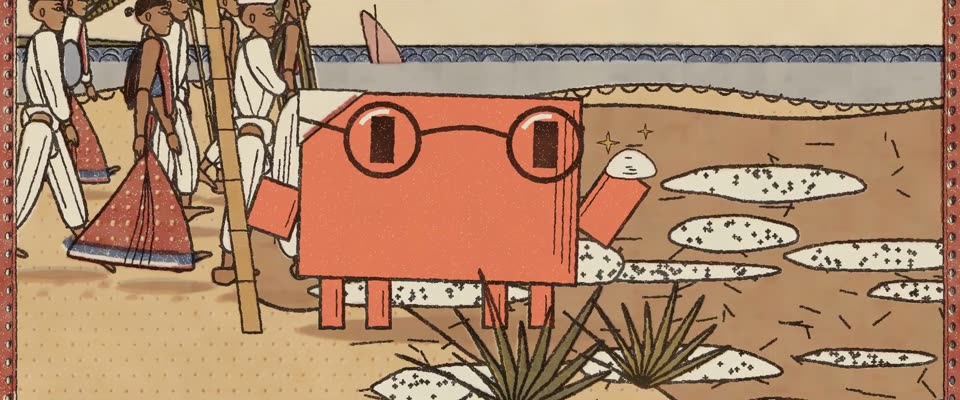
No.55 · 1982 《甘地传》 Gandhi — 2D 拉贾斯坦手工木刻印花布
Bagru 泥防染靛蓝 · Sanganer 木版印花边 · 拉贾斯坦细密画侧脸
棉布上的手工木刻印花：靛蓝、茜草红、姜黄加黑色雕版轮廓，版缝处套色错位，染料顺着经纬渗开。手纺土布是甘地的象征，所以食盐进军就印成一块布。
风格提示词（中文）
拉贾斯坦手工木刻印花布（Bagru、Sanganer）。本色棉布 #EEE5CF 是主底，占画面一半以上，也是皮肤色；靛蓝 #2A3A68 给水面或天空色带和纹样；茜草红 #AA322A 给边框、衣服和主角；姜黄 #DEA42C 给小纹样；黑色雕版 #281E1C 印轮廓。按雕版一块块盖（每块约画面高的 1/8），错位二到四像素，大色带也在版缝处轻微跳变；染料顺经纬微渗，上色不匀。泥防染冰裂纹只在靛蓝里，细而稀疏。轮廓像刻出来的，略毛糙，粗约画面宽的 1/300。平铺成横幅，外框是佩斯利和花藤；海浪是扇贝纹；人物取侧面，细密画式的脸，描黑的眼尾。镜头沿横幅横摇、推近；借转动的纹样转场。避免：矢量硬边、套色完全对齐、没有五官的人、满屏冰裂纹、靛蓝铺满画面。
Style prompt (EN)
Hand block print on cotton, Rajasthan style (Bagru, Sanganer). Undyed cotton #EEE5CF is the ground, over half the frame, and the skin colour; indigo #2A3A68 for water or sky bands and patterns; madder red #AA322A for borders, clothing and the hero; turmeric #DEA42C for small motifs; black key block #281E1C for outlines. Stamp blocks about 1/8 of frame height, misregistered 2–4 px, tone jumping slightly at seams even in large bands; dye bleeds along the weave, fills unevenly. Mud-resist crackle only inside indigo, fine and sparse. Carved, rough outlines about 1/300 of frame width. Flat frieze in a paisley and vine border; waves as scallop rows; profile figures with miniature-painting faces, kohl-lined eyes. Camera: pan along the frieze, push in; cut on a turning motif. Avoid: vector edges, perfect registration, faceless figures, dense crackle, indigo flooding the frame.
镜头与导演（3 镜）
crowd0.8s：沿海边的队伍横摇：穿白土布的志愿者、穿靛蓝和茜草红纱丽的妇女、自治旗；Clawd 在队伍最前面入画。salt1.1s：中近景，镜头慢推：戴圆框眼镜、披土布披巾的 Clawd 弯腰捧起一把盐，举起来盐粒闪光，再转向队伍举得更高。wheel0.6s：村妇坐在纺车前纺线；镜头推向转动的纺车轮，接下一部。
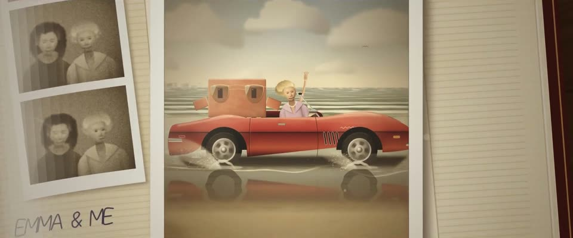
No.56 · 1983 《母女情深》 Terms of Endearment — 2D 家庭相册宝丽来
SX-70 与宝丽来 600 相片 · 柯达彩色快照 · 70–80 年代磁性相册 · 追拍拖影
摊开的家庭相册，里面是褪色的宝丽来和柯达快照：发青的黑、奶油色高光、白边。其中一张宝丽来活过来，变成海滩飞车的追拍照片。《母女情深》讲的是母女三十年。
风格提示词（中文）
70 到 80 年代的生活快照，摊开在相册里。照片已褪色：黑色抬成偏青的灰（约 #2F3A3A），高光柔和发奶油色，略暖、略过曝，偏软，细颗粒（±4%），饱和度约正常的六成。宝丽来白边、照相馆四连拍条、圆珠笔手写说明（用用户的语言）。相册铺满画面，奶油色页面，从正上方看，光柔和均匀，淡淡塑料膜反光。照片里有东西在动就用追拍：背景横向拖糊，主体清晰；静止主体用浅景深。人物像拍的不像画的：比例真实、明暗柔和、轻微虚焦、脸不大。镜头：俯拍推进一张照片直到铺满（约三秒），切进活起来的场景、颜色恢复，再拉出。对标宝丽来 SX-70 和柯达彩色照片。避免：平面卡通造型、干净的现代色彩、光束、饱和的照片。
Style prompt (EN)
1970s–80s snapshots in an open album. Faded dyes: blacks lifted to teal grey about #2F3A3A, creamy rolled-off highlights, mild warm cast, slight overexposure, softness, fine grain (±4%), saturation about 60% of normal. White Polaroid borders, photo-booth strips (four frames stacked), ballpoint captions in the user's language. The album fills the frame, cream pages seen from above in soft, even light, a faint plastic sheen. In a photo, a moving subject gets a panning-shutter look (background smeared sideways, subject sharp); still subjects get shallow depth of field. People look photographed: real proportions, soft shading, slight blur, small faces. Camera: an overhead push into one photo until it fills the frame (about 3 s), a cut into the living scene as colour returns, then a pull-back. References: Polaroid SX-70, Kodacolor prints. Avoid: flat cartoon shapes, crisp modern colour, light shafts, saturated prints.
镜头与导演（3 镜）
album1.2s：俯拍胡桃木桌上摊开的相册，一路推进那张散放的加尔维斯顿宝丽来，直到照片铺满画面。beach0.8s：宝丽来活了过来：红色科尔维特冲过浪花，副驾的奥罗拉挥着手，颜色慢慢回来；镜头拉开到更宽的海滩。close0.5s：近景：戴金色飞行员墨镜的 Clawd 扮加勒特，在座位后站起来张开双臂；镜头慢推。
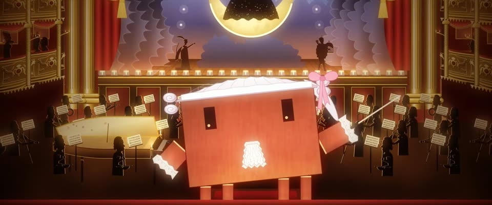
No.57 · 1984 《莫扎特传》 Amadeus — 2D 洛可可剪影 · 烛光金色歌剧院
18 世纪剪影肖像 · 洛可可金色浮雕 · 烛光泛光 · 申克尔的星空布景
黑纸剪成的侧面人像镶着金边，坐满马蹄形的金色包厢和红丝绒，对着星空布景的舞台。《莫扎特传》的高光是首演之夜，一个画面装下乐池、舞台、观众和暗处的萨列里。
风格提示词（中文）
18 世纪剪纸剪影，放在烛光照亮的洛可可室内。每个人物是实心黑侧影 #0B0705，各有自己的剪纸细节（发型、鼻子、蕾丝镂空、物件），朝最近烛火的一侧描 2–3px（按 1920×1080）亮金边 #F7E3A0，顺衣褶勾几根细金线。金色浮雕 #B88A2E 和红丝绒 #6E0F14 像包厢一样框住画面；户外题材画成舞台上被照亮的布景，剪纸人物站在布景前。红与金占画面大半，夜蓝 #0C1A3A 只用于远处天空。只有主角侧影里的脸是画出来、有颜色的。烛火轻微跳动（亮度±5%），暖光晕约五个火苗宽，薄烟、暗角、细颗粒。招牌镜头：前景剪影框住远处亮着的舞台，慢横移再推进。对标剪影 Edouart、Miers，摄影师 Miroslav Ondříček（《莫扎特传》，1984）。避免：没有剪纸细节的黑块；复制粘贴的侧影；蓝色墙面；频闪的烛火。
Style prompt (EN)
18th-century cut-paper silhouettes. Each figure: a solid black profile #0B0705 with its own cut detail (hair, nose, lace holes, props), a 2–3 px pale-gold rim #F7E3A0 (at 1920×1080) toward the nearest flame, and hairline gold lines along clothing folds. Gilt relief #B88A2E and red velvet #6E0F14 frame the scene like an opera box; an outdoor subject becomes a lit painted backdrop on a stage, cut-paper figures in front. Reds and golds fill most of the frame; night blue #0C1A3A only for the far sky. Only the hero gets a painted, coloured face. Candles flicker gently (±5%), warm halos about five flames wide; light haze, vignette, fine grain. Signature shot: silhouettes framing a bright stage far back; slow lateral glide, then push. References: silhouettists Edouart, Miers; cinematographer Miroslav Ondříček (*Amadeus*, 1984). Avoid: plain black blobs; copy-pasted profiles; blue walls; strobing flames.
镜头与导演（2 镜）
pit1.6s：沿着烛光乐池横移到挥棒指挥的 Clawd，再越过它升起、后拉，落到星空舞台上，夜后抬臂唱高音。box0.9s：硬切到萨列里的暗包厢：一排剪影里只有他的脸是画出来的，被一支蜡烛从下面照亮；缓慢推进。Clawd 不在画面里。
No.58 · 1985 《走出非洲》 Out of Africa — 3D 3D 双翼机飞越东非裂谷
three.js 实时 3D · David Watkin 的航拍 · 暖调胶片调色 · 实例化的火烈鸟群
实时 3D 的低空飞行：铬黄色双翼机掠过苏打湖，上万只火烈鸟惊起，琥珀色薄雾光。这部片最被记住的就是丹尼斯带凯伦飞越肯尼亚，和她向后座伸出的那只手。
风格提示词（中文）
实时 3D，像 80 年代宽银幕实景摄影：模型按真实比例、细节到位（如支柱、拉线、铆钉）；地形平滑，不要低多边形碎面。默认光：从镜头看，低斜的太阳在主角身后（逆光），奶油色淡天空，琥珀薄雾，远山分三四层渐淡，赭黄大地上长长的柔影。整体明亮：七成画面在中高调，阴影暖灰不深褐；近白不超过五分之一。胶片曲线、低饱和、细颗粒、轻暗角。上千只实例化的鸟或动物（如粉 #F3B3AE 配深红 #DF3F55），主角经过时一波波错开起飞或散开。招牌镜头：越过移动中主角的肩膀看远景；其次是离地 10–20 米的追拍和一个对着太阳的逆光镜头。对标摄影师 David Watkin（《走出非洲》，1985）。避免：冷而干净的 CG 日光；发暗的棕褐调；整齐划一的鸟群。
Style prompt (EN)
Real-time 3D like 1980s widescreen location photography: true-scale models with fine detail (e.g. struts, wires, rivets); smooth terrain, not low-poly. Default light: late-afternoon sun low behind the hero as seen from camera, pale cream sky, amber haze, distant ridges in 3–4 paler layers, ochre ground with long soft shadows. Pale overall: about 70% of the frame in light mid-tones, shadows warm grey, not deep brown; under a fifth near-white. Grade: filmic curve, low saturation, light grain, soft vignette. Thousands of instanced birds or animals (e.g. pink #F3B3AE with crimson #DF3F55) lift or scatter in staggered waves as the hero passes. Signature shot: over the moving hero's shoulder across open land; then a high chase 10–20 m up and one shot into the sun. Reference: cinematographer David Watkin (*Out of Africa*, 1985). Avoid: cold clean CG daylight; dark sepia; lockstep flocks.
镜头与导演（3 镜）
flamingos0.8s：贴着湖面仰拍追机：黄色双翼机从头顶掠过，Clawd 小小地坐在前座探身往外看，火烈鸟从水面腾起掠过镜头。backlit0.7s：硬切到正对太阳的逆光全景：飞机迎面飞来，两侧是正在升起的粉色鸟群。cockpit1.0s：从后座往前的机上镜头：戴皮飞行帽、黄铜护目镜、白丝巾在风里飘的 Clawd 转身向后伸手，丹尼斯戴手套的手握住它。
No.59 · 1986 《野战排》 Platoon — 2D 越战随军速写 · 钢笔淡彩
快速钢笔线 · 透明淡彩 · 速写本纸 · 美国陆军越战战地艺术计划
快而有力的钢笔线，橄榄绿、土黄、烟灰和火光橙的淡彩，速写本纸四边留白。像随军画家在现场画下的，贴近这部片从步兵眼里看越战的视角。
风格提示词（中文）
现场报道式钢笔淡彩速写。钢笔用暖黑，线宽约画面宽度的 1/600，快而肯定，收笔甩出，转角冲出头；暗部用快速排线和折线，人物和地面都排线。淡彩透明而大胆：边缘湿软、有回流花、深浅不匀（不要硬边多边形），铺满画面约七成，整体错开线稿 2–4px（按 1920×1080）。颜色：橄榄绿 #70783E、土黄 #CEA054、烟灰 #706C70，加一个热烈点缀色 #F0822E 给天空和光源；肤色用淡土黄；暖米色速写本纸 #F2ECDE。只有最亮处、四边窄条和笔刷漏掉处留纸，纸纹很轻。角落用用户的语言潦草写一句铅笔速记（地点、时间、天气），字高约画面 1/40。分层便于横移；换视角硬切，像翻页。对标美国陆军越战战地艺术计划（1966–70）。避免：插画式精修；空着的纸；发脏的淡彩；重噪点。
Style prompt (EN)
Reportage pen-and-wash field sketch. Pen: warm black, fast confident lines ~1/600 of frame width, flicked ends, overshooting corners; quick hatching and zigzags for shadow, on figures and ground. Bold transparent washes with soft wet edges, blooms and uneven pigment (not flat polygons) cover about 70% of the frame, shifted 2–4 px (at 1920×1080) off the line. Colours: olive #70783E, ochre #CEA054, smoke grey #706C70, one hot accent #F0822E for sky and light sources; skin in diluted ochre; sketchbook paper #F2ECDE. Bare paper only in highlights, a thin edge band and brush gaps; light grain. A scrawled pencil note (place, time, weather) in a corner, 1/40 of frame height, in the user's language. Layer for lateral tracks; hard cuts like turning a page. Reference: US Army Vietnam Combat Artists Program (1966–70). Avoid: polished finish; empty page; muddy washes; heavy noise.
镜头与导演（3 镜）
jungle0.8s：横移跟着在象草里前进的巡逻队；戴丛林帽、挂狗牌的 Clawd 站在中间，士兵从它身边走过。heli0.8s：硬切到从休伊直升机舱门往下看：燃烧的着陆区、被旋翼压平的草和直升机自己的影子，Clawd 小小地站在空地上；镜头缓慢拉远。still0.9s：硬切到 Clawd 的近景，拉回海报构图：它在凝固汽油弹的橙色火光下双臂张成 V 字，两侧士兵跑过，直升机拉起离开。
No.60 · 1987 《末代皇帝》 The Last Emperor — 2D 工笔重彩 · 绢本宫廷画
工笔重彩 · 界画 · 清代宫廷画卷 · Storaro 的色彩
绢本上的铁线描和层层渲染的石青、石绿、朱砂、泥金，界画的宫殿，几千名跪拜的百官。小皇帝的登基是清宫仪典，就用清宫画师记录仪典的画法来画。
风格提示词（中文）
绢本工笔重彩（清代宫廷画法）。由远到近画，每个形：平涂底色 → 分染（沿下缘和被遮处加深）→ 均匀铁线描（深褐，线宽约画面 1/900）→ 提金、提白；最后全画面叠三成浓度的暖赭罩染，线仍清楚。矿物色：朱砂 #C23A22、石青 #2C5A9A、石绿 #3A8A6A、藤黄 #E8B830、泥金 #CAA04A，被罩染压稳；地面和天空是中等明度的暖赭绢色，不要近白，不画饱和蓝天和橙色落日，时段变化只靠整体冷暖。不画投影和眩光。水用细线水纹。建筑用界画，瓦片一片片画出；有人群时人人不同，单人也行。绢纹淡（±3%），褐色暗角。一点透视、左右对称，大人物在前，身后深远规整。缓推。对标清代宫廷长卷，如《康熙南巡图》。避免：复制粘贴人物；不分染的平涂；写意水墨；海报式饱和色。
Style prompt (EN)
Chinese gongbi zhongcai (fine-line, heavy-colour court painting) on aged silk. Far to near, each form: flat base, a wash darkening its lower, overlapped edges, an even iron-wire outline (dark brown, ~1/900 frame width), gold and white lifts. Last, a 30% warm ochre glaze over everything, lines still clear. Minerals: cinnabar #C23A22, azurite #2C5A9A, malachite #3A8A6A, gamboge #E8B830, gold #CAA04A, muted by the glaze; ground and sky mid-value warm silk ochre, never near-white, saturated blue or orange; time of day shows only as overall warmth. No cast shadows or glare. Fine-line water ripples. Ruled-line architecture, every tile drawn; crowds all differ; a lone figure works. Faint silk weave (±3%), brown vignette. Symmetrical one-point composition: a large figure before a deep, ordered space. Slow pushes. Reference: Qing court scrolls, e.g. *Kangxi's Southern Inspection Tour*. Avoid: copy-pasted figures; unwashed flat fills; loose ink wash; poster saturation.
镜头与导演（3 镜）
curtain1.0s：绣着团龙的黄色绸帘占满画面，帘子分开，戴红缨朝冠的 Clawd 走上丹陛；镜头微微后拉。officials0.6s：硬切到低机位横移，扫过跪着的百官，一排排穿补服的官员波浪般叩首。still0.9s：硬切到海报构图并慢慢拉宽：Clawd 大大地站在丹陛上，身后是跪满百官的广场和金色重檐，前景是蝈蝈罐。
No.61 · 1988 《雨人》 Rain Man — 2D 80 年代喷枪插画 + 雷蒙的计数
80 年代喷枪插画 · Patrick Nagel 式人物 · 空山基式镀铬 · 工程图标注
平滑的喷枪渐变、硬边遮罩、镀铬高光和粉绿霓虹，叠一层细细的青色计数标注。80 年代画风配上雷蒙眼里的世界：82、82、82，共 246 根牙签，还有牌桌算牌。
风格提示词（中文）
80 年代喷枪插画，叠一层工程制图标注。每个形是硬边遮罩里喷出的平滑渐变，边缘 1–2px（按 1920×1080）细飞沫。明亮高调：薄荷绿 #79BDA6 的墙或天空、奶油白，霓虹粉 #F58CB5 和品红 #C9467F 点缀，地面铺黑白棋盘格；紫色和夜色不超过两成，其他时段仍是薄荷绿奶油底，晚霞用粉色画。人物学 Patrick Nagel：苍白平整的皮肤、少而利落的线、成块深色头发，粉与薄荷绿轮廓光，但保留本人的年龄衣着。金属玻璃学空山基镀铬：天空色带、硬地平线、十字星光。最上层是细青色标注 #56E6FF、白字 #D9FBFF（字高约画面 1/40）：圆点引线、虚线圈组、尺寸线；像《雨人》的雷蒙，等宽数字数故事里要数的东西，圈一组滚一次。慢推或慢拉。避免：合成波式的条纹太阳；UI 框；发糊的边。
Style prompt (EN)
1980s airbrush illustration with a drafting overlay. Every shape: a hard-edged mask filled with a smooth sprayed gradient, 1–2 px overspray rim (at 1920×1080). Bright, high-key: mint #79BDA6 walls or sky, cream, neon pink #F58CB5 and magenta #C9467F accents, black-and-white checker floor or ground; purple and night under 20%; at other times of day keep mint and cream; pink carries any sunset. Figures à la Patrick Nagel (flat pale skin, few crisp lines, dark hair masses, pink and mint rim light), keeping their own age and dress. Metal and glass in Hajime Sorayama chrome: banded sky reflection, hard horizon line, cross-star glints. Overlay: thin cyan callouts #56E6FF, near-white text #D9FBFF (1/40 frame height), dotted leaders, dashed rings, dimension lines; monospace numbers count whatever the story counts, Rain Man style, as each group is circled. Slow push/pull. Avoid: synthwave suns; UI boxes; soft edges.
镜头与导演（3 镜）
toothpicks1.0s：俯拍黑白格的餐馆地面：撒了一地的牙签一堆堆被圈出来，数字滚动计数，镜头缓慢拉远，让顶上的 246 进画。raymond0.8s：硬切到 Clawd 的中近景：格子衬衫领、胸袋里一排笔，歪着头看地上标着 82 的牙签堆，头越歪越低；镜头缓慢拉远。cards0.7s：硬切到拉斯维加斯的 21 点牌桌，越过荷官肩膀拍：牌从牌靴里飞出，旁边跳出 Hi-Lo 标记和累计点数；Clawd 坐在 Nagel 式女人和查理之间。
No.62 · 1989 《为黛西小姐开车》 Driving Miss Daisy — 2D 洛克威尔式油画插画
诺曼·洛克威尔油画插画 · 《星期六晚邮报》封面 · 3D 建模的车再铺油画笔触
扎实温暖的洛克威尔写实：边缘干净、笔触可见，午后阳光穿过橡树，邻居各忙各的。这部片就是 50 年代亚特兰大一辆车里的两个人，本身就像一张《星期六晚邮报》封面。
风格提示词（中文）
洛克威尔式 50 年代美国杂志封面油画。人物接近写实：头约占身高 1/7，脸和手用三四块明暗面塑出、不靠描线，表情读得出。塑形平滑，笔触隐约：宽约画面 1/150，顺形体走，每笔与底色只差±5%。默认光：左上方暖色午后阳光，地上有清楚的投影和树影，阴影冷蓝灰；别的光也保持暖主光冷阴影。中等饱和：奶油天空 #E6DCC2、砖红 #9A4A38、叶绿、瓶绿 #1F3A24、柔和肤色。光面映出环境。背景有小故事：有人处路人各忙各的，主角独处就靠物件。轻画布纹、暖光油、柔和暗角。镜头：有纵深的四分之三全景缓推，越切越近，落在手或脸上。对标洛克威尔 1940–50 年代《星期六晚邮报》封面。避免：卡通脸；重纹理滤镜；无笔触的数码平涂；空背景。
Style prompt (EN)
Norman Rockwell-style mid-century magazine-cover oil illustration. Near-realistic figures: head about 1/7 of body height, faces and hands modelled from 3–4 value planes, not outlines; readable expressions. Smooth modelling; faint strokes about 1/150 of frame width, following form, each within ±5% of the colour beneath. Default light: warm afternoon sun from the upper left, clear cast and dappled shadows in cool blue-grey; other light keeps a warm key and cool shadows. Palette: cream sky #E6DCC2, brick red #9A4A38, leaf greens, bottle green #1F3A24, soft skin. Gloss reflects surroundings. Background storytelling: busy bystanders where there are people, telling objects when the hero is alone. Light canvas texture, warm varnish, soft vignette. Camera: deep three-quarter wide, slow push, closer cuts ending on a hand or face. Reference: Rockwell's *Saturday Evening Post* covers (1940s–50s). Avoid: cartoon faces; texture filters; flat digital shading; empty backgrounds.
镜头与导演（3 镜）
still0.9s：墨绿色 1949 年哈德逊的四分之三前侧，车沿着橡树成荫、红砖房和白门廊的街道慢慢开来；戴司机帽的 Clawd 握着方向盘，黛西小姐板着脸坐在后窗里；缓慢推进。inside0.8s：硬切到后座往前拍的定机位：前景是黛西小姐的大侧脸，后面是开车的 Clawd 的背影，街景从车窗外流过。close0.8s：硬切到后视镜特写，也就是海报构图：左边是帽檐下 Clawd 的眼睛，右边是黛西小姐，慢慢露出一点笑；镜头轻推。
世纪末（1990–1999）· End of the Century
No.63 · 1990 《与狼共舞》 Dances with Wolves — 2D 邓巴日记 · 铅笔 + 透明水彩
铅笔底稿 · 透明水彩 · 铁胆墨水手写 · Bodmer、Catlin 的野外水彩
一个军人的野外日记：轻重有变化的铅笔线、透明水彩、泛黄的布浆纸、墨水手写和页边的铅笔批注。邓巴在片中一直写画日记，所以草原是从他的速写里活过来的。
风格提示词（中文）
一本活过来的 19 世纪野外日记：看得见铅笔线的满幅透明水彩。铅笔底稿 #3A363A 有轻重和断笔，暗部轻排线，透过颜色仍读得出。水彩边缘湿软，有回流花、积色深边和颗粒（不要平涂多边形），铺满约八成画面，浓郁偏暖。默认魔幻时刻：灰玫瑰色天空 #C88F76 往上转淡紫，玫瑰色条云，低太阳，赭金大地 #DEBE87，远处紫，长投影；朝太阳的边缘点几笔不透明浅金。泛黄布浆纸 #F0E4C8，淡水渍霉斑，纸色透出来。铁胆墨水 #34221C 写小字草书标注和箭头。招牌动作只在开头约两秒：先只有铅笔，镜头推进时颜色从远到近一块块铺上；之后每帧满彩。对标 Karl Bodmer、George Catlin 的野外速写。避免：灰脏或发白的淡彩；均匀数码描边；开头后仍只有铅笔。
Style prompt (EN)
A 19th-century field journal come to life: full-colour watercolour over visible pencil. Pencil under-drawing #3A363A, pressure-varied and broken, lightly hatched in shadow, readable through the washes. Brushed washes with soft wet edges, blooms, pooled rims and granulation (not flat polygons) cover about 80% of the frame in rich warm colour. Default magic hour: dusty-rose sky #C88F76 turning lavender above, streaky rose clouds, low sun, ochre-gold land #DEBE87, violet distance, long shadows, opaque pale-gold lifts on sun-facing edges. Yellowed rag paper #F0E4C8, faint stains and foxing, showing through. Iron-gall ink #34221C for small labels and arrows. Signature move, once at the opening (about 2 s): bare pencil, then colour arrives wash by wash, far to near, during a push-in; after that, full colour. References: Bodmer and Catlin field sketches. Avoid: grey, muddy or pale washes; uniform digital outlines; later pencil-only frames.
镜头与导演（2 镜）
page1.2s：推近日记的右页：Clawd 的自画像和狼「双袜」一开始只是铅笔底稿，水彩一笔笔铺上来，先是天空，最后才是 Clawd。prairie1.3s：切到活成满幅彩色的日落草原：一个推镜从平原推到对望的 Clawd 和双袜，身后野牛群奔过；Clawd 抬帽致意。
No.64 · 1991 《沉默的羔羊》 The Silence of the Lambs — 2D 手工上色的博物学铜版画
铜版雕刻排线 · 手工上色 · 维多利亚昆虫学图版 · Moses Harris《The Aurelian》
细密的铜版排线和点刻，上面薄薄地手工上色，图版编号和拉丁文标签印在泛黄的纸上。海报上的鬼脸天蛾本就该钉在标本图版上，同样冷峻的铜版画法一直延伸到莱克特的囚室。
风格提示词（中文）
手工上色的博物学铜版画。所有物体用暖黑褐刻线画：密集平行线和交叉排线（线距约画面宽度 1/400，暗处线更粗），柔和过渡用点刻，物下有排线投影；天空留纸色或只几道稀疏横线。线内平涂水彩，中等饱和、颜色认得出：纸 #EFE3C4、赭褐 #5A3A22、铁锈红 #B4431E、黄 #E6AD24、灰紫 #7D6F8E。图版：主体作图 1 居中，约占版面高六成，四周 3–6 个编号小图（局部或相关物件），各约五分之一高；上方字距拉开的小型大写标题，下方编号图注，压印斜边版框，淡霉斑。默认均匀日光，时段变化只调着色冷暖；暗室内转冷，侧面硬光。镜头：静止图版里只有一样东西在动（虫、叶、手），再匀速慢推到关键细节。对标 Moses Harris《The Aurelian》（1766）。避免：平滑渐变；刺眼的颜色；主体缩成小晕影。
Style prompt (EN)
A hand-coloured natural-history copperplate. Every object in engraved warm black-brown line: dense parallel and cross-hatching (spacing about 1/400 of frame width, thicker in darks), stipple for soft tones, hatched shadows beneath; sky bare or sparsely lined. Flat watercolour tints inside the line, medium saturation, clearly coloured: paper #EFE3C4, umber #5A3A22, rust #B4431E, yellow #E6AD24, grey-violet #7D6F8E. Plate: the subject as Fig. 1 in the centre, about 60% of plate height, 3–6 numbered part or object figures around it, each about 1/5 high; spaced small-caps title, numbered legend, bevelled plate mark, light foxing. Even daylight; time of day only shifts the tints' warmth; dark interiors go cold, hard side light. Camera: a still plate where one thing moves (insect, leaf, hand), then a slow push to a key detail. Reference: Moses Harris, *The Aurelian* (1766). Avoid: smooth gradients; garish colour; a tiny vignetted subject.
镜头与导演（2 镜）
plate0.9s：整张昆虫学图版「Acherontia styx」：一只活的鬼脸天蛾从茄科植物上飞起，落在 Clawd 头顶；镜头轻推。cell1.6s：硬切到地下监区：别着 FBI 学员证的 Clawd（克拉丽丝）站在玻璃前；接着一个连续的推镜向右、向里推，直到莱克特的脸占满画面，嘴角露出一丝笑。
No.65 · 1992 《不可饶恕》 Unforgiven — 2D 雷明顿西部油画 · 晚霞与雨夜
雷明顿的暖色平原 · 雷明顿晚年的夜景 · 厚涂油彩 · 开场字幕的剪影
两种调子的厚涂西部油画：雷明顿金红晚霞下的平原，和他晚年被暖黄窗光点亮的蓝绿夜景。《不可饶恕》以夕阳下坟前的剪影开场和收尾，决战发生在雨夜的小镇。
风格提示词（中文）
弗雷德里克·雷明顿式西部油画。主调是晚霞，天黑透之前都用：橙到深红的金红天空用长横笔触，太阳压在地平线上，大地和人物是暗暖剪影，向阳一侧一道细暖轮廓光。第二种调子只在天黑透后用：蓝绿夜景（天 #17333A，月光边 #9CC4BC），暖黄窗光 #FFCC6A 铺在深色地面 #1E1C16 上，加雨。先画清楚的大形，再上笔触：每笔宽约画面宽度 1/80、长为宽的三到六倍，颜料饱满、笔端松散；每笔与底色明暗只差±6%，顺着各个面走。画布纹要轻。地平线低，天空占五到六成，人物小到中等。镜头：从剪影大全景慢推到人物。对标雷明顿晚年夜景画、摄影师 Jack N. Green（《不可饶恕》，1992）。避免：平滑渐变；硬边色带；打碎形体的满屏笔触；暖场景人物发灰；大幅横摇。
Style prompt (EN)
Frederic Remington-style Western oil painting. Primary register, for anything before full dark: sunset, a red-gold sky (orange into deep red) in long horizontal strokes, the sun on the horizon, land and figures dark warm silhouettes, thin warm rim sunward. Second register, only after dark: a blue-green nocturne (sky #17333A, moonlit edges #9CC4BC, warm window light #FFCC6A on dark ground #1E1C16, rain). Broad, readable shapes first, then loaded strokes about 1/80 of frame width wide, 3–6 times as long, soft broken ends, each within ±6% brightness of the colour beneath, following the surface. Light canvas texture. Low horizon, sky 50–60% of the frame, figures small to medium. Camera: one slow push from a silhouetted wide to the figure. References: Remington's late nocturnes; cinematographer Jack N. Green (*Unforgiven*, 1992). Avoid: smooth gradients; hard-edged flat bands; shattered shapes; grey figures in warm scenes; wide pans.
镜头与导演（2 镜）
grave1.4s：一个推镜从整片晚霞（木屋、风车、孤树、挡在太阳前的十字架）推到坟边的 Clawd（芒尼）；它抬起头，把步枪横到身前。town1.1s：硬切到雨夜的大威士忌镇：Clawd 骑一匹兔褐马走过泥街，旁边是亮着窗的 Greeley's 酒馆，镜头推向它滴水的帽檐。
No.66 · 1993 《辛德勒的名单》 Schindler's List — 2D 黑白胶片 · 唯一的红大衣
高反差黑白胶片 · 粗颗粒银盐 · 局部留色 · Janusz Kamiński
冷灰、高反差的黑白，粗颗粒，高光晕开；只有小女孩的红大衣和 Clawd 的橙色有颜色。这正是斯皮尔伯格的手法：红大衣和安息日烛火是全片仅有的彩色。
风格提示词（中文）
黑白电影质感：冷中性灰，强 S 曲线（黑接近 #111，白接近 #EEE），高光在雾里泛光晕，略软的老镜头，逐帧变化的银盐颗粒（±6%），轻微闪烁，偶有灰尘，暗角。全画面是灰的，只有故事围绕的那个主角是饱和色，以衣服为主（如陶土橙 #D97757）；可再有一个红色故事道具（#A3241F–#C9463C）。灯和火保持灰色，除非“火苗先灰后转暖”是剧情节点。长焦压缩空间，前景虚焦树枝；有人群时，体型、衣色和步态人人不同。默认阴天中间调，暗部不死黑。招牌镜头：长焦俯看许多走动的小人，带色的那个在其中；没有人群就让主角很小地落在大片灰里。对标摄影师 Janusz Kamiński（《辛德勒的名单》，1993）。避免：棕褐或偏蓝调色；无颗粒的干净灰；超过两样有颜色的东西。
Style prompt (EN)
Black-and-white film look: cold neutral greys, a strong S-curve (blacks near #111, whites near #EEE), highlights haloing in haze, a soft old lens, silver grain re-rolled every frame (±6%), slight flicker, rare dust, vignette. Everything is grey except the one hero the story centres on, saturated, mainly clothing (e.g. terracotta #D97757); optionally one red story object (#A3241F–#C9463C). Lamps and fires stay grey, unless a flame turning from grey to warm is the story beat. Long-lens compression, soft foreground branches; in a crowd, no two people alike in build, tone or gait. Default: overcast mid-key, shadows open. Signature shot: high long-lens view of many small walking figures, the coloured one among them; without a crowd, the hero tiny in wide grey space. Reference: cinematographer Janusz Kamiński (*Schindler's List*, 1993). Avoid: sepia or blue toning; grain-free greys; more than two coloured things.
镜头与导演（4 镜）
hill0.7s：山坡上骑着深色马的 Clawd（辛德勒），坡下的街道挤满被驱赶的人群，人群里有一个红点；镜头轻推。pov0.6s：硬切到辛德勒的长焦主观镜头，跟住独自走在人群空当里的红大衣小女孩。street0.6s：硬切到街面：横移镜头和小女孩同速，三排人从店铺前往左走，一件虚焦的大衣从镜头前掠过。candles0.6s：硬切到黑暗里的两支安息日蜡烛：火苗先亮成灰白，再变成彩色；缓慢推进。Clawd 不在画面里。
No.67 · 1994 《阿甘正传》 Forrest Gump — 2.5D 立体书 · 真实书桌上的纸艺
Robert Sabuda 立体书结构 · 水彩、彩铅印刷质感 · three.js 纸卡 · 物理景深
平行折立起来的印刷卡片，白色纸芯、灰色纸板边、层与层之间的投影和浅景深，放在胡桃木书桌上。阿甘坐在长椅上把一生讲成故事，翻开一页就立起一段经历。
风格提示词（中文）
一本放在书桌上实拍的立体书。每个元素是平的模切卡片，靠平行折立在打开成 90° 的背景页前，印着透明水彩和带纸纹的彩铅排线，切口露出白纸芯和灰纸板边。默认光：左上方窗户进来的明亮日光，层间柔和投影。卡面（天蓝、暖沙、绿）和房间都保持日光，故事在任何时段都一样；时段只画在印刷画面里（如低太阳、夜空）。胡桃木书桌 #6B3E1E，后面的房间虚成暖色柔光。物理景深，焦点在主角那层。招牌镜头：高机位四分之三角度看整个跨页。一个连续镜头：钻进一页、拉远到整本书、翻页代替剪辑、再推进下一跨页。对标 Robert Sabuda、Matthew Reinhart 的立体书。避免：像实心模型的卡片；昏暗压抑的房间；卡通脸。
Style prompt (EN)
A real pop-up book filmed on a desk. Every element: a flat die-cut card on parallel folds before a 90° backdrop page, printed with transparent watercolour and grainy coloured-pencil hatching; cut edges show a white core and grey board. Default light: bright window daylight from the upper left, soft shadows between layers. Print colours (sky blue, warm sand, greens) and room light stay daylight whatever the story's time of day; that time appears only in the print (e.g. a low sun, a night sky). Walnut desk #6B3E1E; the room a warm blur. Physical depth of field, focus on the hero's layer. Signature shot: a high three-quarter view of the whole spread. One continuous move: dive into a page, pull back, turn the page instead of cutting, push into the next spread. References: Robert Sabuda, Matthew Reinhart. Avoid: solid-looking cards; dark moody rooms; cartoon faces.
镜头与导演（1 镜）
one5.0s：一镜到底：书桌上合着的书翻开，萨凡纳的广场立起来；镜头跟着一根飘落的白羽毛降到长椅，Clawd 把巧克力递给护士；拉远、翻页，推进到纪念碑谷的 US-163，戴红帽的 Clawd 领着一群胡子拉碴的跟跑者跑近、停下、转身面对他们；再拉远、翻页，推进到闪电交加的暴风雨里的捕虾船「珍妮号」。
No.68 · 1995 《勇敢的心》 Braveheart — 2D 泥金手抄本 · 贴金细密画
《凯尔经》编结纹 · 哥特细密画（摩根圣经） · 《鲁特雷尔诗篇》页边画 · 磨光金箔
一页中世纪手抄本：带冲压点的磨光金箔、青金石蓝、朱红、哥特体字，中间一幅窗口似的战役细密画。《勇敢的心》是苏格兰传奇，片尾那声 FREEDOM 做成泥金首字母。
风格提示词（中文）
一页泥金装饰手抄本，取局部或双页填满画面。羊皮纸 #ECDCB4、褐色墨线 #2A1A10、青金石蓝 #27469A、朱红 #C43A20，加抛光金箔：石膏底隆起，有打孔小圆点花，一道烛光高光只在金上慢慢扫过。细密画背景多为金箔（夜景用青金石底加金星），金至少占画面一成。哥特式人物平涂加墨线。凯尔特编结纹、常春藤边框、页边怪诞小兽；正文写故事（拉丁文或用户的语言），宽头笔哥特体，红蓝行尾线，一个大金首字母。版式：细密画如一扇窗，约占半页，旁为文字栏；窗后分层，推进出视差；人物可破框。左上暖烛光，褐色暗角，淡颜料颗粒。对标《凯尔经》、摩根圣经、勒特雷尔诗篇。避免：平涂黄色代替金箔；现代字体；人脸上的高光。
Style prompt (EN)
An illuminated manuscript page (cropped, or an open spread) filling the frame. Vellum #ECDCB4, brown ink outlines #2A1A10, lapis #27469A, vermilion #C43A20, burnished gold leaf on raised gesso, with punched dot rosettes; a slow candle glint sweeps the gold only. Miniature backgrounds are mostly gold (night: lapis with gold stars); gold fills at least a tenth of the frame. Gothic figures in flat colour and ink outline. Celtic interlace, ivy borders, marginal grotesques; the story's text (Latin or the user's language) in broad-nib textura, red-and-blue line fillers, one large gilded initial. Layout: the miniature a window about half the page beside the text column, layered for parallax on pushes; figures may break out. Warm candle from upper left, brown vignette, pigment grain. References: Book of Kells, Morgan Bible, Luttrell Psalter. Avoid: flat yellow for gold; modern typefaces; glints on faces.
镜头与导演（4 镜）
initial0.7s：泥金首字母 F 的特写，字腔里是半边脸涂着蓝色 woad 的华莱士，一道金光扫过金箔。still0.6s：硬切到整页：REEDOM、哥特体正文、页边，中间是斯特林桥细密画，Clawd 冲在最前面；镜头轻推。bridge0.6s：硬切进细密画：英格兰兵挤过木桥，一名披方格马衣的骑士冲来，河里有人在挣扎。close0.6s：硬切到 Clawd 的近景：它举起双手大剑迎向骑士的骑枪，头顶的说话卷轴展开，写着 freedom。
No.69 · 1996 《英国病人》 The English Patient — 2D 探险家剪贴本水彩
透明水彩 · 钢笔笔记和手写 · 剪贴拼贴：胶带、照片、地图 · 琥珀褐调色
贴在旧书里的水彩速写，夹着地图、照片、便条和压花，整体是海报的琥珀褐。艾玛殊那本塞满画和笔记的希罗多德是全片的框架，镜头就穿过一张水彩进入游泳者洞穴。
风格提示词（中文）
旅人的剪贴本铺满画面，从边到边挤满 6–10 样互相压叠的东西，有的伸出画框：胶带贴的水彩画（主画面，约占四成）、手绘地图、深褐老照片、印刷页、手写便条、压花；每样带柔影和泛黄胶带。水彩画：湿中湿铺色，受光面暖赭，暗面是硬边紫玫瑰色，钢笔勾轮廓，积色边，明暗对比清楚。配色：琥珀纸 #E8D6B0、深褐 #6B4A2E、赭 #D08A3C、紫玫瑰 #9C6A86、墨 #2A1E16。画里：暗前景里一个暖光源（火把、灯）投下光池，外面是明亮的天。琥珀调色只轻压书页，画里保持干净不发脏；暗角约两成，纸纹淡。招牌动作：推进一张画，直到书页边缘从两侧滑出、人已在画里。对标摄影师 John Seale（《英国病人》，1996）。避免：平滑数码渐变；稀疏整齐的版面；书页还框着画时横摇。
Style prompt (EN)
A traveller's scrapbook, crowded edge to edge with 6–10 overlapping items, some running off frame: a taped watercolour (the main image, about 40% of frame), a hand-drawn map, a sepia photo, printed pages, handwritten notes, a pressed flower; each softly shadowed, with yellowed tape. The watercolour: wet-in-wet washes, warm ochre lights, hard-edged violet-rose shadows, pen contours, pooled edges, clear value contrast. Palette: amber paper #E8D6B0, sepia #6B4A2E, ochre #D08A3C, rose-violet #9C6A86, ink #2A1E16. Inside the painting: one warm source (torch, lamp) pooling in a dark foreground, bright sky beyond. Light amber grade on the page only, never muddying the painting; vignette about 20%, faint grain. Signature move: push into the painting until the page edges slide out. Reference: cinematographer John Seale (*The English Patient*, 1996). Avoid: smooth gradients; sparse tidy layouts; panning while a page frames the painting.
镜头与导演（3 镜）
push1.2s：剪贴本摊在桌上，一个推镜推进那张水彩，直到书页从镜头两侧滑出：Clawd 举着火把站在画里的游泳者洞穴中。wall0.6s：硬切到横移，扫过洞壁上的游泳人壁画，火光摇晃；Clawd 不在画面里。cave0.7s：硬切到 Clawd 一手火把一手书站在左边，旁边是壁画，洞口外是沙丘；镜头缓慢后移。
No.70 · 1997 《泰坦尼克号》 Titanic — 3D 蓝图显影成 3D 实景
船厂总布置蓝图 · 按真实尺寸建模的 three.js 船 · Russell Carpenter 的色彩 · 一镜到底
普鲁士蓝晒图纸上的白线立起来、长出透视，再显影成夕阳下全彩的 3D 船，一路入夜。船本身就是这部片的标志，所以船厂图纸和实景用的是同一艘模型。
风格提示词（中文）
一张工程蓝图变成偏写实的 3D。蓝图只占开头 1–2 秒、不超过全片 15%：普鲁士蓝晒图纸（#12306B 到 #244D8F）上的白色棱线，线宽约画面 1/800，被挡的线画虚线，人物和地形用等高线；曝光不匀，有折痕、手写标注和图签。滑动变焦让立面图立成透视，再从主角往外显出全彩，显影边是带暖光的软边，幽灵线一秒内淡掉。之后是风格主体：黄金时刻的真实 3D，低太阳，暖琥珀高光 #F2B860，深暖阴影 #3A2530，水面阳光碎金，薄雾，浅景深，轻泛光，细颗粒；再到蓝调时刻和夜晚，暖灯亮起。一个不间断运镜：推近、立起在蓝图段，之后低掠主角、升起环绕、下降平分余下时间。对标摄影师 Russell Carpenter（《泰坦尼克号》，1997）。避免：在图上停太久；硬切；平而干净的 CG 光。
Style prompt (EN)
A blueprint turning into photoreal-leaning 3D. Opening only (1–2 s, under 15% of the film): white edge lines about 1/800 of frame width on Prussian-blue paper (#12306B to #244D8F), hidden lines dashed, figures and terrain as contours, uneven exposure, folds, lettering. A dolly-zoom stands the elevation up into perspective; colour spreads from the hero along a soft warm edge, ghost lines fading within a second. Then the signature look: golden-hour real 3D, low sun, amber highlights #F2B860, warm shadows #3A2530, sun glitter on water, soft mist, shallow focus, gentle bloom, fine grain; then blue hour and night, warm lights coming on. One unbroken move: push in and stand up (blueprint), then, in equal shares, drift low past the hero, rise and orbit, descend. Reference: cinematographer Russell Carpenter (*Titanic*, 1997). Avoid: lingering on the drawing; hard cuts; flat CG light.
镜头与导演（1 镜）
long6.7s：一镜到底：在总布置图上推向船头；线稿立起成透视，从两人身上向外显影成夕阳；低机位贴近罗丝的逆光剪影，Clawd 在她身旁张开双臂；镜头升起、绕过左舷船头，太阳沉下，船灯亮起；越过艏楼进入夜色，罗丝从栏杆上下来；再降到 Clawd 身后，冰山从海雾里出来，Clawd 转身举臂报警。
No.71 · 1998 《莎翁情史》 Shakespeare in Love — 2D 希利亚德伊丽莎白细密画
宫廷细密肖像（limning） · 羊皮纸上的不透明水彩 · 贝壳金 · 深红锦缎静物
学尼古拉斯·希利亚德的伊丽莎白时代宫廷细密画：羊皮纸上的不透明水彩、群青底、贝壳金题字、白色野蔷薇。影片发生在莎士比亚的伦敦，细密画正是那个宫廷自己的肖像形式。
风格提示词（中文）
伊丽莎白时代宫廷细密画，学尼古拉斯·希利亚德：暖色羊皮纸上平涂不透明水彩，暗面极细排线（线宽约画面宽度的 1/1000），受光边点铅白，红褐轮廓线。配色：群青底 #203E92、贝壳金 #D6B05C（细颗粒金点加几处抛光高光）、胭脂红 #A8202C、铅白 #F6F2E8、铜绿 #346C40。招牌画面：主体画在金边椭圆挂坠里，挂坠平放在锈红色锦缎上；一丛开满白花的野蔷薇铺满主体身后和四周，上沿一圈金色罗马大写短铭文。椭圆底色始终是群青，风景和天空放进去时画成平涂色带。大场景可离开挂坠，画法不变。镜头慢推、轻微下摇，只有花、布料和手势在动。对标希利亚德《玫瑰丛中的青年》（约 1587）。避免：喷枪渐变；厚油画笔触；平黄色的金。
Style prompt (EN)
Elizabethan portrait miniature in Nicholas Hilliard's manner: opaque watercolour laid flat on warm vellum, very fine hatching in shadows (lines about 1/1000 of frame width), lead-white dots on lit edges, red-brown outlines. Palette: ultramarine ground #203E92, shell gold #D6B05C (granular flecks, a few burnished highlights), carmine #A8202C, lead white #F6F2E8, verdigris #346C40. Signature shot: the picture inside a gold-rimmed oval locket lying on rust-red damask; a flowering white eglantine briar fills the oval behind and around the subject; a short motto in gold Roman capitals arcs along the top. The oval's ground stays ultramarine; landscape and sky go in as flat colour bands. Wide scenes may leave the locket, same method, true perspective. Slow push, slight tilt; only flowers, cloth and gestures move. Reference: Hilliard, *Young Man Among Roses* (c. 1587). Avoid: airbrush gradients; thick oil strokes; flat yellow gold.
镜头与导演（4 镜）
miniature0.8s：近景：深红锦缎上的金色挂坠细密画，Clawd 扮莎士比亚站在白色野蔷薇里，戴轮状皱领，羽毛笔在写字；镜头慢慢推近，略往下摇。stage0.6s：全景：玫瑰剧院。镜头从上方的彩绘天幕和看台往下摇并推近到舞台，Clawd 拿着一朵白玫瑰站在台上，女王坐在右侧包厢里。balcony0.6s：中景：阳台戏，朱丽叶在上方托腮，Clawd 在下面向她举起白玫瑰；镜头略推。queen0.6s：近景：华盖下包厢里的伊丽莎白女王，从看戏转过脸来，摇着扇子，慢慢点头；镜头略推。
No.72 · 1999 《美国丽人》 American Beauty — 2D 郊区对称电影画面 + DV 录像
Conrad Hall 式正面对称构图 · 玫瑰花瓣幻想 · 90 年代 DV 摄像机录像
两种画面剪在一起：先是干净饱和、正面对称的郊区住宅（红门、红玫瑰），再切到带 REC 界面的低清 DV 录像。对应影片里莱斯特体面的郊区和里基拍下的那段塑料袋录像。
风格提示词（中文）
两种画面。主画面约七成：干净饱和的插画，正面对称，主角居中，身后是它的家或场景；形状有两三层柔和明暗，细节密（灌木、花丛、由许多小叶簇堆成的树冠）。默认明亮日光；其他光线下也要亮（日落偏金），不发暗。红门 #C3141F 一类红色点缀，白线脚，饱和的绿，橙红秋树；暖调、轻暗角、细颗粒。过渡：卷曲的红花瓣或落叶（约画宽 1/60）越积越密，一秒风暴扫过镜头藏住剪切。副画面约三成：同一世界的 90 年代 DV 家庭录像，发软、低清、色彩渗边、马赛克块、隔行线、噪点、曝光一呼一吸、暗部偏绿，屏显 REC、电量、日期。每帧只用一种。镜头缓推。对标摄影师 Conrad L. Hall（《美国丽人》，1999）。避免：干净画面带录像瑕疵；真实品牌屏显；扁平矢量形。
Style prompt (EN)
Two registers. Primary, about 70%: a clean, saturated illustrated frame, dead-on symmetrical, the hero centred before its home or setting; every shape softly modelled in 2–3 tones, dense detail (shrubs, flowers, foliage of many small leaf clusters). Default bright daylight; under other light stay bright (gold at sunset), never dim. Red accents like a door #C3141F, white trim, saturated greens, orange-red autumn trees; warm grade, light vignette and grain. Transition: curled red petals or leaves (about 1/60 of frame width) thicken into a 1-second blizzard across the lens, hiding the cut. Second register, about 30%: the same world as 1990s DV home video: soft, low-res, chroma bleed, macroblocks, interlace, noise, breathing exposure, greenish shadows, REC/battery/date OSD. One register per frame. Slow push-ins. Reference: cinematographer Conrad L. Hall (*American Beauty*, 1999). Avoid: video artefacts in the clean part; real brands' OSD; flat vector shapes.
镜头与导演（2 镜）
house1.3s：正面对称的伯纳姆家全景，镜头不切，直接推到人行道上拿着长茎红玫瑰的 Clawd；花瓣越落越密，最后成片扫过镜头。bag1.2s：里基的摄像机画面（REC、OCT. 17 1998、12:07:33）：白色塑料袋和枯叶在红砖墙前打转；镜头慢推，往右漂。没有 Clawd。
新千年（2000–2009）· The New Millennium
No.73 · 2000 《角斗士》 Gladiator — 2D 罗马地面马赛克
顺形排列的石子（opus vermiculatum） · 金箔玻璃嵌片 · Zliten 角斗士马赛克
整幅画用方形石子和玻璃嵌片铺成：轮廓边的石子顺着形体排，平面处一行行直排，金箔玻璃片会闪。影片本身就在罗马，所以斗兽场和极乐麦田都做成罗马地面马赛克。
风格提示词（中文）
罗马地面马赛克。先画平涂底稿，再铺小方石子，每粒约画面宽度的 1/150：轮廓边的石子顺着边排两三圈（opus vermiculatum），其余一行行横排；人物外面包一圈深色石子轮廓。颜色只用天然石头和玻璃，沉稳偏暖：焦金 #E2B24C、赭褐 #5B4332、陶红 #8E3C2B、暖大理石 #E9DDC4，帝王紫玻璃只做一处点缀；天空和水用浅灰蓝、奶油色石头，不要饱和的色带。每粒切口略不规则，左上受光，往 1–2px 宽的深色灰缝投小影；金箔玻璃片在光源处慢慢闪。人物正面、略僵，像庞贝马赛克；背景是大片褪色的细碎石子。镜头只短推短拉，动的是细节：手势、人群、草木、光柱。对标《亚历山大马赛克》、Zliten 马赛克。避免：整齐网格变像素画；石子太大；平滑渐变；灰缝太亮。
Style prompt (EN)
Roman floor mosaic: over a flat underdrawing lay square tesserae about 1/150 of frame width: two to three courses follow each outline (opus vermiculatum), flat areas in straight rows, figures outlined with one course of dark stones. Muted, warm stone and glass: burnt gold #E2B24C, umber #5B4332, terracotta #8E3C2B, warm marble #E9DDC4, with imperial-purple glass for one accent only; sky and water in pale grey-blue and cream stone, never saturated bands. Tesserae slightly irregular, lit from the upper left, shadowing into dark 1–2 px grout; gold-leaf glass glints slowly on light sources. Frontal, slightly stiff Pompeian figures before a faded field of fine stones. Short pushes and pulls; motion from details (a gesture, a crowd, plants, a light shaft). References: *Alexander Mosaic*, Zliten mosaic. Avoid: a neat grid that reads as pixel art; oversized tiles; smooth gradients; bright grout.
镜头与导演（3 镜）
emperor0.8s：近景：紫色的皇帝包厢，康茂德的大拇指从朝上转到朝下；镜头略推。still1.0s：斗兽场海报式全景：Clawd 扮麦克西姆斯站在中央，短剑朝下，左边是拴着链子的老虎，右边是提格里斯，看台上的观众站起来；镜头略拉。farm0.8s：极乐世界全景：低垂的太阳下，Clawd 站在金色麦田里，地平线上是柏树和农庄；镜头慢推。
No.74 · 2001 《美丽心灵》 A Beautiful Mind — 2D 窗上公式与黑板粉笔 + 金色连线
玻璃上的白色油性笔 · 黑板粉笔 · 发光的金色连线 · 迪金斯式窗光
两种表面上的手写数学：哥特式图书馆窗玻璃上的白色油性笔、黑板上的粉笔，数字亮起，被金线连起来。这是片中纳什看见规律的方式：是他脑中的光，不是电脑界面。
风格提示词（中文）
手写就是画面：半透明白色蜡笔 #F1EFE6（笔画宽约画宽 1/300）在方格铅条窗玻璃上一笔笔写出来，写的是与题材有关的公式、数字或笔记，几小块字只占玻璃约四分之一。窗外是题材的世界，柔焦虚化，中间调、暖中性（阴天里的秋黄和柔和的绿），亮度不能超过字迹。暖色室内框住窗子：书架、绿罩台灯、琥珀灯光。关键时刻，选中的符号变亮，柔和的金线在它们之间连成星形或多边形，小光点沿线走。变体：深绿石板粉笔，带残影。配色：石板绿 #2F3E35、粉笔白 #F1EFE6、灯光琥珀 #E0A050、柔金 #D9B45A。镜头缓推，每次切换都离字更近。对标摄影师 Roger Deakins（《美丽心灵》，2001）。避免：HUD 或科幻界面；打字字体；字铺满玻璃；冷蓝色的窗外。
Style prompt (EN)
Handwriting as the image: translucent white wax-marker strokes (about 1/300 of frame width) appear stroke by stroke on a window of square leaded panes: formulas, figures or notes about the subject, in small blocks on a quarter of the glass. Outside, the subject's world, soft-focus, mid-toned and warm (overcast gold, muted green), never brighter than the writing. A warm interior (shelves, green-shaded lamp, amber light) frames the window. At the key moment, chosen symbols brighten and soft gold lines join them into a star or polygon, lights running along. Variant: chalk on green slate with ghost writing. Palette: slate green #2F3E35, chalk white #F1EFE6, lamp amber #E0A050, soft gold #D9B45A. Camera: slow push-ins, each cut closer to the writing. Reference: cinematographer Roger Deakins (*A Beautiful Mind*, 2001). Avoid: HUD graphics; typed fonts; writing filling the glass; cold blue outside.
镜头与导演（3 镜）
still1.0s：中全景：哥特式图书馆窗前，Clawd 扮纳什站在窗座上，用白色油性笔在玻璃上写博弈论公式，窗外是秋天的方院；镜头慢推。glass0.8s：近景：玻璃上的字迹，窗外虚焦，左下角露出 Clawd 的笔；字符亮起，金线把它们连成一颗星；镜头略推。pattern0.8s：近景：黑板上五位一组的密码数字，数字一个个亮起，金色的七角星图案自己画出来；镜头略推。没有 Clawd。
No.75 · 2002 《芝加哥》 Chicago — 2D 福斯舞台：红黑聚光剪影
鲍勃·福斯的舞台调度 · 勾红边的逆光剪影 · 霓虹与亮片 · 2002 年海报的红黑
黑色舞台被硬边聚光切开：六间牢房里是勾红边的女囚剪影，背后霓虹 C，亮片和烟雾，Clawd 在白色追光里。这是电影版的「Cell Block Tango」，用海报的红黑。
风格提示词（中文）
鲍勃·福斯式百老汇歌舞舞台。黑底，但约四成画面发信号红 #D0202A：一排带栏杆的暗色格间，每格在烟雾里从背后打红光，中心最亮、向四周暗到黑，再加红幕；硬边聚光穿过烟雾。舞者是实心黑剪影，身形饱满、有服装轮廓，外面一圈 2–3px 红色边光。一个大霓虹字形（字母或图形），橙红 #FF5A3C，白热芯、微闪，要放在黑底上才读得出；黑色亮漆地板倒映它；台边一排跑马灯泡 #FFD9A0。主角站在暖白追光 #FFF1D6 里，是唯一被照亮、保留自身颜色的人。点缀：亮片、白手套。动作踩爵士拍子；灯格一间间啪地亮。镜头推进，收在追光里。对标 Rob Marshall《芝加哥》（2002）。避免：平涂匀光；多余颜色；剪影没有边光。
Style prompt (EN)
Bob Fosse-style Broadway stage number. Black stage, but about 40% of the frame glows signal red #D0202A: a row of dark barred cells, each backlit red through haze, bright at centre, falling off to black, plus red curtains; hard-edged spots. Dancers are full-bodied black silhouettes with costume shapes and a 2–3 px red rim. One big neon shape (letter or pictogram) in orange-red #FF5A3C, white-hot core, slight flicker, set against black so it reads; glossy black floor reflects it; marquee bulbs #FFD9A0 at the stage edge. The hero, in a warm-white follow spot #FFF1D6, is the only lit figure in its own colours. Accents: sequins, white gloves. Moves on the jazz beat; cells snap on one by one. Push in to end in the follow spot. Reference: Rob Marshall, *Chicago* (2002). Avoid: flat even fills; extra colours; rimless silhouettes.
镜头与导演（3 镜）
stage0.8s：舞台全景，霓虹 C 在后面：六间牢房一间间亮起，每个女囚啪地摆出招牌姿势，Clawd 在台中央走福斯步；镜头慢推。cell40.5s：近景：一间牢房，铁栏后红光里 Velma 的剪影，扭胯、耸肩；镜头略推。没有 Clawd。spot1.2s：中近景：Clawd 独自站在白色追光里，身后是亮着的牢房：它走福斯步到脚灯前，然后放下手杖，双手 jazz hands 举起；镜头慢推。
No.76 · 2003 《指环王：王者无敌》 The Lord of the Rings: The Return of the King — 2D 艾伦·李式水彩 + 托尔金地图
水彩加铅笔的概念插画 · 托尔金式羊皮纸地图 · 艾伦·李与约翰·豪
柔和的水彩加铅笔风景，空气透视很深，再加一张羊皮纸上的墨线地图。电影的概念画就是艾伦·李和约翰·豪画的，所以这段旅程按三部曲最初被画出来的样子来讲。
风格提示词（中文）
奇幻概念设计式的水彩加铅笔，暖色纸。透明水彩要看得出颗粒（细碎颜料斑点，亮度起伏 ±6%），几朵回流花，水迹边缘积色更深；每条轮廓和山脊都有一道深褐铅笔线（约画面宽度的 1/800），暗面短排线。空气透视要强：3–5 层后退，越远越淡越冷。光就是主题：每场一个强光源（低太阳、火、灯、熔岩般的光）穿透雾气，余烬色光晕约占画面四分之一，约一半画面压在深褐和紫色暗部里。配色：羊皮纸 #E9DCC0、深褐 #3A2418、余烬橙 #E07A2E、炽红 #B23A1E 只用在光源核心、远景淡紫 #B8A8C8。旅程题材可插一段托尔金式地图，但不当主画面。镜头：长横摇扫过大地，缓推到主角。对标 Alan Lee、John Howe。避免：平滑的数码渐变；平涂矢量形；发白发灰的画面。
Style prompt (EN)
Fantasy concept-art watercolour and pencil on warm paper. Transparent washes, granulated (pigment speckle, ±6% brightness), a few blooms, darker pooled edges; every contour and ridge carries a dark-brown pencil line (about 1/800 of frame width), short hatching on shadow sides. Aerial perspective: 3–5 receding planes, each paler and cooler. Light is the subject: one strong source per scene (sun, fire, lamp, molten glow) burning through haze, its ember glow on about a quarter of the frame, about half the frame in deep umber and violet shadow. Palette: parchment #E9DCC0, deep umber #3A2418, ember orange #E07A2E, hot red #B23A1E only at the light's core, lavender #B8A8C8 for distance. Journeys may cut to a Tolkien-style map, never the main look. Camera: long lateral pans, slow push-ins to the hero. References: Alan Lee, John Howe. Avoid: smooth digital gradients; vector shapes; pale frames.
镜头与导演（4 镜）
map1.3s：俯视羊皮纸地图：镜头从整张图推进夏尔，再沿红色虚线往魔多飞，Clawd 像一枚棋子那么小，沿着路线走。beacons1.9s：全景：黄昏的雪山浮在云海上，近处的烽火先点着，镜头慢慢往右横移、略往后拉，山脊上的烽火一座接一座亮起。eye0.4s：近景：巴拉多塔顶的索伦之眼，镜头推近，它转过来扫出光束。没有 Clawd。doom1.5s：末日火山裂缝边：镜头从熔岩上方的玄武岩舌头全景推近到 Clawd，背后是火山和眼睛，它把发光的魔戒从深渊边提起，高高举起。
No.77 · 2004 《百万美元宝贝》 Million Dollar Baby — 2D 16-bit 像素格斗游戏
16-bit 像素画 · 街机格斗游戏界面 · CRT 扫描线
原创的 16-bit 街机格斗游戏画面：血条、回合计时、ROUND 1 / FIGHT!、连击数、命中停顿和巨大的 K.O.。一部拳击冠军赛的电影，变成用街机语法打完的一回合。
风格提示词（中文）
原创的 16-bit 街机格斗游戏。画在 320×180 上，用最近邻放大到输出尺寸的整数倍（1080p 用 6 倍），加轻微 CRT 扫描线（隔行压暗约 15%）。横版场地取自题材：把题材的地点压成平的台面加一层背景（比如拳台配深紫观众带 #1D1435）。界面用自绘 5×7 点阵字：两条血条（黄色 #F5C53A，掉血时拖一段红色）、计时、横幅、ROUND 1 / FIGHT!、连击数。角色是方块胖像素，高约 50 像素，一像素高光加深色边，全画面约 32 色。故事改写成主角和一个对手的较量；题材里没有敌人，就把它世界里的阻碍拟人化当对手（风暴、截止期限）。打中有火花、停顿 3–4 帧、白闪，输家被打飞，然后 K.O. 和 WINNER。固定横版视角，不剪。对标 90 年代初街机格斗游戏。避免：照搬真实游戏的角色或 logo；像素抗锯齿。
Style prompt (EN)
An original 16-bit arcade fighting game. Draw at 320×180 and nearest-neighbour upscale by a whole number (×6 for 1080p); CRT scanlines (alternate lines ~15% darker). A side-on arena from the subject's world, flattened into stage and backdrop (e.g. a ring with a dark purple crowd band #1D1435). UI in a self-drawn 5×7 pixel font: two health bars (yellow #F5C53A, red damage trail), timer, banner, ROUND 1 / FIGHT!, combo counter. Chunky sprites about 50 px tall, 1-px highlights, dark outlines, ~32 colours per frame. The story becomes a contest between the hero and a rival (if none exists, personify an obstacle: a storm, a deadline). Hits spark, freeze 3–4 frames and flash white; the loser is knocked back, then K.O. and WINNER. Fixed side-on camera, no cuts. Reference: early-1990s arcade fighters. Avoid: real games' characters or logos; anti-aliased pixels.
镜头与导演（1 镜）
game2.5s：一个固定的横版游戏画面：ROUND 1、FIGHT!，影子拳手挥出勾拳，Clawd 低头躲过，冲上去刺拳、刺拳，再一记上勾拳，命中停顿加白闪；对手飞出去，K.O.，Clawd 举起拳套赢下比赛。
No.78 · 2005 《撞车》 Crash — 2D 洛杉矶夜景光轨 + 飘雪
长曝光夜景摄影 · 钠灯橙配霓虹青 · 变形宽银幕光条与胶片颗粒
用代码画的精修夜景照片：高架上白色和红色的车灯光轨、钠灯橙对霓虹青、湿路面反光、焦外光斑，还有只在光里才看得见的雪。《撞车》的结尾正是洛杉矶难得的一场雪。
风格提示词（中文）
长曝光夜景街拍。钠灯暖橙 #F2A24A 铺满建筑、招牌和湿地面（约一半画面在暖光里），对着青色霓虹 #3FD0D8，偶有红蓝警灯；黑色略偏青，不能发灰。构图分层：前景人行道有人，中景亮着的店面招牌，上三分之一横过道路或桥（不在城市就用主体所在地一条有路灯的路）。车灯沿这些路拉成细而连续的光带（约画宽 1/150），白 #FFF4E0 与红 #E0303A，带光晕和发烫的芯。雪分三层，短而柔的拖影，只在光锥里可见。收尾：两级泛光、蓝色横向光条、边缘焦外光斑、暗角、动态颗粒。主角清楚地站在画面中部一盏灯的光锥里，只有车流拖影。镜头：一个连续运镜，俯仰、横摇加转焦。对标摄影师 J. Michael Muro（《撞车》，2004）。避免：雪到处一样亮；大片空黑；光带断成点。
Style prompt (EN)
Long-exposure night street photography. Sodium-vapour orange #F2A24A washes structures, signs and wet ground (about half the frame in warm light), against cyan neon #3FD0D8 and the odd red-blue emergency light; blacks cyan-tinged, never grey. Layered composition: foreground pavement with figures, lit shopfronts and signs mid-frame, roads or bridges crossing the upper third (away from cities, a lamp-lit road in the subject's own setting). Headlights become thin continuous ribbons (about 1/150 of frame width) along those roads, white #FFF4E0 and red #E0303A, glowing with hot cores. Snow: three layers of short soft streaks, seen only in light cones. Finish: two-level bloom, blue lens streaks, edge bokeh, vignette, moving grain. The hero stands sharp in a lamp cone mid-frame; only traffic streaks. Camera: one continuous tilt, pan and rack focus. Reference: cinematographer J. Michael Muro (*Crash*, 2004). Avoid: evenly lit snow; empty black frames; dotted trails.
镜头与导演（1 镜）
oner2.5s：一镜到底：开场仰拍立交桥上的光轨，往下摇到警戒带后的追尾现场，焦点在事故上；再沿着路缘往右摇到钠灯下的 Clawd，焦点拉过来；Clawd 抬起手臂接一片雪，眨了下眼。
No.79 · 2006 《无间行者》 The Departed — 2D 波士顿红砖墙模板涂鸦
多层喷漆模板 · 班克斯的老鼠 · 红砖墙肌理 · 半调糊贴海报
平涂的多层喷漆模板，有喷雾毛边和流挂，漆吃进砖缝，旁边一张撕破的糊贴海报。《无间行者》最后一个镜头是老鼠爬过州议会金顶下的栏杆，街头模板涂鸦也一直爱画老鼠。
风格提示词（中文）
老红砖墙上的街头模板涂鸦。每件作品用 3–5 块镂空模板喷成平色块，有照片感（最小镂空约画宽 1/200）：硬切口，模板翘起处有柔喷雾，散落喷点，流挂，以及模板必须留的连接筋。配色：黑 #151312、中灰 #8C8A85、金 #C99A2E、红 #C3261F；红砖 #7A3224，主要作品喷在刷上去的奶油色补丁上。砖面凹凸、灰缝阴影和雨痕透过漆显出来，让漆吃进砖缝。一面墙并排放好几件作品，加关于题材的手喷短标语（用观众的语言）、旧 tag 和一张撕角的半调糊贴海报。光：柔和的白天光斜扫过墙，反差适中，电线影子轻轻晃；不加重暗角。镜头：先让作品一层层喷出来，再切近景、横移。对标班克斯。避免：边缘干净像矢量；漆浮在砖上；颜色太多；墙面昏暗。
Style prompt (EN)
Street stencil graffiti on an old red-brick wall. Each piece is 3–5 stencils sprayed as flat colour, photo-derived in look (smallest cut detail about 1/200 of frame width): hard cut edges, soft overspray where a stencil lifted, spray dots, drips, stencil bridges. Palette: black #151312, mid grey #8C8A85, gold #C99A2E, red #C3261F; brick #7A3224, cream painted patches under the main pieces. Brick relief, mortar and rain streaks show through, so paint sinks into the joints. A busy wall: several pieces side by side, short hand-sprayed slogans about the subject (user's language), old tags, a torn halftone paste-up. Light: soft raking daylight, mild contrast, a faint swaying wire shadow; no heavy vignette. Camera: pieces spray on layer by layer, then close-ups and lateral tracks. Reference: Banksy. Avoid: clean vector edges; paint floating on the brick; too many colours; a dark wall.
镜头与导演（4 镜）
wall0.8s：全景：整面墙，模板画一层层喷出来：城市、金顶、栏杆、老鼠、拿手机的 Clawd、红色标语；镜头略推。phone0.6s：近景：两部喷漆翻盖手机隔空响铃，Clawd 耳边也贴着手机；它听着，眼睛往左瞟；镜头慢慢往右漂。rat0.6s：中景：老鼠沿着金顶下的栏杆跑过，左上角喷着「WHO'S THE RAT?」，警灯的红蓝光扫过砖墙；镜头跟着往右横移。close0.4s：近景：Clawd 把手机往下一放，眼睛看向右边；镜头略推。
No.80 · 2007 《老无所依》 No Country for Old Men — 3D 3D 西德州荒原黄昏（迪金斯光）
实时 3D（three.js） · 罗杰·迪金斯的黄昏光 · 低饱和胶片调色
实时 3D 的西德州黄昏荒原：太阳压在地平线上，长影子朝着镜头，低饱和的土黄和灰绿，细颗粒。照着迪金斯为科恩兄弟拍的光，和海报上逆光里提着箱子的人。
风格提示词（中文）
偏写实的 3D 黄昏旷野（three.js）。天空很大，约占画面六成，地平线处尘土赭色 #D8A060，往上渐到淡奶油色，几缕细长云被下方照亮。太阳高出地平线 1–2°，仍能投影，光沿远处坡脊烧成一线亮边。低饱和：成百丛灰绿小灌木退向地平线，碎石和干草散在暗暖色泥土 #2A2622 上（默认干旱荒地，换别的地貌也保留稀疏成丛的植被）。主角逆光站在中景，约占画面高度三分之一，长影子朝镜头拉来。按天空曝光：太阳可以过曝，光晕不超过画面十分之一。调色：中性色调映射、暖高光、细颗粒、暗角。招牌镜头：基本固定，低机位广角（约 35mm）。对标摄影师 Roger Deakins（《老无所依》，2007）。避免：饱和的橙色晚霞；大片发白眩光；光秃的地面；忙乱的运镜。
Style prompt (EN)
Photoreal-leaning 3D landscape at dusk. Sky fills 60% of the frame, dusty ochre #D8A060 at the horizon up to pale cream, thin streaked clouds lit from below. Sun 1–2° above the horizon, still casting shadows; its light burns along the far ridge. Low saturation: hundreds of grey-green scrub clumps receding to the horizon, stones, dry grass, dark warm earth #2A2622 (default arid; elsewhere keep sparse clumped growth). The hero stands backlit in the mid-ground, about a third of frame height, long shadow toward the lens. Expose for the sky: the sun may clip, its glow within a tenth of the frame. Grade: neutral tone mapping, warm highlights, fine grain, vignette. Signature shot: locked, low, wide (~35 mm). Reference: cinematographer Roger Deakins (*No Country for Old Men*, 2007). Avoid: saturated orange sunsets; blown-out glare; bare ground; busy camera moves.
镜头与导演（3 镜）
still0.8s：低机位逆光全景：Clawd 扮勒维林，戴牛仔帽、提着钱箱走过小坡，太阳压在它左侧的地平线上，身后是被打烂的皮卡；固定机位。counter0.8s：微距：加油站柜台上转动的 25 美分硬币，背后是虚焦的奇古尔的腰带和手；硬币越晃越快，倒下；固定机位。没有 Clawd。road0.8s：夜，低机位贴着空公路：Clawd 站在路肩上，一辆皮卡的车灯从坡顶压过来；固定机位。
No.81 · 2008 《贫民窟的百万富翁》 Slumdog Millionaire — 2D 答题节目演播室 + 孟买橙青
电视答题节目的灯光 · 蓝紫光束与镜头光斑 · Anthony Dod Mantle 的橙青色调
蓝紫色加金色高光的电视演播室，摇头灯光束、镜头光斑；然后切到饱和橙青色的孟买屋顶。影片本身就在答题节目的最后一题和贾马尔出身的贫民窟之间来回切。
风格提示词（中文）
两种画面。主画面约占七成：光鲜的插画式答题演播室，明亮饱满，略俯的四分之三视角：底光玻璃圆台和一圈圈蓝光环，背后坐满观众，摇头灯在烟雾里打出蓝紫光束 #5A3FD0，大屏上长六角形答案框，一个锁成琥珀色 #F0A020；加泛光和横向光斑；越紧张四周越暗，最多暗到一半，不全黑。人物圆润干净，柔和明暗。第二种画面约占三成，整屏硬切：主题所在地方的黄金时刻景象，饱和橙青，密而热闹（比如铁皮屋顶、晾衣绳、人群）。点缀：洋红 #E2206B、青 #0F7C7A、橘黄 #F06A14。镜头推向大屏和座位，光束收到一人身上；其余慢摇。对标摄影师 Anthony Dod Mantle（《贫民窟的百万富翁》，2008）。避免：真实节目 logo；大片漆黑的演播室；平均打光；灰暗空荡的场景。
Style prompt (EN)
Two registers. Primary, about 70%: a glossy illustrated quiz-show studio, bright and full, seen three-quarter from slightly above: a glass stage lit from below with concentric blue rings, a packed audience behind, moving-head beams cutting blue-violet #5A3FD0 through haze, a big screen of elongated-hexagon answers, one locked in amber #F0A020; bloom and horizontal flares; as tension rises the edges dim to about half, never black. Characters rounded, softly shaded. Second register, about 30%, as full-frame hard cuts: golden-hour views of the subject's home ground, saturated orange and teal, busy (e.g. tin roofs, washing lines, crowds). Accents: magenta #E2206B, teal #0F7C7A, tangerine #F06A14. Camera: push in on screen and hot seat as beams close on one person; elsewhere slow pans. Reference: cinematographer Anthony Dod Mantle (*Slumdog Millionaire*, 2008). Avoid: real show logos; a mostly black studio; even lighting; grey, empty places.
镜头与导演（3 镜）
question0.8s：近景：大屏上的最后一题，四个答案框，A: ARAMIS 锁定成琥珀色；镜头略推。没有 Clawd。tension1.0s：舞台全景：主持人坐在凳子上，Clawd 扮贾马尔坐在热座上；全场暗下来，光束收拢到 Clawd 身上，接着答案闪成绿色，观众欢呼；镜头慢推。mumbai0.8s：全景：黄金时刻的达拉维屋顶，Clawd 站在铁皮屋顶上，身后高架上一列挤满人的火车开过；镜头慢慢往右摇。
No.82 · 2009 《拆弹部队》 The Hurt Locker — 2D 拆弹教范线图
军用技术手册线图 · 爆炸分解图 · 打字机字标注 · 橄榄绿与沙色平涂
一页美军拆弹手册：均匀黑线、排线阴影、点描沙土、带圈编号和引线、IED 分解图，只有一点橄榄绿和沙色。《拆弹部队》讲高压下的程序，手册图就是画出来的程序。
风格提示词（中文）
军用技术手册插图。暖米白纸 #EFEADB 上一层很淡的工程网格，统一黑墨 #1B1A16（轮廓线宽约画面宽度的 1/700，排线更细），明暗只靠排线，地面用点刻，只在两三成的画面上平涂橄榄绿 #6C6D42 和沙色 #D9C79C；灯光画成放射线，不画光晕。主图：题材场景的一点透视画面，占页面大半，里面有人物和器物；四周是题材关键器物沿点划线轴展开的爆炸图、引线上的带圈数字、零件表、WARNING 和 CAUTION 框、打字机字体的标注（用观众的语言）和 FIG 编号，一块黑底章节卡。动画一拍二：零件滑开、工具动作、人物走路。镜头先看整页，再切到放大插图式的细节。对标美军技术手册，Kathryn Bigelow《拆弹部队》（2008）。避免：渐变明暗；颜色太多；花哨字体；空荡的页面。
Style prompt (EN)
Military technical-manual illustration. Warm off-white paper #EFEADB with a faint engineering grid, uniform black ink #1B1A16 (outlines ~1/700 of frame width, hatching thinner), shading only by hatching, ground by stippling, flat tints of olive #6C6D42 and sand #D9C79C on 20–30% of the drawing; lights as ray lines, not glows. Main figure: a one-point-perspective view of the subject's setting filling most of the page; around it exploded views of the subject's key object along a dash-dot axis, circled numbers on leader lines, a parts table, WARNING and CAUTION boxes, typewriter labels (user's language) and FIG numbers, a black chapter card. Animate on twos: parts slide apart, a tool works, a figure walks. Camera: whole page, then cuts to enlarged insets. References: US Army technical manuals; Kathryn Bigelow, *The Hurt Locker* (2008). Avoid: gradient shading; too much colour; decorative fonts; sparse pages.
镜头与导演（4 镜）
still0.8s：整页手册，FIG 4-6「THE LONG WALK」：穿拆弹服的士兵沿巴格达土路朝镜头走来，Clawd 站在串起来的炮弹中间拿着剪线钳；镜头慢慢推向街道。suit0.6s：近景：穿拆弹服的士兵在走，面罩里是一张皱着眉的脸；镜头慢推。close0.5s：近景：戴拆弹头盔、面罩掀起的 Clawd，眼睛往下看向起爆线，剪线钳举起来；镜头略推。wire0.6s：特写：剪线钳咬住炮弹上方的双绞起爆线，一捏、咔，线断开；镜头推近。
独立年代（2010–2019）· The Indie Decade
No.83 · 2010 《国王的演讲》 The King's Speech — 2D 斑驳墙 + 金色广播间
数字油画笔触 · 层层剥落的漆墙 · 30 年代广播间 · 金色声波细线
墙面肌理很重的油画质感室内：罗格诊室那面冷灰绿的多层斑驳墙，再到琥珀金的软包广播间、弹簧吊着的话筒和细细的金色声波。照着 Eve Stewart 设计的墙和海报的金黄。
风格提示词（中文）
墙面就是画面的油画质感室内（户外题材搬进相关的有窗屋子）。主调：菱形钉扣软包墙，金 #C9A050 压在深褐 #3A2610 上，扣子带黄铜高光，声源（比如吊着的话筒）后面一团暖金光。副调用于安静的场景：冷灰绿墙面，局部磨穿露出蓝、粉、赭和灰泥，有潮线和细裂纹；剥落块不规则，最多占墙面三分之一。形状边缘干净，只罩一层淡淡的笔触纹理（笔触约画宽 1/120，亮度起伏 ±5%）；脸和小物件画清楚。声音画成 4–8 条细金色示波线，扩过墙面，先带尖刺，后来平滑。人物偏到角落，留大片墙。镜头慢推，插一个声源特写。对标摄影师 Danny Cohen、美术指导 Eve Stewart（《国王的演讲》，2010）。避免：居中对称；粗糙点戳笔触；地图般的剥落；霓虹般亮的声波。
Style prompt (EN)
Painterly interiors where the wall carries the image (outdoor subjects move into a related room with a window). Primary: a diamond-tufted padded wall in gold #C9A050 over deep brown #3A2610, brass button highlights, a warm glow behind the sound source (e.g. a hanging microphone). Secondary, for quiet scenes: a cool grey-green wall worn through to blue, pink, ochre and plaster, with damp lines and fine cracks; patches irregular, under a third of the wall. Clean-edged shapes under a subtle brush texture (strokes ~1/120 of frame width, ±5% brightness); faces, small objects crisp. Sound: 4–8 thin gold oscilloscope lines crossing the wall, spiky, later smooth. Figures in a corner, lots of wall. Camera: slow push-ins, one close-up of the source. References: cinematographer Danny Cohen, designer Eve Stewart (*The King's Speech*, 2010). Avoid: centred symmetry; coarse dabbed strokes; map-like peel; neon-bright waves.
镜头与导演（3 镜）
wall0.8s：全景：罗格的诊室，Clawd 缩在旧皮沙发左端夹着烟，上方是大片斑驳墙，右边一台喇叭留声机；镜头慢推。mic0.9s：大特写：弹簧吊环里的大理石话筒，左边是 Clawd 的王冠和眼睛；金色声波先是断断续续（口吃），然后变得流畅；镜头慢推。still0.9s：中全景：1939 年的广播间，Clawd 拿着讲稿在左，话筒居中，罗格在右边用手打拍子，ON AIR 灯亮起；镜头略拉。
No.84 · 2011 《艺术家》 The Artist — 2D 2011 精致默片黑白
20 年代末默片黑白 · 装饰艺术边框字幕卡 · 好莱坞片厂的魅力布光
干净发亮的黑白：高光明亮、灰阶柔和，装饰艺术边框的字幕卡，轻微闪烁和颗粒；Clawd 是唯一的颜色。《艺术家》是 2011 年写给默片好莱坞的情书，所以比第 1 部更精致。
风格提示词（中文）
致敬 20 年代末默片的现代黑白片。影调干净：发光的高光、柔和的中灰、深黑；温和的 S 曲线，灯周围有灰色光晕，轻微闪烁（±3%），细颗粒，偶有灰尘，16:9 里加 1.33 的左右黑边。字幕卡是黑底、装饰艺术风边框、字距拉开的大字，用观众的语言。场景：把题材的世界布置成宏大规整的室内或舞台布景（比如带铁艺栏杆的楼梯、金色台口、逆光剪影的人群），人物多取优雅侧面。故事围绕的那个主角是画面里唯一有颜色的东西，整个都用陶土橙 #D97757 的深浅来画；灯和火都保持灰色。镜头：平滑的推拉，字幕卡闪入，剪辑落在动作上（鞠躬、挥手）。对标摄影师 Guillaume Schiffman（《艺术家》，2011）。避免：重划痕；棕褐色调；颜色渗到灰色里。
Style prompt (EN)
A modern homage to late-1920s silent film in black and white. Clean tones: glowing highlights, soft mid-greys, deep blacks; a gentle S-curve, grey halation around lights, slight flicker (±3%), fine grain, rare dust, a 1.33 pillarbox inside 16:9. Intertitles on black with an Art Deco border and spaced capitals, in the user's language. Settings: the subject's world staged as grand, ordered interiors or stage sets (e.g. a wrought-iron staircase, a gilt proscenium, a crowd in backlit silhouette); figures in elegant profile. The one hero subject the story centres on is the only coloured thing, wholly in tones of terracotta #D97757; lamps and fire stay grey. Camera: smooth push-ins and pull-backs, title cards flashed in, cuts landing on gestures (a bow, a wave). Reference: cinematographer Guillaume Schiffman (*The Artist*, 2011). Avoid: heavy scratches; sepia tint; colour bleeding into the greys.
镜头与导演（5 镜）
stairs1.0s：楼梯全景往里推：Clawd 扮乔治站在平台上，向上楼的佩皮举起高礼帽致意，群演上下交错，Uggie 在它身边。close0.5s：近景：Clawd 举起的手摘下帽子，Uggie 仰头看它；镜头略推。card0.3s：全屏字幕卡：装饰艺术边框里写着 BANG!。dog0.5s：舞台上，Clawd 用手指比枪，Uggie 往后一倒装死；镜头慢推。premiere0.9s：首映礼全景：银幕上是 THE END，右边 Constance 在鼓掌，观众剪影站起来，Clawd 举帽拄杖鞠躬，Uggie 在脚边；镜头略拉，大幕开始合上。
No.85 · 2012 《逃离德黑兰》 Argo — 2D 杰克·柯比 70 年代漫画页
杰克·柯比宇宙漫画 · Ben-Day 四色网点印刷 · 泛黄新闻纸 · 《光之王》概念图
摊在制片桌上的 70 年代柯比漫画：粗墨线、柯比能量泡、泛黄新闻纸上的四色网点。片中那部假科幻片用的正是柯比画的概念图，所以漫画从假史诗一路翻到真实的跑道出逃。
风格提示词（中文）
70 年代杰克·柯比漫画页。粗细变化的毛笔墨线，大块涂黑，透视夸张，黑色柯比能量泡，方块拟声字，手写对白框。CMYK 平涂用 45° 网点印出：青 #1696CD、品红 #DE2C70、黄 #FFD616、黑 #1C161A，泛黄新闻纸 #EEE2C2，色版错位 1 像素，纸有纤维和中缝阴影。分格叙事，镜头在格间推进、横移，推近时网点放大成波普圆点。避免：顺滑数码渐变、雪白的纸、僵硬的管状机械。
Style prompt (EN)
1970s Jack Kirby comic page. Heavy tapered brush contours, feathered spot blacks, exaggerated perspective, Kirby Krackle energy bubbles, block sound effects, hand-lettered balloons and yellow captions. CMYK flats printed as 45° Ben-Day dots: cyan #1696CD, magenta #DE2C70, yellow #FFD616, black #1C161A on aged newsprint #EEE2C2, colour plates 1 px off register. Paper grain, browned edges, a gutter fold shadow, warm lamp falloff. Lay the story out in panels and move between them: push into the splash, pan along a strip. Dots stay round and grow into pop-art dots on push-ins. Avoid: smooth digital gradients, clean white paper, stiff tube-like machines.
镜头与导演（3 镜）
splash0.9s：宇宙跨页大格的中景，缓慢推进：披风太空英雄 Clawd 站在岩架上开光枪，光束打爆机器人的反应堆，「KRAKA-THOOM」。strip0.8s：硬切到红色胶片条那一格：航站楼里的几位人质和旁白「THE MOVIE WAS FAKE. THE MISSION WAS REAL.」，镜头轻微右移。runway0.8s：硬切到钢蓝色的夜间跑道格，从左往右横移，掠过追来的卡车和吉普，停在离地的客机；角上的舷窗小格里 Clawd 坐在窗后回望。
No.86 · 2013 《为奴十二年》 12 Years a Slave — 2D 显影中的银版老照片
1850 年代带盒银版照片 · 手工上色锡版照片 · 影楼静物
铜框丝绒盒里的 1850 年代银版照片，从空白显影：椅子上靠着小提琴，Clawd 低头站在旁边。这是所罗门·诺瑟普那个年代的照相术，只用一件物件讲这部片，不画人。
风格提示词（中文）
1850 年代盒装银版照片在显影。招牌镜头：银版宽度占画面约 85%，外圈是带珠串的黄铜衬框 #8a6a2c、圆角矩形开口，红丝绒和皮盒只露在边上。银版是灰阶银色，从近黑 #1c1a18 到浅银 #ecebe6；蓝紫到琥珀的氧化晕只在开口边缘窄窄一圈。抛光旋纹、发丝划痕和斑点都要轻（亮度 ±4%）。左上方柔和窗光，主体静止摆姿，背后素色布景，户外地点画在布景上。一镜到底：前 1 秒左右镜头从打开的盒子推到招牌景别，然后停住；影像从空白的镜面灰开始，暗部先出，显影前沿从左扫到右，约 3 秒显完。只有故事围绕的那个主角手工上色：一层半透明平涂（如 #D97757），透出底下的明暗；灯保持灰色。避免：棕褐色、银版太小、快切。
Style prompt (EN)
A cased 1850s daguerreotype, developing. Signature shot: the silver plate fills about 85% of the frame width inside a beaded brass mat #8a6a2c with a rounded-rectangle opening; velvet and leather only at the edges. Greyscale silver, near-black #1c1a18 to pale #ecebe6; a thin blue-violet to amber tarnish halo round the opening. Light swirls, hairline scratches, specks (±4% brightness). Soft window light from upper left; the subject poses still before a plain backdrop (an outdoor place is painted on it). One shot: the camera pushes from the open case to this framing in ~1 s, then holds; the image develops from blank mirror-grey, shadows first, a front sweeping left to right, done by ~3 s. Only the story's one hero is hand-tinted: a translucent flat wash (e.g. #D97757), shading showing through; lamps stay grey. Avoid: sepia, a small plate, fast cuts.
镜头与导演（1 镜）
plate2.5s：一镜到底：开场是桌上整只照相盒，银版一片空白；画面从一侧显影出来（小提琴靠在梯背椅上，Clawd 站在一旁），镜头慢慢推进直到银版铺满画面，Clawd 低下头。
No.87 · 2014 《鸟人》 Birdman — 3D 3D 后台走廊长镜头
实时 3D（three.js） · 卢贝兹基手持长镜头 · 钨丝灯与日光灯 · 数字电影细颗粒
细致的 3D 百老汇剧院后台，用手持长镜头拍：暖钨丝灯对冷日光灯，最后冲进时代广场的强光。《鸟人》最出名的就是假装一镜到底，所以这段的风格就是那条运镜。
风格提示词（中文）
实时 3D，仿摄影师埃马努埃尔·卢贝兹基（《鸟人》，2014），一条不断的手持长镜头。主体在窄而旧的通道里（默认后台走廊；户外题材放进最近的室内）：下三分之一是掉漆的血红搪瓷墙裙 #6e2a22，上面是带水渍的烟黄石膏墙 #cdb98e，头顶水管和桥架，墙上有门和告示。光只来自画内灯具，每两三米一盏：铁笼钨丝灯（暖）、一根在闪的日光灯（冷）、一盏红色出口灯 #ff2a1a；远处门外发亮。中等曝光：灯旁墙亮，灯间不低于中灰，地面看得清。广角 18–24 毫米，低频晃动约 ±1°，柔和环境光遮蔽、轻辉光、细颗粒（±3%）。运镜 20–40 秒，次序不限：倒退领路，甩向一侧的门洞，让主体擦过镜头，再转身跟上。避免：锁死机位、空白墙面、重复纹理、压得太黑。
Style prompt (EN)
Real-time 3D, one unbroken handheld long take, after cinematographer Emmanuel Lubezki (*Birdman*, 2014). A narrow, lived-in passage (default a backstage corridor; an outdoor subject gets its nearest interior, e.g. a stairwell): chipped blood-red enamel dado #6e2a22 on the lower third, stained nicotine plaster #cdb98e above, pipes, cable trays, doors, pinned notices. Light only from practicals every 2–3 m: warm caged tungsten bulbs, one cold flickering fluorescent tube, a red exit sign #ff2a1a; the far door glows. Mid-key: plaster light near lamps, never below mid-grey between them; floor visible. Wide lens (18–24 mm), slow sway (±1°), soft ambient occlusion, light bloom, fine grain (±3%). Over 20–40 s, in any order: lead the subject walking backwards, whip aside to a doorway, let it brush past the lens, turn and follow. Avoid: a locked-off camera, blank walls, repeated textures, a crushed dark frame.
镜头与导演（3 镜）
oner1.3s：手持中景，镜头在戴鸟人头盔的 Clawd 前面倒退着走，向左甩到小房间里打爵士鼓的鼓手，再甩回来，Clawd 走过鼓组、擦着镜头过去。door0.7s：切到后门，从 Clawd 背后拍，头顶是红色 EXIT 灯；镜头轻轻侧移，Clawd 一把推开门，门外一片白光。times0.5s：切到夜里的时代广场：全景，Clawd 站在人行道上，身后是成片的 LED 屏；它迈一步、抬头看屏幕，手持镜头轻轻漂移。
No.88 · 2015 《聚焦》 Spotlight — 2D 缩微胶片阅读机 · 报纸网点
图书馆缩微胶片阅读机 · 2001 年报纸 CMYK 网点 · 磷光绿单色
印成报纸网点的画面，放到缩微胶片阅读机的灰绿屏幕上：扫描线、滚动的扫描光带、玻璃上的灰尘。片中记者就在这种档案里挖出真相，换镜头也做成胶片横移。
风格提示词（中文）
2001 年报纸彩色网点，放在图书馆缩微胶片阅读机上看。招牌镜头：图片本身铺满画面，不要报头和文字栏；图里的线条和字（招牌、标签）保持实线。四色网点角度 15°、75°、0°、45°，网点约为画面宽度的 1/250，套色错 1 像素。整体转成低反差荧光绿单色，网点依然清楚可见：片基 #1b2320，帧间隙 #0c110f，高光不亮过 #a0dcaf。只有故事的主角整个人保留原色（如 #D97757），照样带网点，反差一样低；光源一律变绿。每 3 像素一条扫描线，每 4 秒滚过一道淡扫描带，一块柔和灯斑，玻璃上有灰和一根头发，圆角遮光罩只轻压外圈约 5%，一行小等宽胶片编号。换场把胶片横向滑过暗色帧间隙（0.5 秒）；镜头内慢推。避免：报纸版面、颜色外漏、硬切。
Style prompt (EN)
A 2001 newspaper colour halftone on a library microfiche reader. Signature shot: the picture fills the frame, no headline or columns; lines and lettering inside it stay solid. CMYK screens at 15°, 75°, 0°, 45°, dots about 1/250 of frame width, 1 px misregistration. Convert to low-contrast phosphor-green monochrome, dots still clearly visible: film base #1b2320, frame gaps #0c110f, highlights no brighter than #a0dcaf. Only the story's one hero keeps its colour, whole figure (e.g. #D97757), screened and equally low-contrast; every light source turns green. Scan lines every 3 px, a faint scan bar every 4 s, a lamp hot-spot, dust, a hair, a light rounded hood vignette (outer ~5%), a small monospace fiche index. Scene changes slide the fiche sideways past a dark gap (0.5 s); slow push-ins. Avoid: newspaper layout, colour leaking, hard cuts.
镜头与导演（3 镜）
still0.8s：地下编辑部全景：记者围着堆满纸的桌子，头顶是荧光灯格栅，Clawd 站在前面，挂着工作证、拿着速记本；镜头慢慢拉开。list0.8s：胶片横向滑到下一帧：俯拍打印的神父名单，玩具大小的 Clawd 推着一支大荧光笔一行行往下划，镜头跟着往下移。headline0.9s：再滑到印刷厂码头：中近景，Clawd 站在头版旁，标题是「Church allowed abuse by priest for years」，镜头慢推。
No.89 · 2016 《月光男孩》 Moonlight — 2D 月光蓝调油画肖像
油画肖像笔触 · 青绿 / 品红 / 蓝紫双色调 · 半水上半水下的机位
饱满的青绿、品红和月光蓝油画肖像，雕出来的头像再用顺着形体的笔触重新画一遍。直接照着片名那句「月光下，黑人男孩看起来是蓝色的」来画。
风格提示词（中文）
夜色油画肖像。平滑实心体积上，顺着形体用两遍短笔触重画，笔触反差小（明度 ±8%）：海、天、衣服用宽笔，约为画面宽度的 1/60；脸用细笔 1/150，保持平滑。按用途分色：天、海、远处陆地用中等明度的蓝紫 #32377a，约占画面六成；受月光的面和沙地提亮成淡薰衣草蓝；青绿 #128a91 用在水里和受光一侧；轮廓光用品红 #7a2f86；最深暗部 #07071c。任何肤色顶面都受蓝光、带湿亮高光，眼睛睁开有光。默认夜晚，唯一主光是满月，水面铺出碎光；品红只是远处光源的柔和轮廓光；其他小光源只是一小点青白光。颗粒 ±3%。招牌镜头：人物平静，约占画高三分之二。慢推。参照巴里·詹金斯《月光男孩》（2016）。避免：粗块笔触、石膏像小黑眼、发闷的近黑画面。
Style prompt (EN)
Night oil portraiture: smooth volumes repainted in two passes of short, low-contrast (±8% value) form-following strokes: broad (1/60 of frame width) on water, sky and cloth, fine (1/150) on faces, which stay smooth. Palette by role: sky, sea and far land mid blue-violet #32377a, about 60% of the frame; moonlit planes and sand pale lavender-blue; teal #128a91 in water and lit sides; magenta #7a2f86 rim; deepest shadows #07071c. Any skin takes blue top planes and a wet highlight, eyes open and lit. Default night: one key, a full moon with a broken glitter path on water; magenta only as a soft rim from a distant glow; other small light sources stay cyan-white points. Grain ±3%. Signature shot: the figure calm, ~2/3 of frame height. Slow push-ins. Reference: Barry Jenkins, *Moonlight* (2016). Avoid: coarse dabs, small dark statue eyes, a murky frame.
镜头与导演（3 镜）
swim0.8s：贴着碧绿海面的半水上半水下镜头：一个男人站在齐胸深的水里，用手掌托着 Clawd，水下能看见他的手；镜头慢推。chapters0.8s：切到并排的三张油画肖像，青绿、品红、蓝紫各一张；镜头重新取景，三张脸滑拼成一个楔形拼贴，Clawd 站在青绿那一块里。beach0.9s：切到月光下的海滩：凯文和 Clawd 并排坐在蓝色沙滩上的双人镜头，满月在右上，浪花拍岸；镜头慢推。
No.90 · 2017 《水形物语》 The Shape of Water — 3D 3D 水下青绿焦散
实时 3D（three.js） · 投射焦散与体积光束 · Dan Laustsen 的青绿配暖金调色
实时 3D 的被淹浴室和实验室水箱，整片浸在青绿里：流动的焦散、从上方落下的光束、气泡和几盏暖色灯。德尔·托罗这部片就泡在这种水里，所以整段在水中拍。
风格提示词（中文）
实时 3D，全在水下（陆上题材就沉进淹水的屋子或水下遗迹），泡在青绿里：背景 #041414，半球光上方 #5fb3a6、下方 #0c2a24，青绿雾，红色随距离最先消失。水面上方一个强光源投下流动焦散：近处表面上的亮格子约为画面宽度的 1/20，滑过地面、墙面和主体。光柱向下散开，画面四边保持暗。气泡、微粒、从下仰看的波纹水面。暖金色给一到三处实际灯光，至少一处要大（亮窗或灯，约为画面宽度的 1/10），加青色生物荧光。平滑着色，环境光遮蔽、浅景深、适度辉光、颗粒（±3%）。招牌镜头：低机位仰拍，主体约占画面高度一半，偏在光源一侧；慢推。参照吉尔莫·德尔·托罗《水形物语》（2017）。避免：平板的水、焦散画成天上的条纹、暖色点缀太小。
Style prompt (EN)
Real-time 3D, fully under water (land subjects sink into a flooded room or sunken place), in teal: background #041414, hemisphere light #5fb3a6 above and #0c2a24 below; teal fog, reds fading first with distance. A strong source above the surface projects moving caustics: bright cells about 1/20 of frame width on near surfaces, sliding over floor, walls and the subject. Shafts fan down; edges stay dark. Bubbles, motes, the rippled surface from below. Warm gold on 1–3 practicals, at least one large (a lit window or lamp ~1/10 of frame width), plus cyan bioluminescence. Smooth-shaded models, ambient occlusion, shallow focus, modest bloom, grain ±3%. Signature shot: low angle looking up, the subject half the frame height, off-centre beside the light; slow push-ins. Reference: Guillermo del Toro, *The Shape of Water* (2017). Avoid: flat water, caustics as sky stripes, tiny warm accents.
镜头与导演（4 镜）
still0.9s：被淹浴室里的低机位全景：两栖人在光束下抱着 Clawd，一只红鞋在下沉；镜头慢推。embrace0.5s：切到脸部近景：他的头冠和鳃贴着 Clawd 的一角，红色发带蝴蝶结，气泡上升；镜头缓缓推近。tank0.6s：切到实验室：中景，Clawd 站在发光的水箱前，手里拿着白煮蛋，向后伸手贴上玻璃；镜头慢推。glass0.4s：切到特写：两只手隔着玻璃相贴，接触处亮起一团青光。
No.91 · 2018 《绿皮书》 Green Book — 2D 60 年代亚麻纹明信片
Curt Teich 亚麻纹明信片 · 「Greetings from」大字母 · 喷枪手工上色 · 胶印套色错位
一张「南方问候」亚麻纹明信片活了过来：布纹纸、喷枪上的饱和色、镀铬上的星形闪光。影片是 1962 年穿越美国南方的公路旅行，走的正是这种明信片上的路。
风格提示词（中文）
五六十年代亚麻纹明信片，柯特·泰希出版社那一路。平纹布纹卡纸：油墨只落在凸起的经纬上，形成约为画面宽度 1/300 的细格纹，凹处露白点。手工分色的饱和色，喷枪柔和过渡：天蓝 #3fa0dc、草绿 #4fae57、粉红 #f08cb0，主体物或水面用青绿 #2fb5b8，奶油卡纸 #f6e4b8 作底色和白边。主体物要大，正侧面，约占卡片高度一半。亮面加四角星闪光；套色错位 1–2 像素。藏青立体大字带白描边，横在卡片上三分之一，写地名或片名（没有就按题材编一个），每个字母里嵌一小幅风景，上方配红飘带。开场明信片放在桌上，推进到满屏后画面活过来（水在动、人在走），再侧向横移。避免：没有布纹的渐变、发灰的颜色、照片式透视。
Style prompt (EN)
A 1950s–60s linen postcard, Curt Teich manner. Linen-weave card: ink only on raised threads, a fine crosshatch about 1/300 of frame width, white specks in the hollows. Saturated hand-separated colour, airbrush blends: sky blue #3fa0dc, grass green #4fae57, pink #f08cb0, teal #2fb5b8 for the main object or water, cream card #f6e4b8 for paper and border. The main object large, side-on, about half the card's height. Star glints on shiny surfaces; registration off 1–2 px. Big navy 3D block letters with white outlines across the top third spell the place or title (invent one if needed), a small scene in each letter, a red ribbon banner above. Open on the card on a desk, push in until it fills the frame and comes alive (water, figures move), then track sideways. Avoid: weave-less gradients, greyish colour, photographic perspective.
镜头与导演（2 镜）
into1.9s：一个连续运镜：汽车旅馆书桌上的明信片，旁边是绿皮书和房门钥匙；镜头一路推进明信片，画面活过来，青绿色凯迪拉克开动，镜头往后拉开，变成侧面跟拍，Clawd 握着方向盘，雪利博士坐在后座。piano0.6s：唯一一刀切到音乐厅：全景，雪利博士和他的三重奏在红丝绒幕前演奏三角钢琴，Clawd 站在侧幕边看；镜头轻推。
No.92 · 2019 《寄生虫》 Parasite — 2D 建筑剖面轴测图
二等角剖面轴测 · 建筑剖切填充与比例人 · 雨夜调色
一张剖开首尔山坡的建筑剖面图：山顶的玻璃豪宅、地下的秘密掩体、一路通到被淹的半地下室，细线、柔和的材质色。《寄生虫》建在这种上下的阶级落差上，一张图装下整部片。
风格提示词（中文）
矢量建筑剖面轴测图，用低角度二等角视图：剖切面沿接近水平的 7° 轴正对观众，进深沿 42° 轴、按一半缩短；屋顶和近侧墙剖掉，露出房间。剖切穿过主体所在之处（房子、塔、船、山坡）。切面填涂黑：深色混凝土带骨料，土层画 45° 斜线夹小石块。任何缩放都是 1 像素深灰线。默认白天、淡色天空：混凝土 #b3ada2、橡木 #d6b58a、炭灰 #3e4146、松绿 #3f6b3e，白墙、绿草坪、半透明蓝水。房间配家具和简洁的小比例人。夜景或其他暗光只是变体：叠乘三到四成月光蓝，亮灯的房间涂回暖色。镜头沿剖面慢慢升降，框住两三个房间，跟主体走一条不断的路线，最后停在占画面约八成的整张图上。避免：30° 等轴测、粗卡通描边、楼层间切镜头、图太小。
Style prompt (EN)
Vector section axonometric, low dimetric view: the cut face lies along the near-flat 7° axis, facing us, depth along the 42° axis at half scale; roof and near walls cut away to show the rooms. Cut through the subject's place (a house, a tower, a ship, a hillside). Poché on cut faces: dark concrete with aggregate, earth hatched at 45° with stones. 1 px dark-grey lines at every zoom. Default daylight under a pale sky: concrete #b3ada2, oak #d6b58a, charcoal #3e4146, pine #3f6b3e, white walls, green lawn, translucent blue water. Furnished rooms, simple scale figures. Night or other low light is a variation: multiply 30–40% moonlit blue, lit rooms painted back warm. Crane slowly framing 2–3 rooms along one continuous path; end on the whole drawing at ~80% of the frame. Avoid: 30° isometric, thick outlines, cuts between levels, a small drawing.
镜头与导演（3 镜）
still0.8s：白天的玻璃豪宅剖面和条纹草坪上的派对：Clawd 站在花园门口，双手把山水石举过头顶；镜头慢慢推近。house1.3s：切到暴雨夜：朴家客厅，Clawd 躲在茶几边；镜头像升降机一样往下，穿过楼板和地下室，落到掩体，灯在按摩斯码闪。descent2.9s：切到雨中一路往下的长镜头：镜头跟着头顶山水石的 Clawd 从大门走下一段段长台阶，穿过马路底下的隧道，进到低处的街巷和正在被淹的半地下室，再升起拉开成整张剖面，豪宅在顶上，淹水在最底下。
此时此刻（2020–2025）· Here & Now
No.93 · 2020 《无依之地》 Nomadland — 2D 魔幻时刻色粉画
有色纸上的软色粉 · 魔幻时刻的黄昏配色 · 纸面颗粒肌理
灰紫色纸上的粉质色粉笔触，一片开阔的平原和一辆旧房车，天空从金黄变成玫瑰色再到紫色。《无依之地》就活在黄昏那条又长又空的地平线上，色粉让它安静、柔和。
风格提示词（中文）
灰紫色纸 #7d7079 上的软色粉画，纸的齿纹处处透出来，成细密颗粒（亮度 ±8%）。天空揉开抹平，只有几条细长的横向云带。质感集中在地面：干草赭色（金黄往纸的灰色压暗），上面铺满直立的细草笔，每笔宽约为画面宽度的 1/400、长约 1/40，明度起伏 ±15%，前景密，往地平线渐稀。物体用柔和的斜向排笔，边缘软而碎。按用途分色：地平线金黄 #f6cf7a，下层天空玫瑰 #c9738a，高空、云带和远处陆地用紫 #4b3f78，暗部用暮蓝 #2b2d5c。地平线长，在画面中线附近，下面是原野或水面；主体和身边的东西中等大小，放在下半幅。天色从金黄转玫瑰再转紫，越暗暖灯越亮。一个缓慢横移带轻推的镜头。避免：油画厚涂感、锐利数码边、光秃平滑的地面。
Style prompt (EN)
Soft pastel on grey-violet toned paper #7d7079, tooth showing everywhere as fine speckle (±8% brightness). Sky blended smooth, a few long thin cloud bands. The land carries the texture: dry-grass ochre (gold dulled toward the paper grey) under fine upright grass strokes (1/400 of frame width wide, 1/40 long, ±15% value), dense in the foreground, thinning toward the horizon. Objects get soft diagonal hatching, broken edges. Palette by role: gold #f6cf7a at the horizon, rose #c9738a in the lower sky, violet #4b3f78 for high sky, clouds and far land, dusk blue #2b2d5c for shadows. A long horizon near mid-frame over open land or water; the subject mid-sized in the lower half. The sky drifts gold to rose to violet; lamps brighten as it darkens. One slow pan with a light push-in. Avoid: oily impasto, sharp edges, bare smooth ground.
镜头与导演（1 镜）
oner2.5s：一镜到底的全景：Clawd 从一辆侧门敞开的白色旧房车前走过，镜头跟着它横移并轻轻推近，平原和远处的孤丘缓缓滑过；它走到露营灯旁的条纹毯子上坐下，望向地平线，天色从金黄变成紫色。
No.94 · 2021 《健听女孩》 CODA — 2D 鲸牙骨雕（Scrimshaw）
19 世纪捕鲸水手鲸骨雕 · 刻刀排线与点刻 · 桌面静物产品布光
橡木桌上一颗抛光的抹香鲸牙，刻着细密的黑线，点缀红、蓝、黄：格洛斯特的渔船、收网的一家人、船头唱歌的鲁比。这是影片所在的新英格兰海岸自己的民间工艺。
风格提示词（中文）
19 世纪水手在抛光鲸牙上的针刻画。招牌镜头：宽而扁的鲸牙横躺在橡木桌上，占画面宽约 85%、高约 70%，墨水瓶和折刀在边上。用近黑墨 #17110c 刻：细针排线（线宽约画面宽的 1/800，线距约 1/500）、粗细起伏的轮廓线和点刻。刻线覆盖牙面约七成：海、主体和陆地密，天空轻排线；海是成排的程式化波浪。主角要大（约占牙面高三分之一）并上色；此外红 #9a2a22、蓝 #2b4a78、黄 #e9b526 只作点缀。暖象牙底、淡生长纹、抛光划痕、牙尖蜜黄。民间朴拙构图：绳纹边框、飘带题词、放射光芒的太阳、主体世界的图案。弧度靠边缘明暗和一道窗户反光，画面不变形。先拍整颗牙，推进后慢慢横移，波浪随之动起来。避免：粗线、实色填涂、细长的牛角形。
Style prompt (EN)
Scrimshaw: 19th-century sailor's engraving on a whale tooth. Signature shot: a broad, flat-sided tooth lies horizontal on an oak table, about 85% of frame width and 70% of its height; ink bottle, jackknife beside. Engrave in near-black #17110c: needle hatching (lines 1/800 of frame width, spaced about 1/500), swelling outlines, stipple. Lines cover ~70% of the face, dense in sea, subject and land, sky lightly hatched; seas as rows of stylised waves. The hero is large (~1/3 of the tooth's height), coloured; otherwise red #9a2a22, blue #2b4a78, yellow #e9b526 only as small touches. Warm ivory, growth bands, scratches, honey tip. Folk layout: rope border, ribbon motto, rayed sun, motifs from the subject's world. Shade the edges, one gloss streak; don't warp the picture. Push in, then pan slowly as waves animate. Avoid: thick lines, solid fills, a slim horn.
镜头与导演（2 镜）
tooth0.8s：全景：刻好的鲸牙放在橡木桌上，旁边是折刀和墨水瓶；镜头推进，直到鲸牙铺满画面。boat1.7s：切进刻画：渔船的中全景，镜头从左往右慢慢横移并轻推，从一边收网一边打出「我爱你」手语的弗兰克，移到船头唱歌的 Clawd，一行五线谱从它举起的手臂上展开。
No.95 · 2022 《瞬息全宇宙》 Everything Everywhere All at Once — 3D 光线步进多元宇宙跳切
GLSL 光线步进的多个宇宙 · 一个宇宙一种画法（写实办公室、超现实宇宙、风景、广告） · 大眼睛彩虹曼陀罗
四个宇宙四种画法，全部实时光线步进：冷绿的国税局、广告光下的热狗手指钢琴、贴大眼睛石头的寂静峡谷、变成黑洞的万物贝果。像电影里一样，靠大眼睛贴纸在宇宙间跳转。
风格提示词（中文）
实时光线步进 3D 的多元宇宙蒙太奇：主体在三到四个宇宙之间跳转，各有画法，都从主体自己的世界变出来，例如：冷绿日光灯下的写实工作场所，陈设很满；带引力透镜光环的超现实宇宙；配白字幕的安静旷野远景；糖果粉背景、粉青轮廓光的广告产品照。每个停 2–4 秒，各自调色。贯穿始终的衔接物：主体身上的一只活动眼贴纸，约占画高十分之一。跳转 0.5–0.8 秒：推进这只眼睛，拖影、RGB 分离，再炸开一圈彩虹色块环（#e5322d、#f7c928、#1fa39a、#2a6fc0、#e0478f），环上嵌满活动眼和粉珠，扩到画高约八成后白闪。招牌画面：彩虹环围着主体绽开；第一次跳转在 1 秒左右。参照丹尼尔斯兄弟《瞬息全宇宙》（2022）。避免：宇宙都一个样、环太小太素。
Style prompt (EN)
Ray-marched real-time 3D multiverse montage: the subject jumps through 3–4 universes, each its own look, invented from its world, e.g. a realistic workplace under cold green fluorescents, densely dressed; a surreal cosmic version with a gravitational-lens halo; a silent wide landscape with white subtitles; a candy-pink product shot with pink-and-cyan rims. Each holds 2–4 s with its own grade. One link through all: a googly-eye sticker on the subject, about 1/10 of frame height. Transition, 0.5–0.8 s: push into the eye, smear, split RGB, then a rainbow ring of colour segments (#e5322d, #f7c928, #1fa39a, #2a6fc0, #e0478f) studded with googly eyes and pink beads blooms to ~80% of frame height and bursts to white. Signature frame: the ring around the subject; first jump at ~1 s. Reference: Daniels, *Everything Everywhere All at Once* (2022). Avoid: look-alike universes, a small plain ring.
镜头与导演（9 镜）
irs0.8s：国税局办公室全景，收据满天飞，镜头沿过道推向 Clawd；它额头贴着一只大眼睛，腰上挂着腰包。deirdre0.6s：切到审计员和她堆满收据的钢制办公桌，她举着一张收据；镜头慢推。eye0.4s：切到举起双臂的 Clawd，镜头猛推进它额头的大眼睛，跳宇宙的闪光炸开。hotdog0.5s：热狗手指宇宙：糖果粉光下的亮面钢琴全景，一只手的热狗手指软软地瘫在琴键上，Clawd 站在琴键上。hotdog0.5s：切近到 Clawd 的脚，一下下踩着琴键，两臂末端也长出小热狗。eyeHotdog0.4s：再次推进大眼睛，接下一次跳宇宙。rocks1.0s：寂静峡谷边的全景：两块贴着大眼睛的石头，Clawd 安静地坐在旁边，字幕「We're all small and stupid.」；镜头沿崖边慢慢漂移。bagel1.7s：万物贝果：Clawd 仰望巨大的黑色贝果，镜头一路推进中间的黑洞，穿过视界，Clawd 被吸得往前倾。still0.6s：回到办公室：Clawd 张开双臂，身后长出一圈带大眼睛的彩虹曼陀罗环；镜头轻轻拉开。
No.96 · 2023 《奥本海默》 Oppenheimer — 3D 3D 粒子火球 · IMAX 颗粒
实时 3D（three.js） · GPU 粒子模拟 · IMAX 65mm 印片调色 · 三位一体试验高速照片
用实时 3D 重建黎明前的三位一体试验场：约 72 万粒子的火球、轨道和波组成的量子幻象，深蓝夜色对橙金火光，加 IMAX 式颗粒。《奥本海默》就围着这一道光展开。
风格提示词（中文）
实时 3D 夜景，主角光是一场巨大的粒子事件：几十万粒子的火球（或照明弹、火山喷发、山火），形状随时间走：白闪（0.5 秒），1 秒成翻滚的斑驳穹顶，再卷成环，尘墙外扫。在主体正后方像光环，约占画面四成：核心白金，大部分是有纹理的亮橙金火团 #ff9a50，黑烟只做细暗纹和顶边，不超一成半。火光照亮全场：暖色 #ffd8a0 铺满地面和云底，主体有热轮廓光，脸上仍有半强度暖光；长影子朝镜头拖来，火星飘飞。其余是黎明前的深蓝 #2a3654 和暗土 #16120e。只让核心过曝。IMAX 拷贝调色：细颗粒（±3%）、暖色光晕溢出、暗角、轻微片门晃动。低机位广角，主体居中，慢推。参照克里斯托弗·诺兰《奥本海默》（2023）。避免：光滑的 CG 光球、被黑烟裹住的火。
Style prompt (EN)
Real-time 3D night lit by one huge particle event: a ~500k-particle fireball (or flare, eruption, wildfire) whose shape follows time: white flash (0.5 s), billowing dome by 1 s, a rolling toroid, a dust wall sweeping out. Right behind the subject like a halo, ~40% of the frame: white-gold core, bright orange-gold billows #ff9a50 with visible texture, black smoke only as thin veins and the top edge (under 15%). Its glow fills everything: warm #ffd8a0 on ground and cloud undersides, a hot rim on the subject, faces lit warm at half strength; long shadows toward camera. The rest is pre-dawn blue #2a3654 and dark earth #16120e. Clip only the core. IMAX grade: grain ±3%, warm halation, vignette, slight gate weave. Low wide angle, subject centred, slow push-ins. Reference: Christopher Nolan, *Oppenheimer* (2023). Avoid: a smooth CG ball, smoke-shrouded fire.
镜头与导演（5 镜）
tower0.6s：黎明前低机位仰拍被探照灯照亮的钢塔，倒计时的信号灯在闪，镜头慢推。gadget0.4s：切到波纹铁皮小屋里的炸弹：缠满电缆的螺栓球体，暖色工作灯；固定机位。particles0.4s：切到黑底上的量子幻象：围绕核心的发光轨道、下方的干涉波、一颗坍缩的恒星。watch0.8s：一道白闪，接反打：戴帽子的观察者举着焊接玻璃，脸被火光照亮，Clawd 戴平顶软呢帽、拿着烟斗站在中间；固定机位。still1.0s：低机位全景：Clawd 站在路中间，身后的火球像光环一样升起，火星在空中飘；镜头慢推。
No.97 · 2024 《阿诺拉》 Anora — 2D 雪夜霓虹
霓虹灯管招牌 · 湿地面倒影与积雪 · 35mm 夜景摄影
粉、青、橙的霓虹灯管发着光，倒影拖在湿栈道上，落进飘雪里，加上辉光、虚焦光斑和颗粒。《阿诺拉》从布莱顿海滩的俄文霓虹走到维加斯的婚礼招牌，整段都用灯管照亮。
风格提示词（中文）
照片感的 2D 霓虹夜景。招牌是真实灯管：玻璃管、辉光、亮管、白热管芯，带卡子和深色跳线；轻微起伏，很少抖一下（5–10 秒一次）。粉 #ff4fa8、青 #4fdcff、橙 #ff9a2e、绿 #3dff9a，加暖色钠灯，压在深紫蓝夜色 #1e1838 上。霓虹放在主体世界里说得通的地方（店面、港口酒吧、主体自己那栋楼）。画面下四分之一留给湿地面：招牌拉成长长的竖向倒影，被木板缝、地砖缝或水纹打断；雪在下，边上积成雪堆，被溢光染色。主体脸上保留暖色主光（来自近处的灯、窗或它自己的灯），两侧各一条窄霓虹轮廓光；远处虚成光斑。辉光、暗角、颗粒（±3%）。每个短镜头 2–3 秒，同一地点换角度，各自慢推。参照肖恩·贝克《阿诺拉》（2024）。避免：平涂彩字式霓虹、干地面、频闪。
Style prompt (EN)
Photographic 2D neon night. Real tubes: glass tube, glow, bright tube, white-hot core, clips, dark jumper wires; rare flicker (every 5–10 s). Neon pink #ff4fa8, cyan #4fdcff, orange #ff9a2e, green #3dff9a plus warm sodium light over a deep purple-blue night #1e1838. Put neon where the subject's world allows (shopfronts, a harbour bar, its own building). Wet ground fills the lower quarter: signs stretch into long vertical reflections broken by plank gaps, paving joints or ripples; snow falls and drifts at the edges, tinted by the spill. The subject keeps a warm key on the face (a lamp, a window, its own light), narrow neon rims on both sides; the distance melts into bokeh. Bloom, vignette, grain ±3%. Short 2–3 s shots, new angles on one place, each a slow push-in. Reference: Sean Baker, *Anora* (2024). Avoid: flat neon lettering, strobing.
镜头与导演（4 镜）
wheel0.6s：长焦拍海边亮灯的摩天轮和跳伞塔，一朵新年烟花炸开；镜头慢推。still0.7s：切到下雪的栈道，旁边一排俄文霓虹店招：戴毛皮护耳帽和毛领的 Clawd 站在前面，万尼亚在它旁边大笑挥手，招牌倒映在湿木板上；镜头慢慢拉开。chapelSign0.6s：切到拉斯维加斯：心形穿箭的「Wedding」招牌和 CHAPEL 灯箱铺满画面，旁边是白色小教堂；镜头慢推。snow0.6s：切到最后一场戏，停着的车里：Clawd 坐在仪表台上，背后挡风玻璃上的雪落下、积住，伊戈尔在前景握着方向盘；镜头慢推。
No.98 · 2025 《一战再战》 One Battle After Another — 3D 3D 起伏公路追车 · 长焦压缩
实时 3D（three.js） · 超长焦压缩 · 热浪与路面蜃景 · VistaVision 细颗粒
实时 3D 的沙漠公路，像过山车一样一起一伏，三辆车翻着一道道坡追逐，用超长焦拍，带热浪、漂白的强光和细颗粒。复刻的是这部片最有名的段落：起伏公路追车。
风格提示词（中文）
实时 3D，漂白般的沙漠日光。招牌镜头（3–5 秒）：一条笔直的路在连续起伏的坡谷上，水平视角 2–5°，让坡谷叠成波浪，行进的主体沉下去又冒出来；构图先保坡谷，天空最多留一条窄带。再接各 1–2 秒的坡顶低机位、车载或骑手机位。配色：天空 #7fb0e0，雾气 #ece4d2 只在最远的地平线，浅沙色 #d2ae80（不能发橙），硬朗阳光 #fff0d8 从高处侧打，主车是褪色海沫绿 #86b5ad。反差来自前景：开裂的深色沥青、清晰阴影、茂密的绿灌木、路边桩。默认正午，其他时段也保持硬光。热浪扭曲和路面蜃景随距离加重；落地扬尘；车过坡顶腾空、落地弹跳。大画幅细颗粒（±2%）。参照保罗·托马斯·安德森《一战再战》（2025）。避免：广角、发白发灰的画面、粘在路上的车。
Style prompt (EN)
Real-time 3D, bleached desert daylight. Signature shot (3–5 s): a straight road over rolling dips and crests at a 2–5° horizontal field of view, stacking dips into waves; the travelling subject sinks and reappears; sky a thin band at most. Then 1–2 s each, a low camera at a crest, a mount on the vehicle or rider. Palette: sky #7fb0e0, haze #ece4d2 only at the far horizon, pale sand #d2ae80 (never orange), hard sun #fff0d8 from high to one side, the main vehicle faded seafoam #86b5ad. Contrast: dark cracked asphalt, crisp shadows, dense green scrub, roadside posts. Default midday; at other hours keep hard sun. Heat shimmer and mirage grow with distance; dust on landings; vehicles leave the ground over crests. Grain ±2%. Reference: Paul Thomas Anderson, *One Battle After Another* (2025). Avoid: wide lenses, a washed-out frame.
镜头与导演（5 镜）
tele1.2s：超长焦从远处车队前方往回看公路：起伏压成一层层波浪，三辆车在波浪里沉下去又冒出来，柏油路面上热浪晃动。car0.8s：切到引擎盖上的机位：Clawd 坐在海沫绿敞篷车的驾驶座，墨镜推在头顶，双手握紧方向盘，然后抬眼看后视镜。crest0.6s：切到坡顶路肩的低机位三脚架：敞篷车飞过坡顶，冲向镜头。teleBack1.1s：再切回长焦，这次在车队后方往前看，几辆车在一道道起伏里消失又出现。still1.3s：切到车前方的长焦跟拍：Clawd 的敞篷车翻过坡顶离地，深绿和灰色两辆轿车从后面追上来；落地后 Clawd 把一只手伸出车外举起，一直举到最后一帧。
署名与许可
数据、截图与提示词来自 lemo-opuscar（MIT License，Copyright (c) 2026 LemoLab）。影片标题仅作风格参照，相关电影版权归各权利人。本页未转载短片视频与配乐，请至官方页面观看。